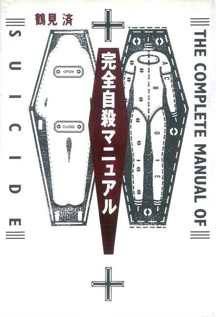
This book describes in detail how to commit suicide.
This book is not a chronicle of suiciders, nor is it an attempt to explain the reasons for suicide. Although it can be read as a book of miscellaneous notes, the entire book is in the direction of “how to commit suicide”.
Maybe you are tired of the long-winded opening remarks.
I don’t know since when, the topic of “Why do young people want to die?” has been discussed over and over again. For example, in the 1970s, the conclusions reached were “Triple-nihilism” (三無主義 “Sanmu-shugi”, meaning “no power, no interest, no responsibility”), “Apathetic generation” (しらけ世代 “Shirake-sedai”) and so on. However, questions such as “Why can’t you commit suicide?” and “Why must you live?” have never been answered.
Closer to home, what is needed now is a book that can make “suicide” come true.
Come to think of it, I remember getting fed up with a book that came out about 10 years ago that claimed to “describe how to commit suicide” because it was just filled with nonsense. What you need to know now is simply how to commit suicide.
In the United States, there is only one euthanasia device, invented by a scientist (see Chapter 11, Case study 30). This book will be the only “purely textual euthanasia device” in Japan.
At this point, I really want to start the book by describing how overdose works. However, in order to clarify the answer to “Why commit suicide now?”, as well as various commercial concerns,1 I have to write some miscellaneous things first.
… I was waiting for the opportunity, ready to “show something big”. When the student riots broke out twenty years ago, everyone thought, “Someone big is about to appear!”. The Apollo landing on the moon, the oil crisis, the Soviet Union’s invasion of a certain country, and the Showa era were about to end. I thought, “This move will be earth-shattering.”. However, it was only a magnitude-3 earthquake, and it only brought down a wall. The students looked at each other, smiled and said “Great!” and with that, the gathering came to an end. …
Excerpt from the postscript of Yoake (夜明ケ) by Kotobuki Shiriagari.2
At the end of the 1980s, “end of the world” and “dangerous topics” were trending. The most popular band sang “Chernobyl”3, and children’s jokes were all filled with the flavor of death, girls began looking for companions in preparation for the coming world war. We were excited about “Someone powerful is about to appear!” and “Maybe tomorrow will be the end of the world!”
However, the end of the world did not come. The atomic bomb never exploded, and the dream of all-out nuclear war disappeared without a trace. The revolutionaries of the 1980s were thoroughly frustrated.
In the end, everyone finally understood that “showing off their talents” was impossible to achieve, and the 22nd century would definitely come. (Of course, the 21st century is coming, because there will be no “world war”.) The world will definitely not end. Just a brief encounter with the “other world” and “outside” cannot satisfy our urge. If you want greater excitement, if you really want the world to end, you can only do “that thing”.
It won’t help to say it’s “boring” - because we are unlucky enough to be born on this stage of history.
Until the 22nd century, we would get up at seven o’clock every morning, go to school or go to work, and repeat some unfocused remarks. At school, I kept reciting English words and historical dates again and again; at work, I said something like “It’s boring”, but repeated it for several weeks, one week, one month, and one year. Months and years of doing work that was actually really boring. The slow pace of state-of-the-art products continues, the slow pace of politicians continues to be corrupt, and the slow pace of television content continues to be exciting. But when I turn off the TV and look around, it’s just another day as usual. (Evoking “that wonderful darkness that happens when you turn off the TV” is another of the book’s goals.)
Yukio Mishima4 mentioned in his autobiographical novel “Confessions of a Mask” that “everyday life” is more terrifying than war. We always live this kind of “shivering and terrifying daily life” enduring it again and again. In order to bring about an inexplicable “future settlement”. We took every step along the way, carefully avoiding any deviation in direction. There is no happy ending like in a TV series. However, the strange “joy” always continues slowly and slowly. Yes! The key words are “slow steps” and “repetition.” The constant, slow repetition of the same things; this is the first factor that increases our death wish.
In 1978, an “Amidakuji suicide incident” occurred in Japan.5
A pair of highschool twin sisters living in Toyama Prefecture, Japan, were found hanging in the woods. In the notebook of one of them, an Amidakuji game was drawn with four straight lines and several horizontal lines interlaced. Under the Amidakuji, the incomprehensible words “X of Japanese”, “Suicide”, “ROS”, and “Gosanke” are written respectively. The line drawn from above goes all the way to the “Suicide” point. Since their parents could not figure out the motive for their suicide, they concluded that they committed suicide because the Amidakuji said so. It is said that “ROS” may have meant “Rolling Stones”, since it also has words like “Japanese X” and “Hate Asians” written on it, it might have something to do with it. However, I still can’t understand the meaning of these words.
Once upon a time, a judge said: “A single human life weights more than the entire earth.” However, this is an extremely worthless misunderstanding. As two high school girls in the 1970s have already realized, a human life is very light, as light as strange words like “X of Japanese” and “ROS”.
In the late 1950s, an American mass society theorist said: “The masses have fallen into a sense of powerlessness due to social atomization.”6 In the late 1970s, a British rock band sang “All in all you’re just another brick in the wall” (Another Brick in the Wall, 1979 song by Pink Floyd), a song that became very popular. Even in the 1990s, this situation in Japan has not changed.
As always, every one of us is just another brick in the wall – the proof is that if any one of us dies, someone will take his place. No one’s existence is irreplaceable, and no politician is worthy of assassination. Only one brick missing will not collapse the wall.
Each one of us is full of a sense of powerlessness, and it doesn’t matter whether we exist or not. In other words, life is light; this is the second factor that inflates the death wish.
With this sense of powerlessness, we repeatedly do the same things at a slow pace, forgetting little by little “the reality of being truly alive”. I have gradually forgotten whether I am alive or dead. Do you feel that you are “alive”? Now, there is only an almost invisible line separating life and death.
Therefore, relegate to the sidelines platitudes like”Life is very important, so you cannot commit suicide.”, “As long as you can live, everything will turn around.”, “Because people around you will be sad, so you must live.”. Not convincing anymore. The effective words to stop suicide have disappeared; signals to guide towards suicide have appeared.
Yes, you can die. If you go to work or go to school, if life is uncomfortable, boring, or even painful, you can cross the hair-thin line, almost invisible, and seek death, and may no one stop you.
As I said before, nothing will change substantially as long as we live. Although I have no psychic powers, I can generally tell what will happen to society or ourselves in the future. “The future! The future!”, no matter how convincing this chant sounds, it is useless. Your life will probably consist of attending primary school and middle school in the place of your birth, attending cram schools to study for the national entrance exam, and then enter a high school or university. After messing around for four years, you will work in some corporation. If you are a man, you’d likely get married in your 20s or 30s, have a child in the next year, perhaps a few job switches or promotions, up to the position of manager. You will retire at the age of 60, and quietly cultivate your own hobbies for the next ten or twenty years. Finally, you will die. That’s it really. Moreover, what makes us despair is that this is supposedly the most reassuringly ideal life.
In this consideration, ordinary life no longer has any significance. If you are not alive now, perhaps you are just like a young chicken ready for roasting, passively given a life that you must live. Therefore, drawing a pause in life at an appropriate place is not a matter of “being sad”, “it won’t happen again”, or “worrying about the ripple effects”.
Suicide is a positive act.
I have a friend who has a drug called “angel dust”7. He claimed that after taking it, his mind would become hazy, and he can jump from tall buildings without the slightest hesitation. He packed it in a small metal pouch, made into a necklace, and wore it everywhere he went. He said: “When needed, I can eat this to seek death.” My friend does not have a fixed job, and he is idle every day and has a very happy life.
I hope this book can be your metal pouch necklace.
This section was written by Rena, the Chinese translator.
On the verge of despair, and searching for a way to commit suicide, I stumbled upon this book and became deeply fascinated by it. Because of the particularity and age of this book, it took a lot of effort to find this precious, albeit incomplete, Chinese translation. “Complete the translation and proofread this book!” was my final wish at the final moment. Watching the book change from incomplete to complete, I was filled with a sense of accomplishment, and was able to leave peacefully.
It is worth noting that this book does not mention the more commonly used method of suicide by burning charcoal, so I privately added a section on suicide by burning charcoal (in the “Gas-poisoning” chapter) and some other content. Someone could improve this book, which I think is a motion the original author would support. In addition, with the passage of time, many drugs in the “Taking medicines” chapter (especially bromides and barbiturates) have been replaced by relatively less toxic substances and the control of these substances has become stricter. But I have still tried my best to list and annotate the ingredients of these drugs in the hope of helping those in need.
Because my medical and pharmaceutical knowledge is poor, and I am on the verge of chaos and collapse at the time of proofreading, the contents of the book inevitably contain errors and omissions. Forgive me.
Finally, I would like to thank the translator of the Traditional Chinese version of this book, and everyone who has helped me during this process. Without you, none of this would be possible today. (Rena, 2018-08-05)
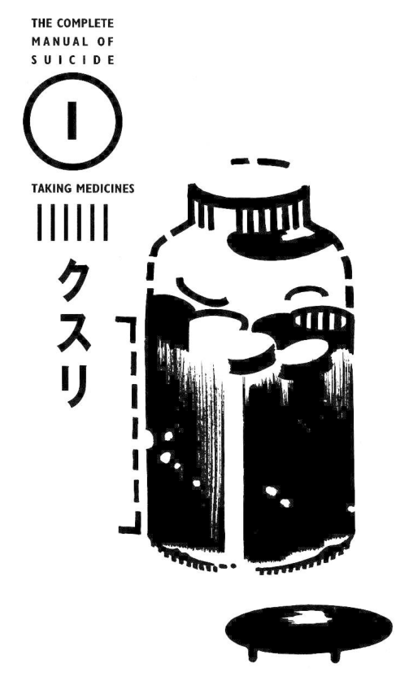
| Pain | －－－－－ |
| Trouble | ▼▼▼▼▼ |
| Ugliness | ▼▽▽▽▽ |
| Ripple8 | ▼▽▽▽▽ |
| Impact9 | ▼▽▽▽▽ |
| Lethality | ▼▽▽▽▽ |
If you can manage it, overdose is the best way to commit suicide. However, there are so many cases of failures, and excessive preparation time is a major problem. The degree of pain varies depending on the drug.
Scattered on the table are capsules and tablets in various colors such as red, yellow, and blue, or a small pile of snow-white powder. When you swallow these, you will slowly fall asleep and never wake up again. This is death as an extended bout of a peaceful sleep, and so it is the most ideal method of suicide, only reachable through drugs.
Certain drugs control the mind. The brain is the system control device responsible for the self-organization of the human body. Whether it is respiratory function or heart beating, the functions of life-sustaining activities are controlled by the brain. It should be noted here that the technique used to destroy the entire “self” system by gradually losing coordination through drugs is a kind of do-it-yourself lobotomy method.
A substance that cannot ever be fatal cannot be medicine.
No matter what kind of drug, there is an “effective dose”, a “toxic dose” and a “lethal dose”. Some experts also say, “The dose makes the poison.” Any drug can kill. It’s just that the gap between the effective dose and the lethal dose is typically quite large. To reach the lethal dose, a considerable amount must be swallowed, a difficult task. With modern pharmaceutical science, this gap has become wider and wider. In other words, they are safer drugs. What I want to describe here are those where the gap is narrow.
However, the problem lies in the “lethal dose”. The doses quoted in this book are the lethal doses of drugs recorded in various literatures, but it also varies from across literature, and the range is also very large. At the same time, the lethal dose varies greatly depending on the individual’s constitution, and whether they take the medicine regularly. Therefore, there are some people who take a large dose and survive, but other people who take a small dose but die.
The “lethal dose” that should determine the boundary between life and death sometimes fails to cause death due to different doses, varying qualities, and individual differences. So some researchers say that if you really want to die, just take three times the lethal dose. So we see that the “lethal dose” does not mean “the dose that kills”. This book temporarily refers to the midpoint between the minimum and maximum lethal dosages quoted in the literature (and unless otherwise stated, all dosages are for adults). This is only a general standard. This ambiguity about the lethal dose not only point to the blurry line between life and death, but is also the biggest reason that overdose suicide is difficult.
However, there are a few more words to say here. You will never die just by slicing your wrist, but if you take the drugs listed here, you will actually die. If you just want to have a taste of suicide (which is not a bad thing), it is better to cut your wrist.
The most important thing to avoid is vomiting out the medication you have taken. Death from overdose is basically acute chemical poisoning. Just imagine drinking alcohol. Of course, alcohol poisoning can be fatal. Often there are cases of college student dying from alcohol poisoning. However, usually when the body can no longer bear it, it will vomit it out. It’s just swapping alcohol for drugs. It is natural to vomit due to a large overdose. So, getting the right amount is very difficult.
Of course, there are ways to prevent vomiting, which simply enhance absorption by the digestive organs, just like allopathic treatment. There is no way to deal with vomiting due to physiological rejection reaction. In short, you can only try to take it towards the “lethal dose”, even if it’s just one more tablet.
Another thing you should pay attention to is to understand the “lethal dose” before taking drugs. There are many drugs that can kill. For example, the sleeping pill Hazard is becoming a hot topic nowadays. Drowsiness comes quickly and memory may be lost after taking it, so it seems very dangerous, but it is a very safe drug. A 27-year-old woman who drank alcohol and swallowed eighty tablets of Halcyon got up like a sleepwalker after falling asleep, said to her parents, “… go to Lawson …”11 and then fell down. She regained consciousness the next day after being sent to the hospital, and the results of the examination were normal. Just looking dangerous won’t kill anyone.
This book does not introduce drugs whose lethal dose is unknown. Actions without a plan will not only fail but also cause unnecessary pain. A housewife who swallowed potassium cyanate scratched her chest all night and was found to be a bloody mess.
By the way, many of the rumors about drug suicide are false. People often say that it will leave serious sequelae to the internal organs or brain that will last a lifetime, but judging from the drugs listed in this book that have an effect on the nervous system, some doctors say that almost all of them have no such side effects.
There are also “anti-suicide advocates” who claim that health insurance does not cover the cost of suicide treatment, so it costs a huge amount of money, but this is also untrue. A 26-year-old woman was admitted to the hospital after swallowing 20 tablets and 20 packets of powdered sedatives whose ingredients and dosages are unknown, but which are considered to be the most powerful drugs in hospitals. She was in a coma for two days, but she used her insurance card to pay for her medical bills. Therefore, it is also important to pay attention not to be deceived by lies.
First, there are various strategies to prevent vomiting. The easiest way is to place the drug on something like a green wave and bake it with fire to melt it, or dissolve it with hot water to become an aqueous solution, and then inject it into the vein with a syringe. In this case, of course there will be no vomiting, but it will have a greater effect than gastrointestinal absorption and require much less. If air is mixed into the syringe, air embolism may occur in the cerebral blood vessels and lead to death. There are also cases of death caused by shock caused by foreign matter other than blood mixed into blood vessels. There will be considerable pain in the blood vessels due to the mixing of foreign matter. In the case of multiple injections, if the pain is severe, you can apply a cold compress to the arm. In short, you need to think of something.
For those who want to die by taking medicine instead of injections, it is necessary to adjust the state of their stomach in advance. In order to absorb the drug more quickly and effectively cause acute poisoning, food should not be left in the stomach. But if you are too fasting, you will have an allergic reaction and vomit. It is difficult to control the proportion.
About an hour before deciding to commit suicide, you should drink a cup of black tea, eat a piece of toast, and take some anti-intoxicants. Tablets should be crushed in advance and put into a grinder to form a powder. The capsule should be removed, leaving the powder, or placed in hot water to dissolve into a liquid. Then mix the medicine into pudding or yogurt, add some honey, and swallow it quickly. But some experts say mixing the drug in pudding or yogurt won’t speed up absorption. Perhaps it’s better to think of it as a way to aid swallowing.
Drinking some wine at the same time is a must. It is said that alcohol has a mutually reinforcing effect on drugs that have an effect on the central nervous system. It can accelerate the dissolution rate of any drug, and the effect can be increased by 50% when used together. In addition to wine, it is best to prepare a few more drinks.
Furthermore, you must choose a place that others cannot find, and at least a place where you can stay alone within eight hours. For example, a hotel is the most suitable. If someone discovers it within a few hours, it becomes a suicide attempt and requires repeated enemas. A 25-year-old woman who was given an enema for a suicide attempt said, “If I had known it would be so painful, I would not have committed suicide.” (However, she also said, “Maybe I will commit suicide again.”)
Once the preparations are complete, let’s start introducing the drugs.
The drugs sold over-the-counter are typically not very toxic. Professional books say: “[OTC drugs] are almost never fatal if taken in large amounts in a single dose.” Although this statement cannot be considered correct, it is indeed difficult to commit suicide by taking OTC drugs. As mentioned above, drugs have various amounts that produce effects and cause poisoning. Therefore, medicines that are produced with low toxicity while maintaining a certain distance from the poisoning amount are popular medicines. Therefore, it is sold in general pharmacies. However, the basic points of suicide pills are that they are “easy to obtain” and “you will fall asleep after taking them.” If you can’t get it, even introducing it is meaningless. It is necessary to know that it is difficult to cause death by taking popular medicines, but in the past, professional books said that “it is almost impossible to cause death.” In other words, it is not 100% impossible, and this exception is introduced here.
[
Translator’s note: The letters appearing in the tables, such as
(A), are citation keys. I did not translate those, but here
is the citations page.
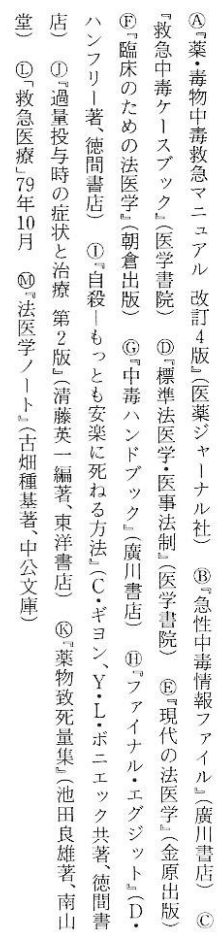
]
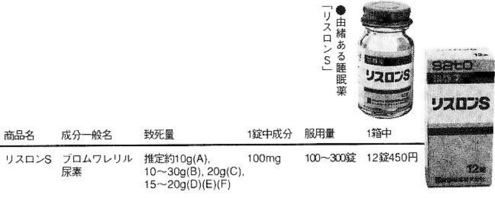
| Product Name | Standard name | Lethal Dose | Ingredients in One Tablet | Dose (Lethal) | One Box of Servings |
|---|---|---|---|---|---|
| Risuron S | Bromvalerylurea | Estimated 10g(A) 10～30g(B) 20g(C) 15～20g( D,E,F) |
100mg | 100～300 pieces | 12 pieces/450 yen |
The “standard name” refers to the name of the active ingredient in the drug. The “product name” is the trademarked names for trademarked products produced by specific pharmaceutical companies. For example, “Aspirin” is a product name for drugs with the active substance of “acetylsalicylic acid”.
In the 1950s and 1960s after the war, there was a second sleeping pill suicide craze. Mainly young people in their twenties, the number of people who commit suicide by taking sleeping pills greatly exceeds the number of people who hang themselves. Bromovalerylurea was sold under the brand name “Burobarin” (ブロバリン), and was the main drug for the second suicide craze. At the time when Ryūnosuke Akutagawa committed suicide by taking sleeping pills in 1926, causing the first suicide craze, bromovalerylurea was sold under the name “Calmotin” (カルモチン), and widely used. Osamu Dazai also used Calmotin to make several lover’s double suicide attempts. Therefore, it is clear that bromovalerylurea is a long-standing suicide drug in Japan.
Currently, bromovalerylurea is designated as a “drug that must be used under a doctor’s instruction” and cannot be purchased without a doctor’s prescription. “Risuron S” (リスロンS) (Sato Pharmaceutical Co., Ltd.) sold on the market has the same ingredients and dosage as Burobarin. Obviously this is legal. Because the amount of bromovalerylurea in each tablet is less than 500mg and can be sold. These are 8mm-diameter tablets, white in color and bitter in taste.
When the conditions are ripe, as long as a lethal dose is taken, the central nervous system will fall under the drugs’ effect, (the excitatory powers of the brain and spinal cord nerves will fail), and consciousness will be lost quickly. Death will occur mainly due to respiratory arrest in about an hour. Someone died after taking 50 tablets of burobarin (Case study 2), but it is still appropriate to take 200 tablets. 200 tablets is enough to fill both hands. If this is all that’s needed amount, then there is no need to mix it with yogurt (Case study 1).
In addition, medicines that contain 100 mg of bromovalerylurea in one tablet include “Muurumin” (ム－ルミン, by Kobayashi Pharmaceutical Co., Ltd.), “Day and Night” (Taisho Pharmaceutical Co., Ltd.), etc. “Risuron S” is made purely from bromovalerylurea, but others contain some caffeine and other ingredients. Because it contains other active ingredients, the total dosage increases, and the possibility of vomiting increases.
In addition, the acetaminophen, mentioned later, is often sold in tablets that also contain 150 mg of bromovalerylurea. If you take 100 to 200 tablets equivalent to the lethal dose of bromovalerylurea, you will also reach the lethal dose zone of acetaminophen. This is double the lethal dose and even more dangerous.
The instruction manual for “Risuron S” says that it is “a drug that has a sedative effect on anxiety and tension.” You can buy it by simply repeating the symptoms to the pharmacy, but the biggest problem is how to buy 10 to 20 boxes of that. Most pharmacies would have not that much stock, and pharmaceutical companies don’t typically sell that much to pharmacies, so you can’t buy enough all at once. In some cases, the product may not be sold due to the judgment of the pharmacy. Pharmacies near major stations generally have supplies. You can look for about five of them and bought them every half month, and get twenty boxes in two months. You can take 2 to 3 tablets of this medicine every day, and since there are only 12 tablets in the box, so it is not surprising to buy it every ten days. However, in order to prevent abuse, pharmacies sometimes do not sell it, or ask about symptoms, or refer you to the hospital. A pharmacy staff member said: “I won’t sell to anyone who looks wrong.” In this case, you can explain that “I don’t want to go to the doctor.” or “It would be terrible if my colleagues (classmates) know that I are not mentally healthy.” The same goes for drug abuse. If you can’t find a pharmacy that sells it, call the pharmaceutical company and they will tell you which ones sell it.
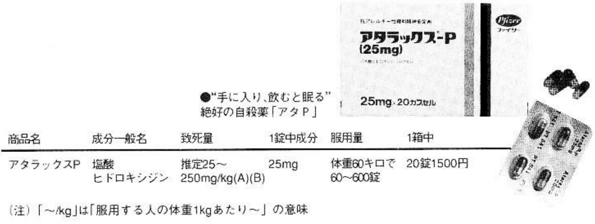
| Product Name | Ingredients | Lethal Dose | Ingredients in One Tablet | Dose (Lethal) | One Box of Servings |
|---|---|---|---|---|---|
| Atarax-P | Hydroxylammonium chloride | Estimated 25～250mg/kg | 25mg | 60～600 pills (weight 60kg) | 20 pills/1500 yen |
This medicine is sold in most pharmacies. It is very easy to buy 60 to 600 capsules, that is, 3 to 30 boxes. As mentioned before, “get it, take it and fall asleep” is the condition for sleeping suicide pills, and this “Atarax-P” (produced by Pfizer) is the drug with the best conditions. The lethal dose is 25 to 250 mg per kilogram of body weight. The range is too large and it is a vague guess. Therefore, a person weighing 60 kilograms can take 600 tablets.
Just placing 600 small green capsules in front of you will give you an illusion that “it looks like a lot”, but the ingredient in one capsule are only 20mg. There is yellow powder in the capsule, and when you take them out and pour together, it is only a quarter of the size of a small bowl. This amount is easy to take without mixing it in yogurt.
Hydroxylammonium chloride has the effect of inhibiting the central nervous system and stabilizing the autonomic nervous system. When taken in large amounts, sleepiness, fatigue, dizziness, and eventually death due to respiratory arrest may occur. Be sure to take it with alcohol. The inhibitory effect on the central nervous system will be enhanced, and the effect will be better if the body is cooled at this time.
Drugs with the exact same ingredients include “Jisuron P” (ジスロンP, Imperial Chemical Co., Ltd.) and “Bobusuuru” (ボブス－ル, Kato Suisatsudo Co., Ltd.). Atarax-P is available in packs of 100 tablets.
However, a 40-year-old woman who took 100 tablets of Atarax-P and drank a bottle of beer and a glass of whiskey lost consciousness and vomited 17 hours later. She was found and sent to the hospital. She recovered and was discharged two days later. All in all, think twice and take more.
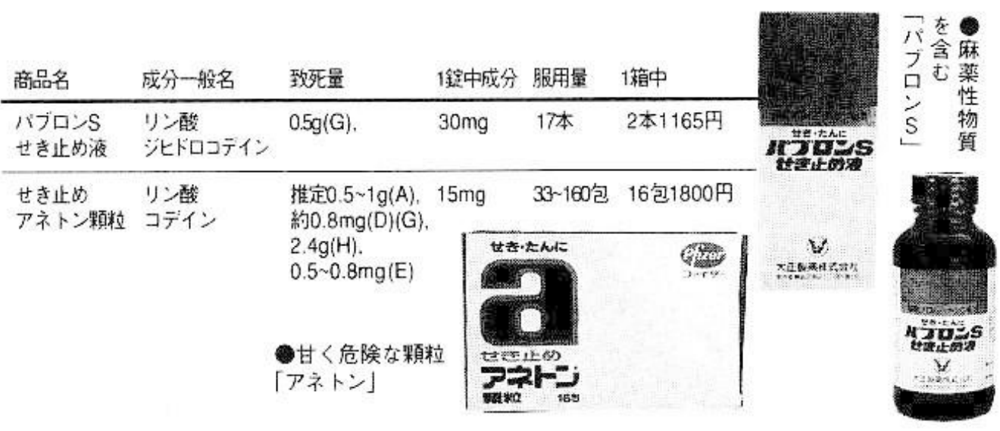
| Product Name | Ingredients | Lethal Dose | Ingredients in One Tablet | Dose (Lethal) | One Box of Servings |
|---|---|---|---|---|---|
| Paburon-S Cough Liquid | Codeine Dihydrophosphate | 0.5g(G) | 30mg | 117 bottles | 2 bottles/1165 yen |
| Aneton Granules | Codeine Phosphate | Estimated 0.5g～1g(A) About 0.8g(D,G) 2.4g(H) 0.5～0.8mg(E) |
15mg | 33～160 packs | 16 packs/1800 yen |
In the 1980s, there was a popular game of “drinking cough drops in one gulp and then jumping like crazy”. This is because cough drops contain anesthetic substances such as codeine, which acts on the cough center in the brain to relieve coughs, and ephedrine, which dilates the trachea. Codeine is a component of opium, and although the lethal dose of ephedrine is unknown, it is a raw material for stimulants, so it is very dangerous. It should be banned, but it will not stop coughing if you don’t use it. Therefore, most of the cough suppressants sold now contain these two ingredients.
“Paburon-S” (Taisho Pharmaceutical) is also one of this type of drugs. In the 1980s, “Buron liquid” (SS Pharmaceuticals) was widely used, but now this medicine does not contain ephedrine, so here is dihydrocodeine phosphate, which has an almost identical structure to codeine. 30 mg and “Paburon” of dimethylephedrine hydrochloride (methyl ephedrine), the sister ingredient of ephedrine. Codeine phosphate can cause drowsiness when taken in large amounts, while ephedrine has a wakefulness effect. Overall, it is not so much sleep as it is a strong excitatory effect, leading to increased heart rate, accelerated breathing and death due to circulatory insufficiency. In addition, cough suppressants containing 30 mg of dihydrocodeine include “New Deni Cough Liquid” and “New Dihydrocodeine Cough Liquid” (Kowa).
The content of dimethylephedrine hydrochloride in “Aneton Granules” (by Pfizer) is 10 mg. In the book Final Exit, it’s stated that codeine lethal dose is 2.4 g, so just believe it and take more than 240 granules, which is just a small bowl in terms of quantity. An expert’s opinion is: “Things mixed with yogurt and the like” have white particles and a sweet taste.
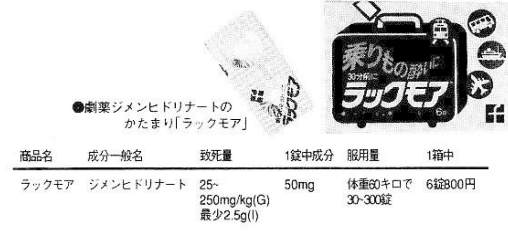
| Product Name | Ingredients | Lethal Dose | Ingredients in One Tablet | Dose (Lethal) | One Box of Servings |
|---|---|---|---|---|---|
| Rakkumoa | Dimenhydrinate | 25～250mg/kg(A) At least 2.5g(I) |
50mg | 30～300 pills (60kg) | 6 pills/800 yen |
Antiemetics, surprisingly, contain many dangerous ingredients. After a 24-year-old woman took 7.5g of dimenhydrinate in order to have an abortion, she developed vomiting, dizziness, convulsions, fell into a coma, and died due to respiratory insufficiency 90 minutes later. “Rakkumoa” (Fujisawa Pharmaceutical Co., Ltd.) contains pyridoxine hydrochloride 7 mg and caffeine anhydrous 14 mg in addition to dimenhydrinate, making it easier to obtain than pure dimenhydrinate medicine. This is a slightly larger tablet with a three-layer structure of white, blue and white. Drugs containing 50mg of Dimenhydrinate include “Carax” (Kyoei Pharmaceutical), “Dimenhydrinate”, “Moder” (Moder Pharmaceutical), “Drive Soft” (Choseido Pharmaceutical), etc. There are several types, and they are also sold in pharmacies. In addition, if you can die by taking at least 30 tablets, it is perfect for suicide.
The problem with taking this drug is sleeping well. As mentioned earlier, this drug affects the central nervous system and causes respiratory arrest. Side effects include drowsiness, headache, etc. However, since it is not a psychotropic drug, it cannot fall asleep quickly. If you must sleep, you can use sleeping pills on the market together.
However, there are also cases of 20-year-old and 22-year-old men who took 800mg of dimenhydrinate and experienced hallucinations but did not die.
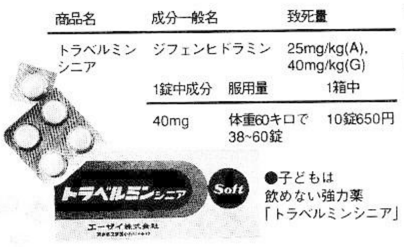
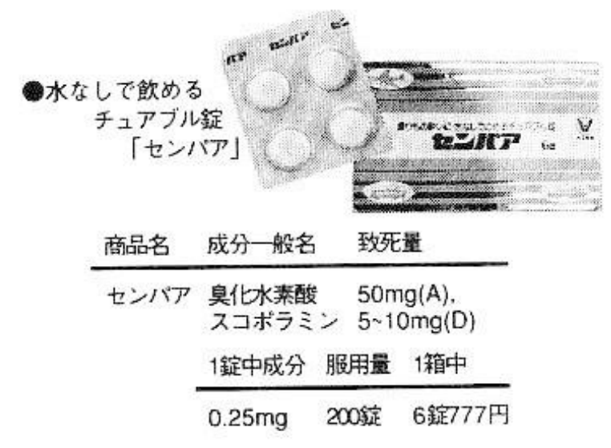
| Product Name | Ingredients | Lethal Dose | Ingredients in One Tablet | Dose (Lethal) | One Box of Servings |
|---|---|---|---|---|---|
| Travelmin Senior | Diphenhydramine | 25mg/kg(A) 45mg/kg(G) |
40mg | 38～60 capsules (60kg) | 10 capsules/650 yen |
“Can the famous ‘Travelmin Senior’ also kill people?” Some people may have questions. The ingredients of “Travelmin Senior” are 40 mg of diphenhydramine and 26 mg of diprophylline. There are not many other ingredients, and the dangerous ingredient diphenhydramine accounts for the largest proportion. There are also many others that contain ingredients that prevent drowsiness such as caffeine. Diphenhydramine acts as an antihistamine, causing a mixture of central nervous system depression and excitement symptoms. Produces severe brain stimulation and severe loss of consciousness. However, antihistamines have a hypnotic effect. It is forbidden to drive a vehicle after taking them. If you take them in large amounts, you will fall asleep.
| Product Name | Ingredients | Lethal Dose | Ingredients in One Tablet | Dose (Lethal) | One Box of Servings |
|---|---|---|---|---|---|
| Senpaa | Scopolamine hydrobromide | 50mg(A) 5～10mg(D) |
0.25mg | 200 capsules | 6 capsules/777 yen |
The advantage of anti-vomiting and anti-sickness medicine is that people think that “No one would commit suicide using that kind of medicine.” When you go to buy something, you can say, “I want to buy more medicine to prevent motion sickness because I’m going on a long trip.” and the pharmacy won’t be suspicious. Senpaa (Taisho Pharmaceutical) only has six tablets in a box. If you want to buy 200 tablets, you only need 33 boxes. There is no need to worry.
Scopolamine hydrobromide has a parasympathetic nervous system inhibitory effect and can inhibit breathing if taken in large amounts. Side effects include drowsiness, confusion, hallucinations, difficulty swallowing, etc. It is questionable whether you will fall asleep immediately after taking it. There are many drugs containing scopolamine hydrobromide to prevent motion sickness. Among the drugs currently available on the market, Senpaa has the highest content of scopolamine and does not contain other unnecessary ingredients. It is a large tablet with a diameter of one centimeter. Take 200 tablets and break them to a fine powder. It is not bitter.
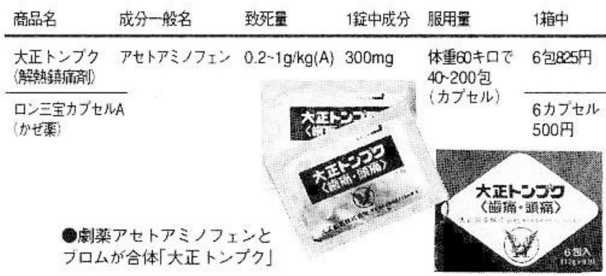
| Product Name | Ingredients | Lethal Dose | Ingredients in One Tablet | Dose (Lethal) | One Box of Servings |
|---|---|---|---|---|---|
| Taisho Tonpuku Ron Sampo Capsule A |
Acetaminophen 8 | 0.2～1g/kg | 300mg | 40～200 packs (60kg) | 6 packs/825 yen 6 capsules/500 yen |
“Taisho Tonpuku” (Taisho Pharmaceutical) and “Ron Sampo Capsules A” (Sampo Pharmaceutical) contain 300 mg of acetaminophen, which has a sedative and antipyretic effect. Ingesting large amounts can cause drowsiness, dizziness, headache, nausea, vomiting, and drowsiness. In the end, it endangers the liver and leads to death. It cannot be said that it is a sleeping pill. However, one pack of Taisho Tonpuku contains 200mg of bromovalerylurea, so it is easy to fall asleep. The precautions for the drug also state that it “may cause drowsiness” and it is forbidden to drive a car or operate machinery after taking it. It is a small white granule with a bitter taste but a cooling sensation in the mouth after taking it.
Analgesics such as “Noushin Arakusu” also contain 300mg of acetaminophen in one bag. There are many other complexes, but this one has the advantage of “you can buy a lot at once”. If you want to list acetaminophen-containing detoxification and analgesics, there are too many to mention. There are many on the market, so you might as well buy them in lethal doses. For example, a 49-year-old woman took 30 tablets of of “SEDES A” (80 mg of acetaminophen, 100 mg of bromovalerylurea, 200 mg of ethylsulfamide, 25 mg of anhydrous caffeine) caused liver and kidney failure. After sixteen days of excitement and lethargy, she died due to respiratory arrest. The woman who died after taking only 30 tablets (acetaminophen 2.4g) was lucky. Among the ingredients in “SEDES A”, the one that causes the most severe side effects is acetaminophen. The “New SEDES A” currently sold (Shionogi Pharmaceuticals) use allylisopropylacetylurea 10 30mg and caffeine 40mg instead of bromovalerylurea, and the other ingredients remain unchanged.
8 Acetaminophen: over-the-counter analgesic and fever-reducing drug. Taking more than 7.5 g/day or 150 mg/kg may cause liver damage.
9 Ethenzamide: salicylic acid antipyretic and analgesic. The analgesic effect is similar to that of salicylic acid derivatives such as aspirin, but side effects can cause liver and kidney damage. The LD50 when administered orally to mice is 549 mg/kg
10 Allylisopropylacetylurea: sedative drug that has a depressive effect on the central nervous system and is addictive.
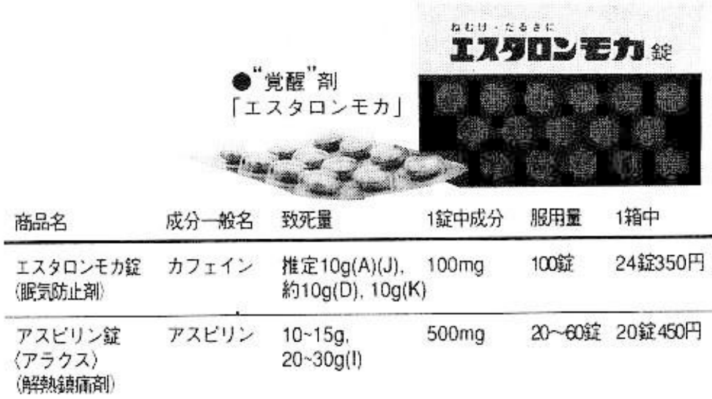
| Product Name | Ingredients | Lethal Dose | Ingredients in One Tablet | Dose (Lethal) | One Box of Servings |
|---|---|---|---|---|---|
| Estalon Mocha | Caffeine | About 10g (A, D, J, K) | 100mg | 100 pieces | 24 pieces/450 yen |
| Aspirin | Aspirin | 10～15g 20～30g(I) |
500mg | 20～60 pieces | 20 pieces/450 yen |
Some people think that “drinking coffee all the time” and not caring much about caffeine is bad. Caffeine stimulates the vasomotor center and respiratory center in the brain, strengthens the muscle contraction of the heart, and is a highly stimulating agent. Drinking large amounts can cause excitement, increased blood pressure, ventricular fibrillation (a phenomenon in which the ventricles in the lower part of the heart contract), cardiopulmonary arrest, and death. Aspirin stimulates the central nervous system and metabolic system such as the respiratory center, leading to rapid breathing, metabolic abnormalities, high fever, death due to respiratory failure or shock, and damage to the kidneys. Both have stimulant effects and will never cause sleep after taking them, but they are introduced because they are easy to obtain and can cause death in small amounts. It is an unforgettable medicine for people who want to die peacefully. For example, a 21-year-old female student who took 100 tablets (50 g) of 500 mg aspirin experienced various symptoms such as fatigue, nausea, excitement, shortness of breath, and lethargy. About nineteen hours later, she suffered from respiratory failure, collapsed, and died. Judging from the above examples, the time from taking aspirin to death is quite short.
Caffeine and aspirin, which were introduced because they contain the least unnecessary ingredients, are commercialized in large quantities, such as “Estalon Mocha” (エスタロンモカ, coffee-colored tablets, extremely bitter taste) and aspirin tablets (used to be a trademark for acetylsalicylic acid, but has long fallen into generic use). There are “Coffee Soft Tablets” (エカ－フェソフト錠, produced by Eezai エ－ザイ), “Coffee Cool Tablets” (カフェク－ル, produced by Arakusu アラクス) and other medicines that prevent dozing off. For aspirin, there are antipyretic analgesics with aspirin as the main ingredient, such as “Grandol” (グランド－ル, Fujisawa Pharmaceutical Co., Ltd.) and “New Grelan A” (新グレランA, Takeda Pharmaceutical Co., Ltd.).
On 1956-08-02, at around 10 in the evening, a movie theater in Mejiro District, Tokyo, was showing two movies in succession. The receptionist noticed that a young man was still sleeping, so she planned to wake him up, but found that the man was already cold. He slowly swallowed 200 tablets of Brovarin12 and 30 tablets of Adorm13 while drinking alcohol. After being rushed to the hospital immediately, he slept for a whole day and night, and died early on the 4th.
He was born in Tokyo and was 23 years old when he died. He dropped out of Tokyo University of Fisheries and worked for a pharmaceutical company for four and a half years, mainly in packaging and delivery. His brother is also a pharmacist at a pharmaceutical company, and he probably got the lethal dose of the drug and the method of taking it from there.
On July 28 of the previous month, on the same day that he resigned from the pharmaceutical company due to “personal reasons”, he started promoting “buy now, pay in installments later” in a department store. However, he was extremely dissatisfied with the company’s policy that if the target performance was not achieved, all commissions would be owned by the company. On August 1, the day before his suicide, he sent a letter to the Asahi Shimbun’s submission column that read “That day, when I leave this world, I loudly call out this company’s illegal practices.” A letter, in other words, that announced his own death.
He wrote in his suicide note to the director of the department store, “Before I decided to do something that I had already decided on, I just encountered the department store by chance. Though the law of the jungle existed in this society, I do not blame its existence on the low-level people in the organization…” This shows that he did not commit suicide in order to accuse the company of injustice. He was a cheerful man with a philosophical side. The motive behind this young man’s suicide, who once locked himself in a room to write a detective novel, remains unknown.
What needs to be tested here is not the strange behavior he took before death, but that he swallowed 200 tablets of Brovarin and 30 tablets of Adorm. He took a large amount of sleeping pills such as barbituric acid without vomiting them up, and completed his suicide. Normally, swallowing such a large number of tablets would result in vomiting them out. This is one of the shortcomings of committing suicide by taking poison. He probably swallowed them bit by bit during the two hours or more of the movie’s release, and proved that if you take in little bits and swallow, you won’t spit it out.
Brovarin was sold only in units of 100 mg. He swallowed 20 grams, which was enough to reach a lethal dose of 10 – 30 grams. It is said that if you drink alcohol with these sleeping pills, the effect will be ten times greater. He probably heard this from his brother.
In May 1972, a 20-year-old student slipped from his chair in his room and died. There is a suicide note on the table in his room, a brand new notebook titled “The Last Moments”, which begins with “I did not escape from this society due to the influence of the so-called misanthropy. The reason why I want to disappear now is because I feel that now It was the right time that made me decide to commit suicide.”
What’s even more strange is that he wrote in detail the process from swallowing the drug until he lost consciousness in his college notebook.
“It is now 1972-05-19, 10:07 in the afternoon. I swallowed 50 Brovarin tablets two or three minutes ago. I don’t know how many minutes or hours later I will fall asleep and be with this Farewell to society, but I will observe my own death until the last moment… 10:15, and I don’t want to sleep at all. I turned on the radio and listened for a while, then turned it off. I wanted to stay calm but I was still excited, as usual. The music I used to love sounds so boring today. I want to review my life carefully… (what follows are five sheets of description of his parents and friends)… 11:30. I have been yawning since just now. I see the last moment coming. But I want to observe the mood of death until the last moment, so I keep telling myself to persist. I don’t know when my body will be found, but I want to see my own desire It keeps coming up. … Now, 12 o’clock, and I, 5 minutes”
The note ended here, and it was about this time that he lost consciousness.
Brovarin 50 tablets are equivalent to 5 grams of bromovalerylurea, which is much lower than the lethal dose, but I don’t think the young man is lying, so I know that he will die even if he swallows such a large amount. At the same time, I also learned that swallowing 50 tablets of Brovarin will slowly increase sleepiness, and you will not wake up after falling asleep for about two hours. There was no pain at all until he lost consciousness, and his consciousness was very clear. Of course, this will vary greatly depending on your physical strength and health. If you fall down immediately, you will probably fall asleep in a shorter time.
His suicide can really be said to be an “experiment.” Regarding leaving a record, he wrote: “To die without leaving anything behind can easily be misunderstood as the result of melancholy that is often the case at my age. I do not want to be misunderstood in any way, so I am here calmly Leave me to look carefully at my own evidence.” However, we have no idea of his motive for committing suicide, so we can only think that he died “to try out how he would feel when he died.”
No matter what, the record I wrote while holding the pen until I was about to lose consciousness is extremely precious. After the last “five minutes”, I should probably write “Then it’s time to fall asleep.”
In addition, as an example of taking bromovalerylurea, a 22-year-old woman who swallowed 50 tablets of five kinds of drugs containing bromovalerylurea, was found and treated twelve hours after taking it, and continued in a semi-asleep state. Ten days later, she died of heart failure and complicated nephritis.
Also, two 15-year-old female students who had swallowed 100 tablets of Brovarin (thus, 10 grams per student) were found staggering while walking and were taken to the hospital by ambulance. They regained consciousness five hours later and fully recovered.
For drugs that may be abused as recreational drugs or used to commit suicide, the Ministry of Health and Welfare defines them as potent drugs, poisons, indicated drugs, designated pharmaceuticals, etc., and does not allow the general public to obtain them. What I want to introduce here are these “restricted pharmaceuticals”. Just because it’s not easy to obtain doesn’t mean it’s impossible to get. Maybe someone already has a prescription, so I’m introducing it here.
[Translator’s note: As the levels of control differs by locale and time, I did not translate the level of control given in the book, which is only true for Japan in 1990s. Check your local laws and regulations.]
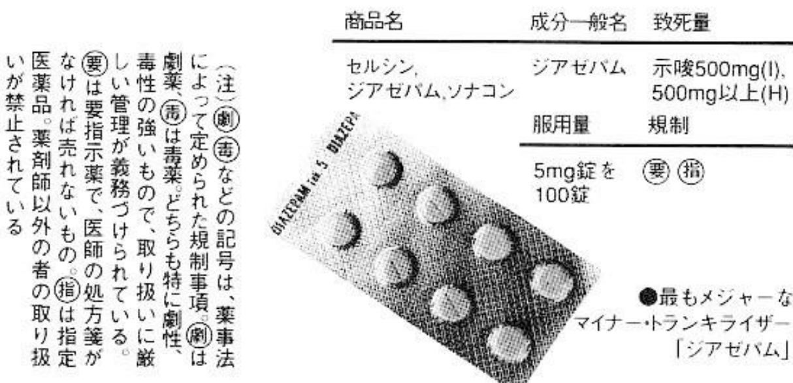
| Trade Name | Ingredients | Lethal Dose | Dose (Lethal) |
|---|---|---|---|
| Serushin, Diazepam, Sonakon | Diazepam | Hint 500mg (J) More than 500mg (H) |
More than 100 pills |
Recently, some psychiatrists have been prescribing drugs indiscriminately. When you open the door to mental medicine and tell the doctor that you “can’t sleep” or “feel restless”, there is a high possibility that an anti-anxiety drug such as “Serushin” or “Diazepam” will be prescribed immediately. Sometimes internal medicine will also prescribe this. After getting an anti-anxiety prescription from a psychiatrist, you say “It didn’t work.” and ask for a change of medication. Because doctors also need to try which one is more suitable for patients.
However, just because doctors prescribe Benzodiazepam series drugs first, it also shows that they are very safe. Even if you are lucky enough to get such a prescription, the effect is small and the distance between it and the lethal dose is too large. In order to get the lethal dose, you have to go to the hospital frequently. The prescribed amount is no more than 15 mg per day, so at least a month’s worth of medicine needs to be accumulated. Furthermore, doctors had worried that the drugs they prescribed could be accumulated and used for suicide. Precisely because it is easy to obtain, it is not suitable for suicide. There are two cases where two patients who swallowed an estimated 450 to 500 mg of Diazepam recovered within 48 hours.
Although the brand names such as “Serenamin” and “Kurashina” are different, their active ingredients are all Diazepams. Sometimes when you don’t understand what medicine the doctor prescribes, you can refer to books such as “Doctor’s Guide to Prescription Medicines”.
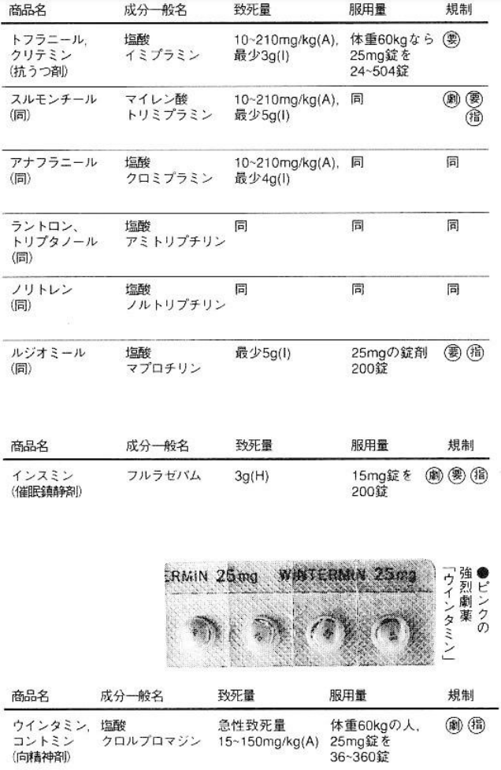
Antidepressant drugs such as Tofranil are suitable for those conditions where anti-anxiety drugs do not work, such as extreme depression and insomnia. It’s harder to get than anti-anxiety medications, but you can get a prescription if you tell your doctor you’re having trouble sleeping, the anti-anxiety medications aren’t working, etc. It can even mean you want to commit suicide. If you really fall into a depressed state, you will sometimes be cheerful and sometimes lively. Once the medication is discontinued, you will return to the original state.
[Translator’s note: The following table is really boring. I did not check the table carefully.]
| Product name | Ingredients | Lethal dose | Dosage (fatal) | Restrictions |
|---|---|---|---|---|
|
Tofranil Critemin |
Imipramine hydrochloride16 |
10～210mg/kg(A) At least 3g(I) |
25mg tablets (60kg) 24～504 tablets |
To |
| Surmontil (same) | Trimipramine maleate17 | 10～210mg/kg(A) At least 5g(I) | Drama, point, point | |
| Anafranil (same) | Clomipramine hydrochloride18 | |||
|
Lantrone Tryptanol (same) |
Amitriptyline hydrochloride19 | |||
| Noritoren (same) | Nortriptyline hydrochloride20 | |||
| Ludiomir (same) | Maprotiline hydrochloride21 | Minimum 5g(I) | 25mg tablet/200 tablets | To, refers to |
This is a list of antidepressants that all have similar properties. Taking large amounts can cause headaches, dizziness, and drowsiness. Sometimes it can cause confusion, hallucinations, and usually fall asleep quickly. But cramps in the hands and feet are a common poisoning effect. Although it is not thought to cause damage to internal organs, there are examples of effects on the liver. If CNS depressants and alcohol are used together, the effect will be enhanced.
16 Imipramine hydrochloride, an antidepressant.
17 Malinic acid トリミプラミン: an antidepressant, the side effects may cause confusion, hallucinations, disturbance of consciousness, reduced level of consciousness, loss of consciousness, shock, etc.
18 Clomipramine, an antidepressant.
19 Amitriptyline: Amitriptyline, one of the earliest tricyclic antidepressants, may increase the risk of suicide after taking it.
20 Nortriptyline, one of the earliest tricyclic antidepressants.
21 Maprotiline: Maprotiline, a tetracyclic antidepressant, is used to treat depression. Taking it may increase the risk of suicide.
| Trade Name | Ingredients | Lethal Dose | Dose (Lethal) |
|---|---|---|---|
| Insumin | Flurazepam | 3g(H) | 15mg tablets/200 tablets |
Although “Insumin” is not an anti-anxiety agent or an anti-depressant, it is commonly prescribed by doctors as a sleeping pill. Of course, taking a large amount will create a state of excitement, but due to the suppression of the central nervous system, you will soon fall asleep and die due to respiratory arrest. Likewise, the combined use of alcohol and other central nervous system depressant drugs can increase its effects.
Very powerful sedatives. Most people will feel intense drowsiness soon after taking just one tablet. A 21-year-old college student fell asleep after taking a tablet of “Wintermin” during a lecture. When he woke up, the next class had begun. In other words, he was unaware of the movements of the people around him and slept for more than five hours.
| Trade Name | Ingredients | Lethal Dose | Dose (Lethal) |
|---|---|---|---|
| Wintermin Kontomin |
Chlorpromazine hydrochloride | Acute lethal dose 15～150mg/kg(A) | 25mg tablets/36～360 tablets |
“Wintermin” and “Kontomin” are powerful sedatives. This drug is used for patients with severe symptoms, not neurosis but schizophrenia, so it is more difficult to obtain, but it is very lethal. This drug also depresses the central nervous system, and the cause of death is respiratory arrest. It is important to swallow a lethal amount of medication before sleepiness sets in.
However, there are also examples of people being rescued after swallowing 9.75 g. Symptoms of poisoning are: persistent high fever, disturbance of consciousness, difficulty breathing, circulatory collapse, and dehydration, followed by death due to acute renal failure.
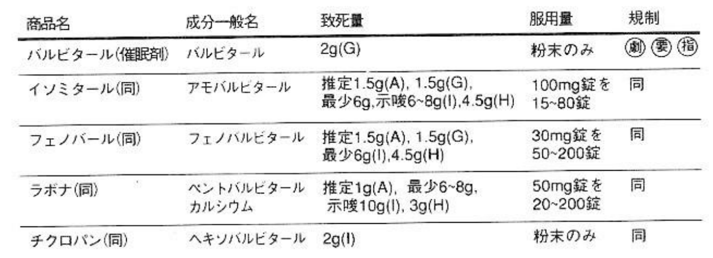
These will kill you if you ingest them. The range between the effective dose and the lethal dose is extremely small. It is said that if you take even a small amount, you will fall asleep and die. The European and American Euthanasia Association also strongly recommends this drug. However, it is 100% impossible to obtain. Because it was from a long time ago, it is almost not used in Japan at present. Even if it is prescribed, it is only used by people with extremely severe symptoms. However, it is possible to obtain it overseas, so I will introduce it here.
| Product name | Ingredients | Lethal dose | Dosage (fatal) | Restrictions |
|---|---|---|---|---|
| Barbiturates | Barbital | 2g(G) | Powder only | Drama, point, point |
| Immitar (same) | Amobarbital |
Inferred 1.5g(A) 1.5g(G) At least 6g, implying 6~8g(I) 4.5g(H) |
100mg tablet/15～80 tablets | |
| phenobal (same) | Phenobarbital | 30mg tablets/50～200 tablets | ||
| Labona (same) | Pentobarbital Calcium |
Inferred 1g(A) At least 6~8g, implying 10g(I) 3g(H) |
50mg tablet/50～200 pieces | |
| Ciclopane (same) | Hexobarbital | 2g(I) | Powder only |
These are sleeping pills belonging to the barbiturates family, extremely dangerous drugs that can cause heart and respiratory arrest and death if taken in large amounts. Symptoms of poisoning include headache, convulsions, mental confusion, etc. If you take a large amount, you will suddenly fall into coma. If you can get your hands on it, there is no better suicidal drug than this.
If you plan to buy overseas, you should remember the generic name because the product name is not universal. It is said that the regulations in the Netherlands are relatively loose.
However, there are also the following examples. A fifty-one-year-old doctor estimated that he swallowed 20g of phenobarbital powder and fell into a coma for four days. Later, he regained consciousness through artificial dialysis. After continuing to have delusions, fantasies, and excitement, after a period of Month, I was discharged from the hospital without any mental impairment.
For such drugs, which are almost unavailable and whose lethal doses are known, a list is provided at the end of this chapter for reference.
Some recreational drugs are the most lethal. Compared with other pharmaceuticals, their lethal dose can be very small. However, there are some reservations about recommending those as suicide drugs.
I have no idea how to get it. Even if someone told me that “there are clubs frequented by foreigners where you can get it”, it is usually impossible to know which club it is and who will sell it to me. Even if you get it, how many impurities will it contain? Besides, I have no idea what kind of recreational drugs I could get there.
At the same time, depending on whether the body is used to it, the toxic effects and lethal doses vary greatly. Originally, the lethal dose varies from person to person, and it is even more obvious when it comes to recreational drugs. Chronic poisoning is not suitable for the general lethal dose (some records say it is ten times). There is no other way to kill this kind of death except ingesting a large amount. This means that recreational drugs are not suitable for planned suicide. Because of this, what follows is solely for the eyes of those who can get it, or already have it, and know its ingredients.
| Ingredients | Lethal Dose |
|---|---|
| Amphetamine Metaphetamine |
Estimated 120mg (A) 120mg (intravenous injection) (L) |
There was once a question: “Should I stop stimulants, or should I stop my life?” The correct answer should be “I should stop my life by stimulants.”
Immediately after the Second World War, the drug that started a stimulant craze was commercially sold under the name “Hiropon” (ヒロポン).14 Today it is called “Shabu” (シャブ) or “Speed” (スピード) and is widely used by gangsters and even club youths, and it is this recreational drugs that still occupies the throne of the Japanese recreational drugs industry. Amphetamine (amphetamine) is mainly used in Europe and the United States, and the inventor of methamphetamine (Hiropon) is a Japanese, and it later became widely spread around the world and became Japan’s representative recreational drugs. It might as well be said that Hiropon means “love of work” in Greek (Φιλόπονος filóponos).
Stimulants stimulate the central nervous system, especially the brain, improving concentration and desire for activity. When a lethal dose of metafetamine was injected intravenously for the first time, the patient’s heart beat rapidly within seconds to tens of seconds, autonomic nervous system abnormalities occurred, sweating, deep and accelerated breathing, dilated pupils, and death due to circulatory organ failure. Sometimes it can cause brain hemorrhage. The effect is reduced if consumed, so it must be injected intravenously.
However, for people who have become accustomed to it, even taking 0.5 to 1g a day will not cause death. A 27-year-old woman fell into a coma after taking 2g of methamphetamine. Her pupils were dilated and her facial muscles twitched violently, so she was admitted to the hospital. She recovered and was discharged eleven days later. It can be considered that she can tolerate the drug very well. On the contrary, there are also cases of death after taking only 1.5mg. I don’t think anyone will try it, but avoid using it together with calming substances like “Serushin” or “Wintermin”, because the effect will be reduced.
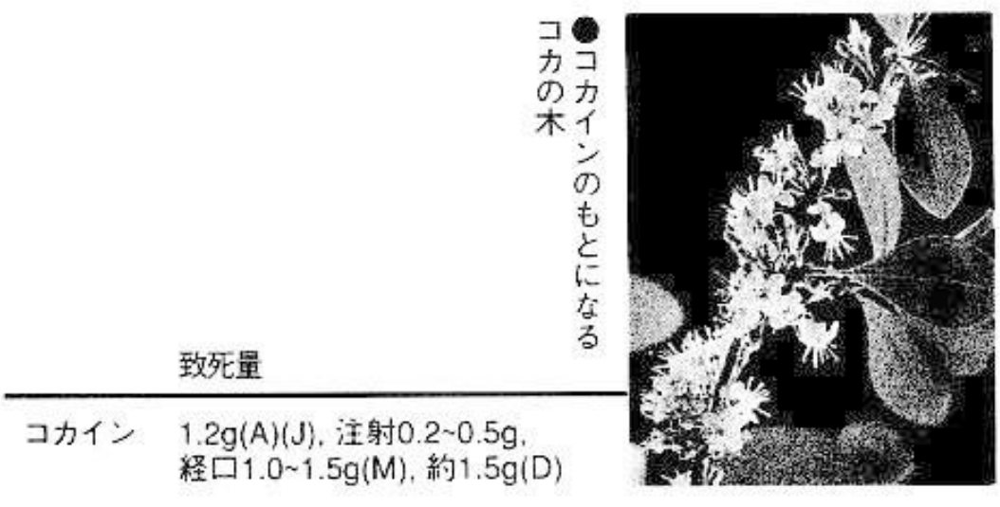
| Ingredients | Lethal Dose |
|---|---|
| Cocaine | 1.2g (A) (J), injection 0.2 ~ 0.5g, oral 1.0 ~ 1.5g (M), about 1.5g (D) |
According to a 1984 survey conducted by American Women’s Magazine, one-third of women under the age of 25 have used cocaine. This is an American narcotic drug in which interest is still on the rise. There have been no reports of deaths from cocaine. The lethal dose is much higher than that of other recreational drugs, making it less suitable for suicide.
It has a stimulating effect on the central nervous system and makes breathing deeper. Its pharmacological effects are considered to be roughly the same as stimulants. Usually the powder is inhaled through the nose, but the effect is much greater when given intravenously. It is said that, in general, for acute poisoning, death will occur within three hours after use. The state of consciousness in the near-death state is the same as that of drugs other than hallucinogens. Even if you have a slight headache, you are conscious and will think calmly, “This is not good” and “I can’t die like this.” Regular users will not die even if they take 1.5 to 2 g per day.
Cocaine is the main component of coca tree leaves. If you want to buy it overseas, you should buy it in Colombia, the country of origin.
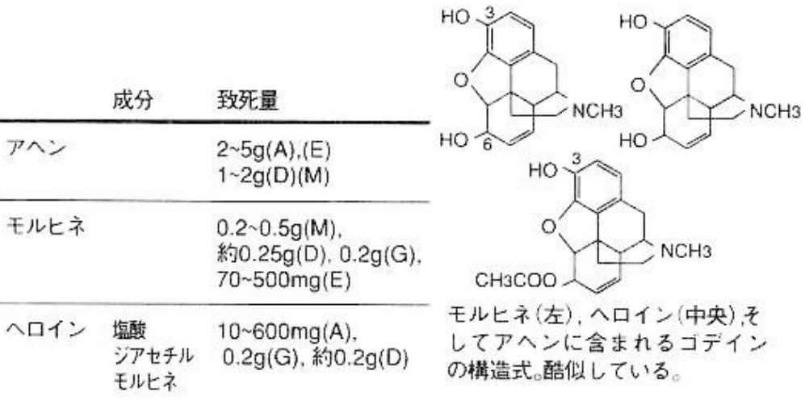
| Depressants | Ingredients | Lethal dose |
|---|---|---|
| Opium | Mainly morphine alkaloids | 2～5g(A)(E),1～2g(D)(M) |
| Morphine | 0.2～0.5g(M), about 0.25g(D), 0.2g(G) | |
| Heroin | 10～600mg(A),0.2g(G),about 0.2g(D) |
Generally speaking, these three types of drugs are considered to be completely different, but in fact they have the same ancestor.
Opium is made from the emulsion obtained from the unripe peel of opium poppy and dried into powder. It is composed of more than 20 kinds of plant salts such as codeine. Among them, morphine, which has the largest content and accounts for 4 to 20%, becomes the main component, and heroin is the most powerful one after chemical treatment. Of course, the order of potency is heroin, morphine, and opium. The strength of heroin is considered to be ten times that of morphine. The poisoning effect is roughly the same, and if it can be obtained, heroin is the most reliable in causing death.
Contrary to cocaine, these stimulants can inhibit the central nervous system and cause a trance of pleasure. They are called a series of depressants. If excessive inhalation or injection occurs, dizziness, nausea and vomiting will occur within tens of seconds, blood pressure and body temperature will gradually drop, breathing will be suppressed, and death will occur due to respiratory arrest within 6 to 12 hours after falling into coma. Kidney failure from heroin is fatal. Rumor has it that the punk rocker Sid Vicious died from heroin overdose.
Thailand, Myanmar, Laos, etc. are all major producing areas, and of course they are easily available.
Mixing it with other recreational drugs will create a synergistic effect and be more lethal, such as sleeping pills. It is generally believed that if you mix drugs that inhibit the central nervous system, it will be more likely to cause death. However, in the world of recreational drugs, the inhibitory series of cocaine and The stimulating series of heroin, commonly known as “fast balls”, are particularly dangerous when mixed and inhaled or injected. The use of this type of mixture will cause a cross between stimulating and inhibiting effects on the central nervous system. The heart will beat violently and then suddenly feel like it is about to stop. This phenomenon occurs repeatedly within a few seconds. The cause of death was cardiac arrest, a perfect cocktail for suicide. In addition, the stimulant series of stimulants and codeine, a mixture of stimulants and LSD, are said to be quite stimulating.
| Ingredients | Lethal Dose |
|---|---|
| LSD | About 1.4mg(D) |
This is a drug that acts very quickly with a very small amount of 20 to 250 micrograms (one millionth of a gram), and the lethal dose is incomparably less. Of all the drugs listed in this book, the lethal dose is the lowest.15
So will he die soon? it’s not true. Usually, the LSD on the market is diluted hundreds of times and soaked into paper, which requires taking a large amount of this paper.
Generally speaking, hallucinations are caused by stimulating drugs, and large amounts of them can cause heart palpitations. At the same time, the head becomes panicked, and sometimes the person jumps out of the window and dies due to this. Even so, if used in normal dosage, it will cause less harm to the human body than other recreational drugs.
What we introduce here are the “poisons” that are everywhere around you.
Of course, many people have a desire to die immediately, even if euthanasia is not possible. For these people, this book also introduces the methods of “suicide by vehicles” and “self-immolation” that are definitely not a “good-death” (etymology of “eu-thanasia”). The same goes for drugs. Even if you don’t die by sleeping, you can die in momentary agony. For you who plan to end your life, it is too troublesome to get those drugs that are not easy to obtain. If you can’t be bothered to decide if you would have to go to work or school tomorrow, then, I don’t know, why not take these no-preparation-needed substances listed in below.
The pharmacological effects are generally described here, but a poisoning expert believes that “such things have no pharmacological effects.” That is to say, most people will make a “yueee” sound immediately after swallowing it, have ulcers in their throat and stomach, and die of pain.
The method of swallowing is not explained one by one, except that the content is stated in some exceptions. It’s not like it’s a yogurt-mix you can eat in an aour.
But the lethal dose must be known. The harmful ingredients contained in these products vary. Although the dosage is not stated, if you want to know the ingredients of each product, you can call the place of sale to ask. Calculate from the lethal dose, then swallow. Err on the side of swallowing too much than too little.
Let’s first list some things that look like they may cause death, but are actually very un-toxic and not suitable for suicide, including desiccant silica gel, synthetic detergent, shampoo, hair conditioner, pomade, ink, and plastic wrap. , mosquito coils, cockroach-catching mats, deodorants, para-dichlorobenzene insect repellents, etc., household bleach, quicklime used as a desiccant. Coumarin series and rodenticides cannot be used due to poor toxicity. In addition, lipstick, toothpaste, body wash, and other products that may enter the body through the mouth are naturally safe. Toothpaste is harmless if you swallow the entire tube, even if you have the urge to commit suicide. No matter how much you swallow, you would merely feel stomache upsets.
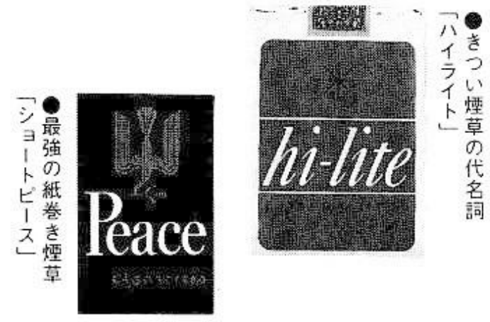
| Product Name | Harmful Ingredients | Lethal Dose | Dosage |
|---|---|---|---|
| Tobacco | Nicotine | 30～60mg(A)(B), 50～60mg(C) About 40mg(F)(G), 80～160mg(G) |
Each cigarette containing 2mg nicotine 15～80 branch |
The nicotine contained in short cigarettes HOPE, HI-LITE and other cigarettes is much more toxic than generally imagined. For a baby, sometimes one or two can be fatal. Professional books describe it as “a poison comparable to cyanide”.
Currently sold cigarettes, short HOPE contains 1.6 mg, HI-LITE contains 1.6mg, and short PEACE contains 2.7 mg of nicotine. It contains more nicotine than cigars, but it is ineffective due to the burning of nicotine when smoking. Of course, you can also eat the tobacco leaves, but soaking the tobacco leaves in water to dissolve the nicotine will make the absorption faster and more effective. After the tobacco leaves are soaked in water, 50-70% of the nicotine will dissolve within one hour. When you plan to ingest 60 mg of nicotine, you can soak 44 short PEACE sticks in water, since the 50% dissolved out of it would be enough. After one hour drink it. If you boil it in a pot, nearly 70-100% can be dissolved in a short time. However, heat of one hundred degrees will not destroy nicotine, and it will dissolve faster when placed in alcohol. The cigarette solution is very bitter, so adding some sugar would be a good idea.
While nicotine initially stimulates the central nervous system, such as motor nerves, it excites and then produces an inhibitory effect. Immediately after taking it, you would felt burning pain in throat, nausea, regurgitation, and headache, and soon became paralyzed and confused. Death due to respiratory arrest. After taking a lethal dose, paralysis occurs without excitement, and the person falls into a state of collapse, and will die in an instant.
The biggest problem is that nicotine has strong nauseating effects and is best taken with medication to prevent nausea. Of course, if this solution is injected into a vein, the effect is stronger and there is no need to worry about vomiting.
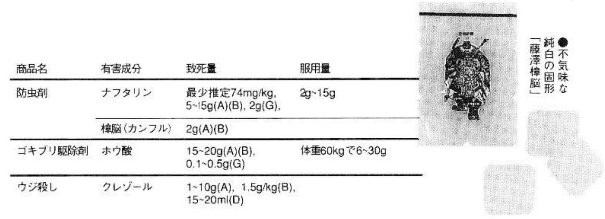
| Product name | Ingredients | Lethal dose | Dosage |
|---|---|---|---|
| Pesticide | Camphor | 2g(A)(B) | 2～15g |
| Naphthalene | 490mg/kg (rat, LD50) | ||
| Cockroach Killer | Boric acid | 15～20g(A)(B),0.1～0.5g(G) | 6～30g(60kg) |
| Maggoticide | Cresol | 1～10g(A),1.5g/kg(B),15～20ml(D) |
Of course, drugs that kill worms can also be harmful to humans. There are naphthalene ball, camphor powder, etc. The amount of camphor in “Fujisawa camphor” (Fujisawa Pharmaceutical Industry) is 252 grams per box. Symptoms of poisoning include headache, vomiting, confusion, fatigue, etc., and in severe cases, drowsiness. The liver and kidneys can also be injured.
Today’s insect repellents are mainly based on the relatively safe para-dichlorobenzene, while tea and camphor are gradually disappearing. Naphthalene is more toxic than camphor. Cockroach killers such as “Cockroach Killer Boric Acid Balls” and “Cockroach Killer” all contain the harmful ingredient boric acid. Boric acid inhibits the central nervous system. When taken in large amounts, symptoms such as headache, vomiting, weakness, drowsiness, and lethargy may occur, and death may occur due to circulatory insufficiency. It can also cause disorders to the kidneys and liver. If you are worried about the sequelae, you should take a large amount to prevent suicide attempts. Bleach and other chemicals also contain boric acid.
Insecticide sprays turn into liquid when sprayed into the air, making them easy to drink. Products such as “Ujitouru”, “Torazouru”, “Pirezooru” among pesticides are dangerous. These products contain only 1-10% of the harmful ingredient cresol, so if you don’t take a certain amount, it won’t be fatal. The ingredients contain 40-70% of orthodichlorobenzene. It is highly toxic, so the drug itself is quite toxic. Cresol can cause mucosal corrosion, vasoconstriction, etc. Orthodichlorobenzene can inhibit the central nervous system and stimulate mucous membranes. Both cause harm to the liver and kidneys. Taking it will cause upper digestive organ pain, sensory disturbance, lowered blood pressure, circulatory insufficiency and death.
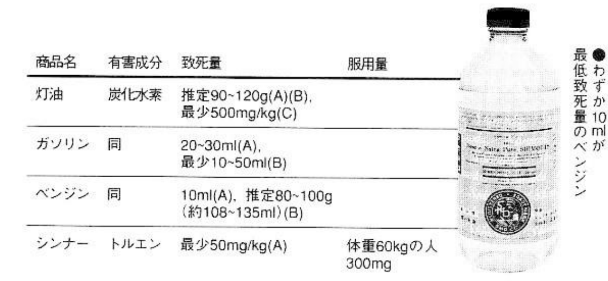
| Product name | Hazardous ingredients | Lethal dose |
|---|---|---|
| Kerosene | Multiple hydrocarbons | Estimated 90～120g(A)(B), at least 500mg/kg(C) |
| Gasoline | 20～30ml(A), at least 10～50ml(B) | |
| Benzene | Benzene |
10ml(A), estimated 80~100g (about 108~135ml)(B) |
| Thinner | Toluene, methanol, etc. | Minimum 50mg/kg(A) |
It is also possible to pour kerosene, gasoline, etc. on the body and light it on fire, but if you take it, you can die without much pain in a small amount. Both of these will irritate the mucous membranes and inhibit the central nervous system after taking them. Nausea, drowsiness, chest burning sensation, confusion, etc. may occur, and eventually death may occur due to respiratory arrest. Sometimes there are cases of sudden death due to ventricular fibrillation. However, there have been cases of recovery after drinking 250ml of gasoline.
Benzene is readily available in pharmacies. The minimum lethal dose is 10 ml, which is equivalent to one-fifth of a glass, but at least 100 ml should be taken. But this cannot be considered a large amount. After taking it, the central nervous system is suppressed and the whole body becomes anesthetized. The first symptoms are headache, dizziness, a short-term feeling of intoxication and drowsiness, and death due to respiratory failure or sudden ventricular fibrillation. The symptoms of poisoning are not serious and are most suitable for suicide.
Inhaling the volatile components of benzene is more toxic than taking it. However, since the lethal dose of inhalation has not yet been determined, we will not introduce it. Thinner is originally a “liquid for diluting paint” and is mostly a mixture of toluene and methyl alcohol. Most of them are obtained by others, and the content of ingredients is not fixed, so they are not suitable for planned suicide, but they are very toxic. After taking it, there will be a burning sensation in the mouth, esophagus, and stomach, which will inhibit the central nervous system, damage the hematopoietic function, and lead to death.
The use of thinner is easy to cause death by inhalation. 1-3ppm can immediately cause anesthesia. Fill the washbasin with banana water and cover it with a quilt, and you will lose consciousness and die from lack of oxygen. This is the only peaceful method of suicide other than medicine. High purity diluents should be used. Of course, taking a few puffs to speed things up is a good place to start before resorting to other methods of suicide.
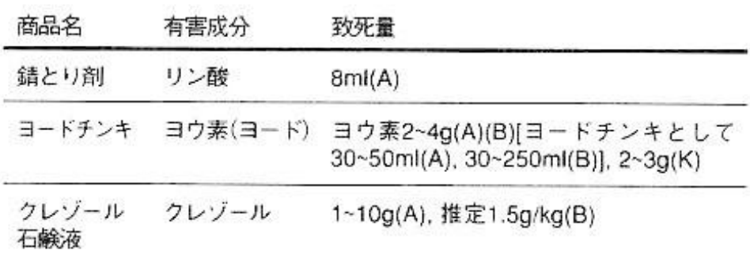
| Trade name | Hazardous ingredients | Lethal dose |
|---|---|---|
| Rust remover | Phosphoric acid | 8ml(A) |
| Iodine tincture | Iodine | Iodine 2 to 4g (A) (B), [for iodine, 30 to 50ml (A), 30 to 250ml (B)] |
| Cresol soap | Cresol | 1～10g (A), estimated 1.5g/kg (B) |
| Car antifreeze | Ethylene glycol | Acute toxicity 1.4ml/kg (human, oral) |
Rust removers such as “Clean Rust” and “Best Clean” contain approximately 40% concentration and 89% phosphoric acid. The lethal dose of herbicide is 22.5ml. If such a large amount is taken, it is not so much the toxicity of the phosphoric acid itself that causes tissue damage in the mouth, esophagus, stomach, etc., leading to acute death. Disinfectants are highly toxic and are readily available in pharmacies, making them an excellent suicide drug. Apart from medicines, there is probably nothing beyond it. A pharmacist also said: “This kind of thing is the easiest way to kill. Because you can drink it in large gulps.”
Iodine can corrode digestive organs, cause headaches, confusion and shock, leading to drowsiness and death.
It is generally believed that the lethal dose of cresol for an adult weighing 60 kg is 180mg. Taking it can excite the central nervous system and then show an anesthetic effect, leading to sensory impairment and spasm, ranging from confusion, respiratory paralysis to cardiac arrest. Loss of consciousness can occur within five minutes as quickly as possible and as late as thirty minutes. It is harmful to the kidneys and liver, and the 24 hours after ingestion are critical. A 14-year-old junior high school student who fell into a coma after drinking about 80 mg of cresol regained consciousness for a time, but his liver and kidneys were damaged. Six days later, he developed a pneumothorax in which air was trapped in the lung membrane, and he died due to cardiac arrest.
The most common ingredient in today’s car antifreeze is ethylene glycol. It can be directly absorbed by the human body and metabolized into a variety of substances in the human body, some of which are neurotoxic or can disrupt the material circulation in the human body, eventually causing people to die from systemic acidosis or multiple organ failure. Car antifreeze containing ethylene glycol and even pure ethylene glycol are easily available. Plus, pure ethylene glycol is sweet, which is much better than the weird taste of other things. But if you take ethylene glycol, you will die in pain.
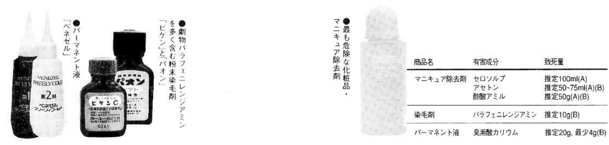
| Trade name | Hazardous ingredients | Lethal dose |
|---|---|---|
| Nail Polish | Cellosolve(cello solve) Acetone Amyl acetate |
Estimated 100ml(A) Estimated 50～75ml(A)(B) Estimated 50g(A) (B) |
| Hair dye | Paraphenylenediamine | Estimated 10g(A) |
| Hair perming agent | Potassium bromate | Estimated 20g, minimum 4g (B) |
Nail polish remover is the most dangerous product in cosmetics. Containing 20%-25% of acetone and 30%-50% of amyl acetate, it has anesthetic properties. Taking a large amount will irritate the mucous membrane, causing headaches, excitement, fatigue, and even coma. The content varies from product to product, so use this table as a reference to confirm the lethal dose. If a suicide attempt fails, the liver and kidneys may be damaged.
Nail lacquer also contains 30% acetone and 30% amyl acetate. Drinking 500-750mg can reach a fatal dose. There is severe nausea, but as long as it is absorbed, there will be headache, excitement and coma. Since it is not very toxic, the disadvantage is that it must be consumed in large quantities.
Paraphenylenediamine, an ingredient in hair dye, is used to dye hair black and is extremely toxic. “Higan Colorful Hair” (Houyuu), “Paon”, “Veraton”, (Ero Cosmetics), etc. all contain about 2% of paraphenylenediamine. The content of powder is higher. “Paon” powder (6g in a box) contains 6%; only drinking 14g is enough. Of course, when drinking, it is better to dissolve it in water first to improve its absorption rate.
Taking large amounts can cause acute liver disorders ranging from circulatory collapse to respiratory distress to death. The second liquid neutralizer of perm solution contains 2%-6% potassium bromate (potassium bromate). Potassium bromate stimulates the central nervous system and gastric tissue, causing nausea, vomiting, stomach burning, and coma. It sometimes causes hearing impairment and is considered highly toxic. However, due to the small amount, at least 80 g is required to cause death. To be sure, you must drink one kilogram of hair perming liquid. So I’m not going to recommend it.
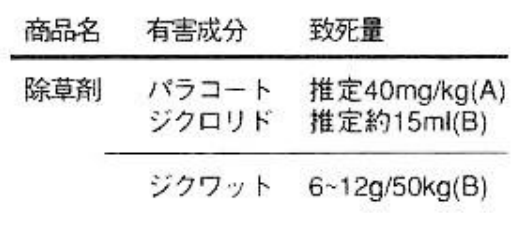
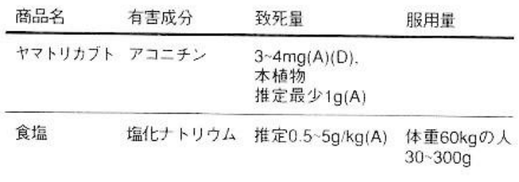
| Trade name | Hazardous ingredients | Lethal dose |
|---|---|---|
| Herbicides | Paraquat Adipoyl chloride Diquat |
Estimated 40mg/kg(A)< br>Estimated
15ml(B) 6～12g/50kg(B) |
| Aconitum | Aconitine | 3～4mg(A)(D), plant at least 1g(A) |
| Table salt | Sodium chloride (NaCl) | Estimated 0.5~5g/kg(A) (ie 30~300g/60kg) |
Although herbicides containing paraquat are not easily available to ordinary people, they are still widely used in rural areas, so they can still be obtained. This is a highly toxic drug and the antidote is still unclear.
Paraquat and Diquat have similar structures and properties. Both of them produce enzymes in the body and deteriorate the lipids of cell membranes. Severe vomiting may occur after drinking, and the mouth, esophagus, and digestive organs may rot, harming the liver, kidneys, circulatory organs, lungs, etc., and may lead to death. The characteristic is that although the internal organs are damaged, the sensation is clear, so the pain is greater (Case study 3).
The herbicide “Gramochon” contains paraquat 24%, “Pragrocks L” and “Majiate” contain 5% paraquat and 7% diquat, “Regorox” contains 30% of diquat. The lethal dose of “Regorox” is 20-40ml. In addition, there are many herbicides containing two ingredients.
In one case, a 40-year-old woman attempted suicide after drinking about 10ml of paraquat. A 28-year-old man who drank approximately 100 ml of the herbicide “Gramochon” died of lung disease 14 days later. Similarly, a 50-year-old woman who drank 250 mg of Glamox died of circulatory failure thirty hours later. A 67-year-old man who drank about 100 mg of “Regorox” died of respiratory arrest six hours later.
In short, if you want to die early, you must drink a lot.
A few years ago, the plant aconitum, which attracted attention because it was used in murder cases and became a big seller, contains aconitine, which is known to be highly toxic among plant poisons. The roots contain particularly large amounts, which can irritate the body. It damages the central nervous system, peripheral nerves, heart, etc., especially the marrow, causing paralysis of the respiratory muscles, which can stop the respiratory function in about two hours. However, what ordinary florists sell is the less toxic floral aconitum. There are many species in the family of Aconitum. There’s one, Aconitum japonicum subsp. japonicum (ヤマトリカブト) that mainly grows in the mountain forests of Honshu, and can be harvested there. In fact, some people mistakenly thought that it’s a wild herb, and ate it, and was poisoned.
I would presume nobody wants to commit suicide by eating salt. However, salt can also cause death. Because it is very interesting, I will introduce it here. If you plan to commit suicide with salt, you must drink 300 grams (a cup). Someone once died after drinking a liter (about 1.8 liters) of soy sauce because the soy sauce contained about 14% salt. Symptoms of salt poisoning include dizziness, confusion, shortness of breath, fever, weakness, etc. Ingestion of large amounts salt can cause disorders in the circulatory system, liver, kidneys, etc., which can lead to fatal injuries.
At this point, you may be wondering why the commonly heard names of potassium cyanide and tetrodotoxin do not appear. This is because the current regulations on management and disposal are extremely strict and difficult to obtain, so even listing them is meaningless, so they are not listed here.
The ovaries and liver of puffer fish are highly toxic, but due to differences in the fish body and the season, the toxicity will vary to a certain extent. Even if you get it, it may not be suitable for suicide. Regarding these, drugs that are difficult to obtain and their lethal doses are tabulated at the end of this chapter. If you can get it, I hope you can use it as you see fit.
In October 1985 in Gunma County, family members returning home from an outing found a boy in the second grade of middle school (14 years old at the time) wandering around in the room holding his stomach. That morning he went out as usual, drank about 40 to 50 ml of the pesticide paraquat in the forest away from school, and then returned home. In addition to bicycles and schoolbags used for school, there were also hastily written suicide notes, traces of vomiting, medicine bottles, etc. left behind in the mountains and forests. When he was taken to the hospital, his mouth and throat were ulcerated, and his mouth bled whenever he screamed. After that, although it was quite painful, he still said “I want to eat early”, “I want to read comics”, “Thank you, Mom and Dad”, etc. After a while, he started to say some fantasy words, “My bus has left”, “The UFO is coming” and so on. Sometimes he would make such a loud noise that it would take four adults to subdue him, but he would still die eight days later.
The suicide note contained the names of three students in the same class and the words “I will always hate you even in heaven.”. He was a member of the basketball team. About three months before his suicide, he was often scolded by others during practice, saying: “What are you doing!”, “Don’t be lazy!”, etc., and he was beaten and kicked in the chest. and abdomen. After quitting in October, he was beaten behind the gym after class. The reason for his suicide was the bullying from the above.
He is a computer fanatic, reading books about computers, and also likes cartoons. A large still of Rumiko Takahashi’s original work “Urusei Yatsura”16 hangs in his room.
Words such as “nausea”, “mucosal corrosion”, and “disorder” have been used in the case report. In fact, these are the symptoms.
The lethal dose of paraquat is 15 mg. It is unknown what proportion of paraquat the pesticide the teenager drank contained. In addition to the immediate vomiting, the actual amount absorbed into the body probably reached the lethal dose. Because he was an athlete and had quite good physical strength, he lasted eight days. However, generally speaking, suicide by taking poison means that there are many cases of death in the hospital bed after several days.
This case is a boy who committed suicide due to being bullied. As he belongs to a sport with strict training and team competition, it is natural for a few guys to bully others. The exact level of violence involved is unknown, but is common. In fact, it’s not just limited to club activities, it’s what happens in the world.
[Translator’s note: I did not check the following tables]
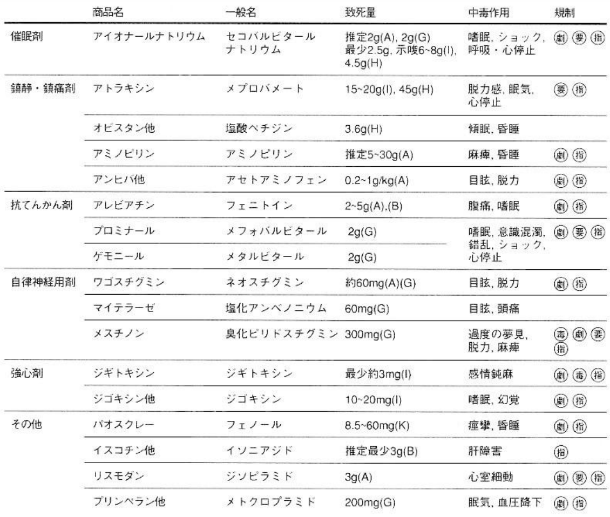
| Trade name | Common names of ingredients | Lethal dose | Poisoning reactions | Restrictions |
|---|---|---|---|---|
| Sleeping pills | Secobarbital sodium39 | Estimated 2g(A), 2g(G) At least 2.5g, implying 6~8g(I) 4.5g(H) |
Drowsiness, shock Breathing and heartbeat arrest |
Drama, key, pointer |
| Sedatives, analgesics | Meprobamate40 PethidineHydrochloride41 Aminophylline42 Acetaminophen43 |
15～20g(I),45g(H) 3.6g(H) Estimated 5～30g(A) 0.2～1g/kg(A) |
Fatigue, drowsiness, heartbeat stop drowsiness, drowsiness paralysis, drowsiness dizziness, weakness of limbs |
To, refers to drama, refers to drama, refers to |
| Antiepileptic agent | Mephobarbital44 Metharbital45 |
2g(G) | Drowsiness, confusion, confusion, shock, cardiac arrest | Drama, main, refer to |
| Autonomic nervous system medication | Neostigmine46 Ammonium47 |
About 60mg(A)(G) 60mg(G) |
Dirty eyes and limb weakness Tight eyes, headache |
Drama, refers to |
| Cardiotonic | Digitoxin48 Digoxin49 |
At least about 3mg(I) 10～20mg(I) |
Sluggishness Drowsiness, hallucinations |
Drama, Poison, Finger Drama, Finger |
| Others | Phenol isoniazid50 | 8.5～60mg(K) Estimated at least 3g(B) |
Spasm, lethargy Liver disorders |
Drama, finger finger |
39 Secobarbital sodium: Secobarbital sodium is a barbiturate derivative drug with anesthetic, anticonvulsant, anxiolytic, sedative and hypnotic properties. It is the most commonly used drug in physician-assisted suicide in the United States.
40 Meprobamate: Meprobamate, also known as diazepam, is a propylene glycol antipsychotic drug that has been basically replaced by benzodiazepines and has been discontinued in China.
41 Pethidine Hydrochloride: Pethidine hydrochloride, also known as pethidine, is an opioid analgesic with lower side effects and addiction than morphine.
42 Aminophylline: Aminophylline is a compound containing the bronchodilator theophylline and ethylenediamine in a ratio of 2:1. Aminophylline is less potent and shorter acting than theophylline. Its most common use is to treat airway obstruction in asthma or COPD. Aminophylline can cause theophylline toxicity. Aminophylline has been found to reduce the sedative effects of propofol and reduce the antiepileptic effects of topiramate.
43 Acetaminophen: acetaminophen phenol, paracetamol.
44 Mephobarbital: Mephobarbital, a barbiturate that is metabolized to phenobarbital.
45 Metharbital: A barbiturate anticonvulsant used to treat epilepsy. It has similar properties to phenobarbital. Abbott stopped selling it in 1990.
46 Neostigmine: Neostigmine, a drug used to treat myasthenia gravis, has side effects that can cause decreased heart rate, hypotension, and weakness.
47 Ammonium: Ammonia
48 Digitoxin: Digitoxin is a cardiac glycoside. It is a plant steroid similar in structure and effects to digoxin (but with longer lasting effects).
49 Digoxin: Digoxin, commonly known as Lanoxin. It is a cardiac glycoside extracted from the foxglove plant and is widely used to treat heart disease. Side effects may include loss of appetite, nausea, visual disturbances, confusion, and irregular heartbeat. Digoxin is nephrotoxic.
50 Phenol isoniazid: Isoniazid hydrochloride, a commonly used anti-tuberculosis drug, can also be used to treat depression and has strong liver toxicity.
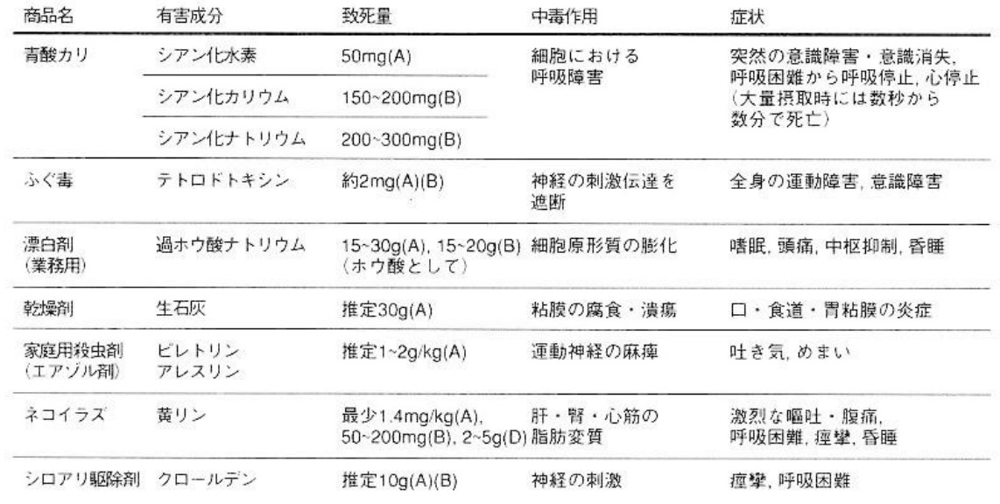
| Trade name | Hazardous ingredients | Lethal dose | Poisoning reaction | Symptoms |
|---|---|---|---|---|
| Potassium cyanide | Hydrogen cyanide51 Potassium cyanide52 Sodium cyanide53 |
500mg(A) 150 200mg(B) 200300mg(B) |
Cellular respiration disorder | Sudden disturbance of consciousness and loss of consciousness.
From difficulty breathing to respiratory arrest and heartbeat arrest. (Death within seconds after ingesting a large dose) |
| Tetrodotoxin 54 | About 2mg(A)(B) | Nerve paralysis | General movement disorder, disturbance of consciousness, difficulty breathing | |
| Bleaching powder (for industrial use) | Sodium perborate | 15～30g (A) 15～20g (B) (boric acid) |
Cell protoplasm swelling | Drowsiness, headache, lethargy |
| Desiccant | Quicklime | Estimated 30g | Mucous membrane corrosion, ulcers | Gastrointestinal ulcers and inflammation |
| Household insecticide (spray) | Pyrethrin55 | Estimated 1～2g/kg(A) Minimum 1.4mg/kg(A) |
Motor nerve paralysis | Dizziness, nausea |
| Rodenticide | Yellow phosphorus | 50～200mg(B) 2～5g(D) |
Fatty degeneration of liver, kidney and myocardium | Severe vomiting, abdominal pain, dyspnea, spasm, lethargy |
| Termite killer | Chlordane56 | Estimated 10g(A)(B) | Nerve stimulation | Cramps, dyspnea |
51 Hydrogen cyanide: Hydrogen cyanide (HCN), a highly toxic substance.
52 Potassium cyanide: Potassium cyanide (KCN), a highly toxic substance.
53 Sodium cyanide: Sodium cyanide (NaCN), a highly toxic substance.
54 Tetrodotoxin: Tetrodotoxin is an extremely powerful neurotoxin. Poisoners often die from cardiac paralysis and respiratory paralysis. There is currently no specific antidote. The human LD50 is 334 μg/kg.
55 Pyrethrin: Pyrethrin, a low-toxicity pesticide that is contained in most insecticides and may cause asthma and other symptoms when ingested in large amounts.
56 Chlordane: Chlordane, a termite killer, has potential carcinogenic effects and was banned in the United States in 1988.
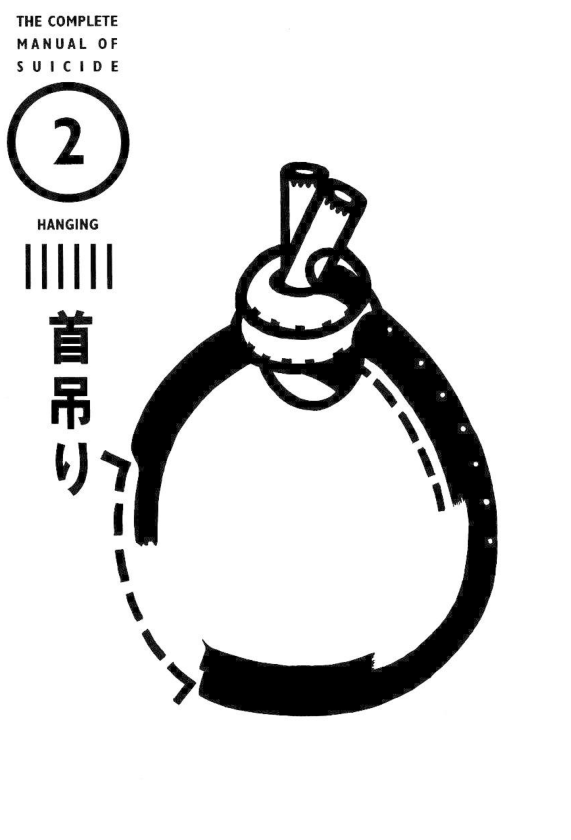
| Pain | ▼▽▽▽▽ |
| Trouble | ▼▼▽▽▽ |
| Ugliness | ▼▼▼▽▽ |
| Ripple | ▼▽▽▽▽ |
| Impact | ▼▼▽▽▽ |
| Lethality | ▼▼▼▼▼ |
The triple benefits of certainty, simplicity, and painlessness is overwhelmingly loved by men, women, and children alike, and can be called the “Monarch of Suicide”.
It may seem like I’m making an unfounded conclusion, but there is no safer, more reliable, and easier way to commit suicide than hanging. There is actually no need to consider any other method. You may not believe it, but after careful investigation, I still haven’t found a better method than hanging. The following will also describe in detail why hanging is superior to other methods. It can even be said that hanging is a work of art imagined by humans. Because of this, half of the suicides in Japan every year choose this method, and it has been widely used both at home and abroad in ancient and modern times.
The biggest advantage of hanging is that the failure rate is extremely low. As long as the rope is intact, the branches around the rope are not broken, and the hanging is not discovered within ten minutes after hanging, the success rate is basicaly 100%. There was a person who took poison and then seppuku, but did not die, then he waited for the train on the track but it didn’t come. Out of options, he went to jump off a cliff, and did not die either. Finally, he successfully hanged himself from a tree on the cliff.
“If you want to die, hang yourself.” People who are planning to commit suicide should burn this into their minds.
All you need is a piece of rope. Wires, belts, ropes, anything that can be wrapped around your neck. However, try to choose something that is soft and can lie flat against your neck. Such as the plastic tape used for packaging in department stores, etc., which is enough even for a person weighing more than 100 kilograms. If something with cutting force, such as a steel wire, is used, the head and neck may be severed. Someone took a steel cable for pulling vehicles, tied one end to the bridge railing, the other end around his neck, and then jumped into the river. As a result, his head was sliced off and flowed down the river, becoming an “unexplained mysterious death” and occupied the local headlines for a while. There was also a very courageous company employee who tied a vehicle-pulling cable to a tree, put the other end around his neck, started the vehicle, and decapitated himself.
You can tie the rope while you are sitting or even lying down, as long as it is not a thin branch that is easy to break. There was a boy in 7th grade who hanged himself by nailing a nail to the bookshelf. However, it is often difficult to find a suitable place to put a rope, especially in hospitals and detention centers. However, hanging does not require that the rope be tied to a place higher than your body length. Even if your feet or buttocks touch the floor, you can still die. There are some people who hang themselves on hospital beds, and this is also theoretically explainable.
Before explaining this theory, let’s talk about the differences between the cause of death by strangulation and hanging. The former is mostly caused by suffocation by blocking the trachea, while the latter is mostly caused by the lack of oxygen in the brain by blocking blood flow to the brain.
There are two types of arteries that supply blood to the brain: the carotid artery and the vertebral artery, which is protected by bone next to the spine. Even if the carotid artery is blocked by strangulation, the vertebral artery protected by the bone cannot be blocked. However, in the way of hanging, the neck is hung diagonally upward to form an angle, so both arteries are blocked together, and the blood supply to the brain stops instantly (see Figure 1).17 The difference between the two can be seen from the corpse. Although the blood supply from the vertebral arteries to the brain of the strangled corpse continued, on the contrary, the carotid arteries that carried blood from the brain were blocked, so they turned purple and had blood stuck in the head; in the hanging method, there was no blood stuck in the head. Now that we have clarified some basic issues, let’s return to the issue of the height of hanging.
When hanging, for a person whose blood pressure is 170 mmHg, it takes 3.5 kg of force to block the carotid artery and 16.6 kg of force to block the vertebral artery. If your feet are on the ground and your knees are bent, 70 to 90% of your body weight (20% of your body weight when your knees are on the ground) is pressed against your neck. For example, when a person weighing 60 kg hangs with his knees on the ground, the force pressing on his neck is 12 kg, and the carotid artery will naturally be blocked. At this time, the vertebral artery has not yet reached the point of complete blockage, so a small amount of blood flows to the brain, but this is only a matter of time, and it is several times better than simple strangulation. Loss of consciousness may come later, but nothing ends in a near miss. In other words, even if the force pressing on the neck is only 20% of the body weight, as long as the neck is at an angle, death can be easily achieved without completely lifting the body.
In fact, there are examples of people with their buttocks and back on the floor (refer to Figure 3). Some people say that as long as the height is above 30 cm, you can die. Some people even say that in Europe and the United States, more hanging suicides have their feet touching the ground than not. If you plan to die in your room, there is no need to give up because you feel the height is not enough. A door handle is enough, and using the slope of the stairs is also a good idea.
Another thing that should be noted is that although it is necessary to find a place where it is not easy to be discovered, it is not like suicide by gas or drugs, which requires a place where it cannot be discovered for several hours or days. It would be impossible to save you if you are not discovered within ten minutes. More than 30 minutes and it would be a complete success.
If you don’t want your relatives and friends to see your body, it’s best to choose a place a little further away from your home and your daily commute to work and school. When you are identified and your parents know about it, you are already in the hospital or the police station.
How would you feel if you put a rope around your neck, kicked off the footstool and hung in mid-air?
According to research by forensic scientists, it is common knowledge in the medical community that once someone hangs himself, his consciousness becomes hazy and his hands and feet cannot move even if he wants to. Moreover, there is no pain at all during the process.
In Tokyo, an actor performed hanging in front of the audience. The moment he said, “Squat down like this…” he lost consciousness and died in front of the audience. A forensic scientist wanted to experience the pain of hanging. He placed a footstool in a position where he could stand on it at any time and asked his colleagues to be present. As soon as his feet left the footstool, he suddenly lost consciousness. Fortunately, he was saved by his colleagues. There are many examples of similar experiences.
A suicide attempter who was rescued from hanging with a wire said: “My head was buzzing and I didn’t know anything. I had no consciousness. Though I couldn’t breathe and reasonably would have felt bad or painful, I felt no such thing.”
It’s not just not painful, it’s can also be quite comfortable. For example, the thrill of being thrown unconscious by a choke-hold in judo, or the case of a boy who hanged himself while playing a choking game with a towel in the bathroom.
At the same time, if you hang too hard all at once, the neck joints will dislocate, immediately leading to cardiac arrest and respiratory arrest.
When it comes to hanging, many people think of being strangled by the throat and suffocating to death in pain. In fact, before you feel out of breath, your brain is deprived of oxygen and you lose consciousness, so there is no pain.
If you doubt this statement, you can put a rope around your neck and hang yourself to see if you really would lose consciousness in an instant. Maybe as soon as you put on the rope and put some weight on it, you will stop the experiment immediately because you feel more nervous and scared than you thought!
Some scholars have further divided it into several stages and conducted detailed research.
The first stage starts with a buzzing head and tinnitus. Then a flash of light in front of eyes, head felt hot, ears ringing, and flashing lights in eyes. At the same time, consciousness began to blur.
In the second stage after losing consciousness, convulsions occur throughout the body. It is said that the hands make paddling movements and the feet make walking movements, and then the muscles of both hands and feet begin to cramp, and then the whole body straightens up and cramps. But for this spasm, I now think it is a small tremor in the whole body. This stage lasts from one minute to one and a half minutes. What is puzzling is that men will have an erection and ejaculate at this time.
In the third stage, it is already in a state of suspended animation, with urine, feces and semen leaking, eyeballs protruding, and breathing stopped. This takes about a minute, so it only takes three to three and a half minutes to get to this point. The heart is still beating at this stage and a life may be saved if found. The heart will beat for about ten minutes. Once the heart stops beating, there is no hope of rescue.
There was an American acrobat who imitated hanging in front of the audience. His usual arrangement was to give a prearranged secret signal to his assistant as soon as his consciousness began to blur. One day, he unexpectedly lost consciousness and failed to give the signal in time. He hung there for thirteen minutes and did not revive when he was sent to the hospital.
This means that in just ten minutes, if no one detects it, your suicide will be successful and painless. There is probably no more suitable way to commit suicide than this!
The disadvantage of hanging that people often mention is that the corpse looks bad. Incontinence and ejaculation do occur. Some people say that because the throat is strangled upward, the tongue will stick out, the face will turn purple due to congestion, and the eyeballs will protrude. However, there are not many horrific examples of this. The eyeballs will not protrude until several days after death, and the tongue will not stick out even if it touches the teeth. That is to say, the condition of the corpse is usually not like this.
Judging from the photos of hanged corpses, most of them are just hanging there, no different from when they were alive. As mentioned before, because the blood supply to the head is quickly cut off, there is generally no congestion on the face. Although it doesn’t look very good, compared with the corpses that jumped from buildings or crashed into cars, it can be said to look decent enough.
To prevent incontinence, go to the bathroom beforehand. If you don’t want to ejaculate, masturbate first. To follow Emperor Hirohito who died on 7 January 1989, a 87-year-old man committed suicide on the day of his death. He hung himself in an orange grove with gauze in his mouth and a mask. Such elaborate preparations… let’s leave it at that.
As mentioned before, the advantage of hanging is that the vertebral artery is blocked due to the posture of pulling the neck from above. Of course, if you strangle your neck with your hands, this artery cannot be blocked, so the blood supply to the brain cannot cause you to lose consciousness all of a sudden. In the case of hanging, the person loses consciousness in the first stage as mentioned above. In the case of strangulation, the person experiences the first, second and third stages while being conscious, and then finally loses consciousness. The result is that the trachea is blocked and suffocates, and cramps are experienced, which is accompanied by considerable pain. Even so, there are many people who commit suicide by strangulating their necks and suffocating themselves. I couldn’t help but express my sympathy to him, why didn’t they spend some time to create a height of 30 centimeters!?
A 42-year-old university associate professor tightened his tie bit by bit, and finally died of bleeding from his mouth.
A 43-year-old woman who participated in the Tokyo Olympics swimming competition and lived a mundane housewife life since then, made full use of her extraordinary lung capacity and suffocated to death by wrapping multiple layers of tape on her mouth, nose, and neck.
A 49-year-old housewife who was imprisoned for killing her son died of suffocation after stuffing enough toilet paper into her stomach and nose in the detention center.
There is also a 46-year-old construction worker who committed suicide due to bronchial occlusion after swallowing about 100 g (about a roll) of toilet paper in the police custody room.
Of course, you can die using this method of suffocation, but it is accompanied by considerable pain, and I am not willing to recommend it.
Regarding hanging, it should also be mentioned that due to the formation of a hypoxic state inside the brain and the destruction of cells, serious neurological sequelae will be left after a failed attempt. The characteristics of brain cells are different from other cells. They cannot regenerate if they are destroyed.18 Therefore, it is necessary to make careful arrangements not to be discovered.
In October 1985, singer Frank Nagai (フランク 永井) (53 years old at the time) returned home from a performance at around 10 in the evening. He drank a little beer with his wife and went to bed around 10:30. But in the middle of the night, after walking out of the bedroom, he did not come back for a long time. When his wife came out to search, she found that he was hanging with four or five ties on the handrail of the spiral staircase between the first and second floors. It was around 3 in the morning. When the ambulance arrived, Nagai had no breathing or pulse and fell unconscious. When he was sent to the hospital, his pupils were dilated and he was in a state of “imminent brain death”. But after four or five days, he miraculously regained consciousness. After a month, he could speak a few words, and when he saw the title of the song “君恋し”, he could still recognize the character “君”. Later, he could write “Nagai” (永井) from his name. Later, he was hospitalized and discharged several times. He is now able to do some walking and sing familiar songs on karaoke, which shows further recovery. Despite this, he could not recognize his wife and friends who came to visit him, and he was in a state of Alzheimer’s disease. In 1989, he became a kinchisansha, a legally incompetent person who was not allowed to handle his own affairs19.
When he told his friend Tetsurou Tanba about this experience, he said this: “I had difficulty breathing as soon as I hanged myself, and my vision instantly turned red and then completely black. I saw my face tilted in the air, and gradually I heard a strange sound. The sound gradually grew louder and disappeared into the dark tunnel. I suddenly rose up, floating through the walls and doors, and could see the situation in the lower world. Suddenly I noticed that I was standing on the ground and heard from the front garden a beautiful music, I also heard the voices of my deceased friends and relatives, and I was driven forward by the feeling of nostalgia and reunion. There, the Sanzu River stood20, but an unknown force pulled me back.”
Nagai attempted suicide because her former lover claimed that the child she gave birth to was theirs, and he was distressed by the demanded child support.
This is probably the only case of attempted hanging that is publicly sensational. Even if the success rate of hanging is close to 100%, it will not be successful if it is discovered quickly. Judging from the absence of pulse in the above example, the patient may have been hanging for more than ten minutes. However, some experts believe that “[Judging from the current state of recovery,] the time when he was found was just three to four minutes after hanging, and his feet and buttocks should have been on the ground. However, even if his life is saved, the damaged brain nerves will not regenerate.” The kind of sequelae it will leave is shown by Nagai’s situation. The nerve cells in the brain begin to die the moment blood no longer circulates. It is very scary. Failed hanging is very scary!
According to his own account, he lost consciousness in an instant (at the usual level), and his vision turns red and then black. The wonderful experiences that follow can be called “near-death experiences”. It is said that many people who are on the verge of death have experienced them.
On January 1, 1973, Tsuneo Mori (森 恒夫) (28 years old at the time), who was in the Tokyo Detention Center, hanged himself in a single cell. He himself was a member of an armed revolutionary group formed in January 1972. His “only-gunnism”22 advocated that revolution can only succeed by relying on guns. He conducted armed training at the underground headquarters in the mountains of Gunma Prefecture and was arrested in February 1972. He confessed that he had killed twelve “Red Army soldiers” on the grounds that “the action was not revolutionary”. In September, he was transferred to the Tokyo Detention Center, awaiting trial. This incident of lynching and torture of twelve people was more “madness in a closed group” than the Asama-sansou hostage crisis23, and it shocked Japanese society for a while. On January 1, 1973, Tsuneo Mori ate both breakfast and lunch as usual. At 01:38 in the afternoon, the guard on patrol saw him sitting on a tatami mat reading a book. But fourteen minutes later, at 01:52, when the guard visited the single cell again, he had already tied a knot with a 60-centimeter-long towel on the 91-centimeter-high iron railing, put his head in it, and hanged himself. The doctor came and gave him cardiac resuscitation drug injections and artificial respiration, but to no avail, and he died about an hour later. It is said that he tied his legs with the clothes around him and stretched them there, forming a “く” shape and hanging there. Some people say that when he died, his shape seemed to be “about to sit down”. The analysis of this suicide is that when he committed suicide, he “kicked his tied feet into the air hard, so gravity added to the towel and strangled his neck”. Although he was unconscious when he was found, his veins were the same as in a living body, and no bleeding or incontinence was found.
He left two suicide notes, the content of which is said to be an admission of the error of only-gunnism. I also heard that he loved reading the Bible a few months before his suicide and became very interested in Christianity.
Did his buttock touch the ground?
He was a small man, with 163 cm and 54 kg. The towel he uses is 60 cm, which is also very short. He tied a knot around the railing and put it around his neck so his neck rested tightly on the railing. Coincidentally, his waist is very long, and the towel is tightened around his neck, so his buttocks may not even touch the ground. That is to say, it is impossible for a man weighing 54 kg to wake up after 14 minutes by hanging with his feet on the ground and his back against the wall. This is strong evidence that hanging is easy and can stop breathing in a short time. Having said that, after unremitting efforts and hardships for the revolution, he finally gave up his long-held belief and surrendered to God. However, he committed suicide without being rescued. How pitiful it must be.
However, even though it happened twenty years ago, the Red Army cadres believing that they could start a communist revolution is a far crazier thing than their killing of twelve of their own members.
May 17, 1982, 4:45 pm. In a mental hospital, a woman who was hospitalized fell into a state of excitement and shouted, “Kill me!” and was sent to the protection room. Forty minutes later, at 5:25, she climbed onto the window pane covered with several quilts and hung herself with a towel. When she was discovered, her breathing and heart had stopped. She was rescued and given artificial respiration and cardiotonic drugs. Five minutes later, spontaneous respiration and a weak pulse appeared. Despite this, she was unconscious for two whole days, and finally responded to the stimulation on the third day. She regained consciousness on the fourth day, could eat and drink fluids after a week, started “self-recovery training” on the second week, and was able to live in a group life with other patients after another two weeks. However, her memory has declined, lost her former enthusiasm. She always hid behind others, and became more dependent on her caregiver.
This woman had been admitted to this hospital for 13 years after she turned 26, and had been admitted to other psychiatric hospitals three times before that. After being discharged from the hospital in 1979, she went to work in a nearby general hospital. She gave up his job due to friction with a male employee in the unit and lived with another man. Soon she started not eating and shouted, “Kill me!” Two years later, she was hospitalized again. The hanging occurred six months later. This was her third suicide attempt.
She had worked in a towel factory for six years after graduating from high school, got married at the age of 23, divorced the next year, gave birth to a boy, but the child died soon after. Also, four of her five sisters, including her, had had attempted suicide.
As the nurses said: “It is one of the few rare cases where the patient was brought back to life due to rapid treatment by medical staff upon discovery.”. It is also a rare case where death was not achieved even though the heart had stopped for a while. From the unrecorded forty minutes, subtract the time for stacking quilts, we see that it should be about fifteen minutes after hanging when she was found, at which point her heart probably had just stopped. Although it had forty minutes and sufficient height, it failed to cause death. This is in sharp contrast to the case of Tsuneo Mori. It is very difficult to commit suicide in a hospital or prison cell because of surveillance. It is especially difficult to commit suicide in a hospital because of its complete first-aid facilities.
Judging from these attempted cases, perhaps you are thinking that hanging is not that simple. But, after all, these are extremely rare examples. Judging from the fact that more than 10,000 people die from hanging every year, and the success rate is almost 100%, hanging is still the top method of suicide.
But what was the rest of her life about? It was far beyond misfortune or bad luck. From the outside, this looks like a “living hell”. Judging from the sequelae left behind, it might have been better to not have saved her.
If you are bored with your work and relationships and want to commit suicide quietly without others knowing, I advise you to step into Aokigahara, the Sea of Trees without hesitation. There is no place like Aokigahara where it is easy to enter, but difficult to be found. Your whereabouts will be unknown and you will disappear from people’s memory over time. However, to achieve this goal, we must study the method of entering the sea of trees. This map can be used as a reference.24
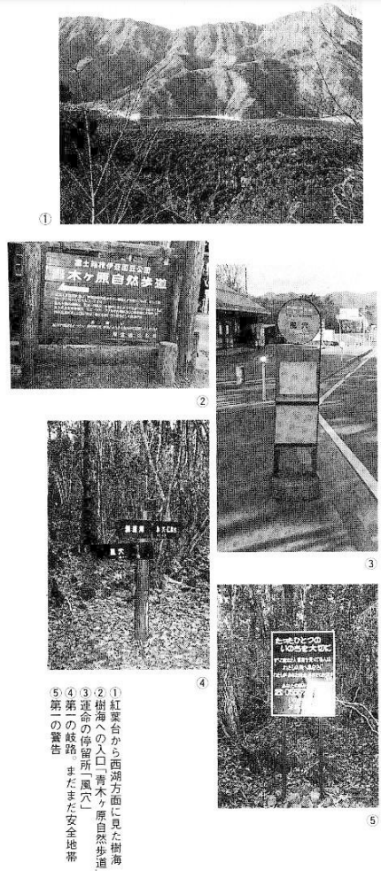
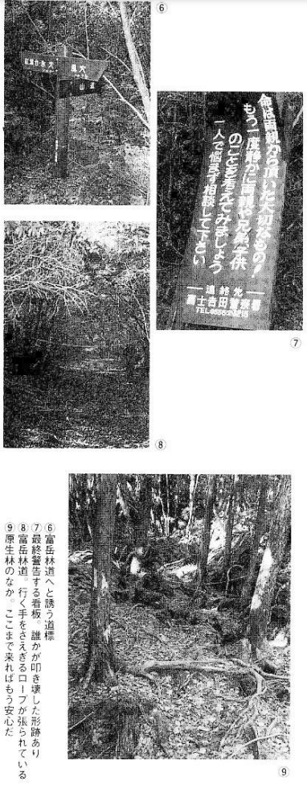
The number of suicides in the Aokigahara is “about 30 per year, with no increase or decrease” (Fujiyoshida Police Station). Most of the other “suicide spots” have become a thing of the past, but the Sea of Trees is superior to other places as a suicide spot, as has been shown above. Aokigahara was originally a local suicide spot, but it suddenly became nationally famous and dozens of people committed suicide here every year. The main reason was the TV series based on the Tower of Waves (波の塔, Nami no Tou, 1960), with the Aokigahara as the setting.26
Generally speaking, once you enter the sea of trees, you will immediately lose your sense of direction and be unable to get out, so you can walk in no matter where you are, but here we will introduce a route where your body will never be found.
The most common way is to enter near the “Wind Cave”. Get off the Fuji Express Bus at Wind Cave Station (see the traffic sign for directions) and you will see the entrance to Wind Cave on the south side of National Route 139. Walk forward to the ticket office of Wind Cave. But don’t walk into the Wind Cave. There are two roads in front of the ticket office. Take the Aokigahara Nature Trail on the left.
Go forward about 300 meters, and there is a fork in the road. You have to go to the island on the left with “Ice Cave and Autumn Leaves Terrace” (冰穴·红叶台) written on it. There is a sign on the front that says “You only live once, cherish it”, but don’t take it seriously.
About 300 meters further on, there is a road sign with the words “Red Leaves Terrace Ice Cave” (红叶台·冰穴) written on the left and “Mountain Road” (山道) written on the right. There is another lead sheet lying on the side of the mountain road. It says, “Life is a precious gift given by parents! Think about parents, brothers and children again!” Ignore it. You will inevitably feel a little shaken when you get here. You can decide whether to go back because the compass still works. If you go further, you will enter the Fugaku Forest Road.
This mountain road is a very ordinary mountain road, nothing special for people with mountaineering experience. However, there are dense forests all around, and since the scenery never changes, you gradually start to wonder how far you have walked and where you have walked into.
The mountain road generally extends southward. After walking for about fifteen minutes, the road no longer looks like a road, and the surrounding trees look a bit like primeval forest. At this time, we walk forward for another fifteen minutes.
From now on, you can walk off the road into the dense forest from any direction, but it is best to go to the right.
In addition, we will introduce two places where you will never be found.
One is to get off at the Fuji Express Bus “Red Leaf Terrace Entrance” (红叶台入口). There is a fire brigade and the hotel “Rare Wood Museum” (珍木馆) nearby. Walking along the asphalt road for about one kilometer, you will gradually see a dense forest, and walking about one kilometer further will be the virgin forest. Follow this road into the fork on the left and go as deep as possible. Then just keep going forward. In this area, not to mention the locals, even suicide-watch volunteers are unlikely to come. Locals say this crossroad is “the most difficult area to find bodies in”.
The other option is to get off the Fuji Express Bus “Akaike” (赤池) and follow the asphalt road to the Shojin Lake Hiking Trail (精进湖登山道). After walking for one to two kilometers, turn right and enter the fork. Here, neither locals nor tourists will find corpses.
Both of these methods require a long walk, but the reliability of not finding the corpse is relatively high when entering from the Wind Cave. Since ordinary tourists don’t come here, don’t arouse people’s suspicion when you walk in.
In the primeval forest, there are tangled tree roots everywhere, and moss and fallen leaves cover the holes, so it is impossible to move forward in a straight line. I thought I remembered the way I came from, but after walking more than a hundred meters, I still couldn’t figure out the direction at all. If you have a compass, throw it away. You can’t go back to the same place anyway.
The most suitable method in a sea of trees is to hang yourself, as its lethality is high. Just bring a rope. However, the trees here are all very tall, and it is quite difficult to find a suitable tree. In order to find such a tree, you will have to wander further away from the mountain road and be harder to be found. This way, you would disappear from people’s memory even more forever than forever.
Every October, more than 600 people, including the local fire brigade and police, conduct a large-scale search for corpses on Route Z in Figure 1. In other words, if you commit suicide in the middle of the national highway and the road on the south side of West Lake, your body will still be found. Even if you are on either side of the national highway and walk no more than 500 meters along the nature trail, it is the same. The major searches in recent years have found three corpses in 1989 (one of which was female), none in 1990, five in 1991 (two of which were female), and 1992. No search was conducted due to a homicide near Wind Cave. In short, never enter this area. By the way, when a family member requests a search, the search fee per person per day is 10,000 yen. In other words, if 50 people were mobilized to search for 2 days, it would cost one million yen.
Every March, from near the entrance of Wind Cave to Kentoku Dojo (乾徳道場)27, the Self-Defense Forces conduct a column walking training in the dense forest. It is said that most of the bodies that were not found during the great search were discovered at this time. Therefore, it is also better not to choose the area from the south of the cave to the dojo. ### Don’t be suspected by the locals
People who have lived in the area for a long time can identify suiciders at a glance. It is believed that simply carrying a small bag, or not taking photos, is a telling sign, but more importantly they rely on intuition. When you walk into the sea of trees, the locals will greet you and say, “Do you know where this place is?” and try to persuade you to live. Even if you say, “Let me die,” they won’t listen. After more than 40 minutes of gossiping, some would-be suiciders finally gave in and turned back to the world of living. So, don’t take on the aura of suicide in the first place. However, pretending to be happy at the moment of death is a bit pointless. Don’t hesitate before entering the sea of trees. Walk in gracefully and the locals will not follow you in suspicion. Because even if the locals walk a hundred meters into the forest, it is difficult for them to come back.
I heard that there is a mysterious monk living in Kentoku Dojo. The house is ordinary, but he is often seen driving his car to go shopping in places off mountain roads, but even the locals don’t know how he makes a living. Since his existence cannot be underestimated, avoid walking near this place.
It takes two hours by Fuji Bus from Mishima Station on the JR Line to Fujiyoshida. Then transfer to the Fuji Bus to get to the Momijidai entrance and Feng Cave which takes 30 to 40 minutes. Buses run every hour. Please note that the bus frequency will be reduced in winter.
Of course, accommodation is not necessary, but I will introduce it just for backup. There are many B&Bs (bed-and-breakfast) in the south of West Lake, which are open all year round. It is the most convenient place to use them. From here, it takes about an hour by Fuji Rapid Bus to get to Fuugano Station. You can stay at the Rare Wood Museum at the entrance of the mountain trail.
There was a 21-year-old male company employee who was protected by the police after wandering in a sea of trees for 16 days in November 1983.
He drove away from his home in Yokohama in late September due to business and personal worries. After driving around his hometown of Aichi Prefecture and the Tohoku region for more than a month, he decided to commit suicide. He sent a suicide note to his family and entered the sea of trees from the maple terrace in Narusawa Village (鸣泽村) on October 26.
In the first week, he searched around for a suitable place to commit suicide. Sometimes when he was about to hang myself, he met someone picking mushrooms. When he couldn’t die at once, his desire to die gradually became less and less. So, sometimes he went to the national highway to buy some bread, sometimes he ate at the parking lot, and then he returned to the sea of trees. he lived like a vagabond. In the end, he couldn’t resist the cold heavy rain, and he moved to the West Lake on November 10th, went to a B&B, and called home.
The local police station and the fire brigade were entrusted by the family and mobilized more than 150 people to conduct a three-day search. In fact, the man knew that the search was taking place.
After entering protection, he said: “I will never want to commit suicide again.”
The “primeval forest of death” where there is no way to go back even if you take one step further, will lead to such an ending if you enter the route incorrectly. He probably traveled around the Red Leaf Terrace (红叶台) and Dragon Palace Cave (龙宫洞) areas between the west south road and National Highway 8. This area is a hiking route with rest areas and pastures. It’s also natural to meet people picking mushrooms. If you really want to die, this area won’t work.
Long indifferent about the desire to die, yet he still continued to go into the sea of trees and spent more than ten days living there. It really sounded like a joke. It is not clear whether life in the sea of trees is dangerous or pleasant.
For the Aokigahara suicide-watch volunteers, his actions illustrate the precious information that, even if you enter the Aokigahara, you can survive without eating or drinking for a week.
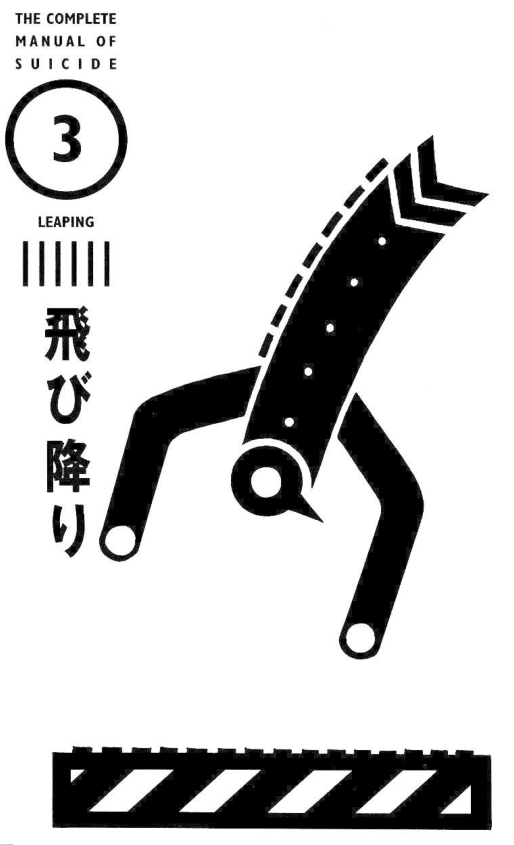
| Pain | ▼▽▽▽▽ |
| Trouble | ▼▽▽▽▽ |
| Ugliness | ▼▼▼▽▽ |
| Ripple | ▼▼▼▽▽ |
| Impact | ▼▼▼▼▽ |
| Lethality | ▼▼▼▼▽ |
Jumping off suddenly is painless. It is highly lethal and is the most high-modern method of suicide. It is not painful to suicide by jumping off a building or a cliff.
There is no pain, no discomfort, and even no terror. Not only that, it can even be very enjoyable. This is not a metaphor, it is actually true. It sounds a bit nonsense, but if you put together the words of those people who have jumped, it can only be said to be this way. This point will be described in detail below, but in this way, suicide by jumping off a building or a cliff can be said to be an excellent method comparable to suicide by hanging. Jumping from buildings and cliffs does not have the shadow that comes with other means of suicide.
The person who completely changed the concept of suicide by jumping off a building and a cliff was a girl named Sato Kayo. In 1903, a young man, Misao Fujimura, jumped from Kegon Falls, wrote in his celebrated suicide note: “The true nature of the whole creation. Is in one word – ‘unfathomable’.”. It gives suicide a noble image of philosophy, different from the past. Just like the successors who continue to appear, Satō Kayo also gave falling suicide a certain sacred image, attracting followers one after another, and even the myth “she fell, she jumped” appeared. Satō Kayo is the real name of popular singer Yukiko Okada.
Perhaps for this reason, regardless of age or sex, jumping off a building or a cliff is second only to hanging. Young people and girls are particularly fond of this method, and women are more likely to do so. This method is on the rise, and now 50% of female suicides, including teenage girls, commit suicide by falling, far ahead of other suicide methods.
The earliest person to jump from a building is said to be a male employee of a company who jumped from the seventh floor roof of Ginza Matsusakaya Department Store to Ginza Street in 1935. The shift from Kegon Falls or Kinpo in the past to high-rise buildings represented by Takashimadaira community is closely related to urbanization and is also one of the phenomena of urban modernization. The day after Okada Yukiko committed suicide, that is, April 11, 1986, the 18-year-old girl took her sister’s hand and left her to leave the community “in order to understand her superpowers in her previous life.” jumped to his death from the rooftop.
When jumping from a tall building, you should check the necessary height and the conditions of the landing site beforehand. There are many suicide attempts, mostly because they fail to maintain the necessary height. If you really want to die, you should jump from a height of more than 20 meters from the ground, that is, from about seven to eight floors above. If the ground is concrete, it cannot be saved. Jumping from the fourth floor, the success rate is only about 50%. Incidentally, each additional floor is three meters higher, which may be used as a basis for conversion.
It is also very important to check the landing place. There is no small bush downstairs. A 16-year-old girl who jumped from the roof of a five-story school building about 18 meters high into the trees below suffered only serious injuries. In the United States, a person fell from a height of 28 meters into a flower bed and suffered only minor injuries such as a broken rib and a fractured left wrist.
Make sure there are no trees or street lights downstairs either. A 17-year-old high school girl who jumped from a 35-meter-high fire escape on the 14th floor only suffered serious injuries and was hospitalized for six months. As a result, she attempted suicide, but there was a green space downstairs. When she fell, the windbreaker she wore outside her uniform inflated with the air and acted like a parachute. She hit a maple tree in mid-air, thus avoiding death. A reporter from a news agency jumped from the seventh floor of a business hotel in Shinjuku. He hit a streetlight in mid-air and landed feet first. His left shoulder and pelvis were fractured but he did not die. He did not lose consciousness at the time, muttering “fuck, fuck” to himself while answering questions from the police who arrived.
Vehicles sometimes also act as pads. In Nagoya City, a 40-year-old man jumped onto the road from the roof of a 33-meter-high department store and fell onto the hood of a vehicle in a prone position. He suffered facial contusions and a fractured right shoulder for three months.
Also, a zinc roof with bike parking underneath would not work. Because she was forbidden to keep at home a stray kitten she picked up, a 14-year-old girl jumped from the 11th floor with the kitten in her arms, breaking a large piece of the zinc roof of the bicycle parking area and breaking three ribs. She was seriously injured, but both she and the kitten survived.
Although this is a special example, note that, in an airplane accident in the United States, someone fell from a height of 370 meters to a patch of snow. He survived with just waist and a few ribs broken. Therefore, attention should also be paid to snow accumulation.
58 Generally speaking, the mortality rate of a 10m high fall is about 80%, and the mortality rate of a 12m high fall is close to 90%.
In order not to be quickly discovered and sent to the hospital, finding an inconspicuous place is also the first consideration. The college girl who jumped from the middle of the Marunouchi Building and the adjacent building was discovered a year later. It was quite an inconspicuous place, since she was not discovered until such a long time later. Next to the stone wall under Building No. 7 of Sophia University, when collecting the bodies of students who jumped from the roof, they accidentally found the bodies of students who had disappeared six months ago. Of course, such cases are rare.
The most curious thing is what it feels like during the falling process and whether there is pain when landing.
The 54-year-old man who jumped from the fourth floor of the building and was saved said: “I didn’t feel afraid. I naturally jumped over the balcony railing with my whole body. I can’t remember whether I felt pain when I fell to the ground, but I knew it.” He still fell to the ground.” Regarding the feeling of continuing to fall in mid-air, he said: “In the process of jumping to the ground, although it is a natural thing, I still think about whether the head or the feet landed first. The problem was probably because he didn’t want his face to touch the ground, so he naturally covered his face with his hands.”
A man who survived a fall from a height onto the glacier bank said: “It was as if I was sitting on huge wings and slowly descending. I thought calmly of myself and my family’s future, and many memories passed by like lightning. My mind. After falling to the ground, my breathing was not disordered, and I lost consciousness without any pain. Although my head, hands, and feet collided with rocks or ice and were injured in many places, I didn’t feel anything. It can be said that, there is no time more joyful than this moment!”
There are countless examples of such falls due to accidents. What these experiences have in common is that they start to fall slowly and have very clear perception. There is no uneasiness or fear at all. It is almost like a dream. At this time, childhood memories often roll through the mind like a revolving lantern. Sometimes one sees mysterious lights, and sometimes one has an out-of-body experience and watches down at one’s falling self. And when one finally lands on the ground, one loses consciousness in a peaceful mood.
Most people who commit suicide by jumping off buildings or cliffs do not scream or shout loudly, probably for this reason. A person who fell said: “I really want to emphasize that falling from a height is the most painless way to die.” Another person who fell even said: “It was a perfect death, there was no pain at all, and it was much more painful than an injection.” Therefore, it can be said that there is no pain in committing suicide by jumping off a building or a cliff. Of course, there are exceptions.
“I’m going to commit suicide now, bye-bye!” The female high school student who was sitting on the window sill on the fourth floor of the school suddenly jumped down. When she was picked up, she whispered, “It hurts so much, it hurts so much!” and cried. She broke her head and neck and died shortly after arriving at the hospital. The reason is of course very clear, because the fourth floor is not high enough. In order not to leave any feeling of pain, you should choose a height where you can die on the spot or at least pass out.
Also, a 30-year-old woman jumped from the 35th floor of the Shinjuku Sumitomo Building, 140 meters above the ground. She stretched her hands horizontally and fell in a high-altitude diving position. Half of her face His head was smashed into pieces and he died on the spot. At this time, the witness heard a scream of “Waaa–”. There was also a 17-year-old female high school student who jumped from the 11th floor while screaming. It is unknown whether they felt terrified when they jumped off the building.
By physics, when you jump from a height of 20 meters (about seven stories), your terminal velocity is 20 m/s, or 70 km/h. Falling takes 2 seconds. In just 2 seconds, you will rotate into various postures and land at a speed of about 70 km/h. Imagine that when riding a motorcycle or riding a car, hitting a wall at this speed is not as big of a collision as you might imagine. However, if you fall from a higher place, the impact when you land is huge. In one unbelievable case, a female high school student jumped from the roof of an eleventh-floor apartment, and when she landed, she broke an iron sewer cover in half.28
When jumping off a cliff, various situations may occur due to the surrounding natural environment. Although it is a bit uncertain, most deaths result from violent collisions, not drowning. There are many cases of people dying due to collision with rocks while falling into the sea or waterfall. Comedian Haruo Nakata committed suicide in Kinpo, Atami. His internal organs ruptured and he died after falling and hitting a cliff. The 53-year-old man who also jumped in Nishikigaura in Atami, Shizuoka, and suffered contusions all over his body and died on the spot. Of course, if you fall into the sea or lake, you may drown.
Cliff jumping can sometimes be unreliable. Two female junior high school students committed suicide by jumping off a 60-meter-high cliff. One died, but the other was saved. Jumping off a cliff under the same conditions, the outcome is actually very different. Furthermore, no matter how steep the cliff is, you will not necessarily die if you fall into the sea. So, in this case, choose famous places. Scenic spots have their origins, that’s why they become famous places. If you choose cliffs, you can choose from Cape Ashizuri in Shikoku or Nishikigaura in Atami, Shizuoka, or waterfalls such as Kegon Falls.
As the 54-year-old man thought after jumping, which part of the body would hit the ground first?
According to a study by a medical expert, when people commit suicide by jumping off a building, they are most likely to land feet first. When landing feet first, 60% of people suffered head injuries, 30% suffered spinal fractures, 20% suffered liver and lung damage, and 25% suffered heart damage.
The second is falling headfirst to the ground. With that, skull fractures, brain injuries, and rib fractures occur. Fractures of arms, spine, and lung injuries are more common. The next common is landing on the buttocks, and the next is landing on the side.
Therefore, no matter which part hits the ground first, multiple body parts will be injured. Judging from those who committed suicide by jumping from buildings and cliffs, nearly 70% of the cases were injured in more than three places, including the head, abdomen, hands and feet. In short, injuries can occur anywhere in the body, but injuries to the head and chest are the most common, accounting for more than 70% of fatal injuries. The heart suffers sudden deceleration and the aorta is often ruptured. As a result, one may died from skull fractures, body contusions, visceral rupture, excessive bleeding, or other causes.
There may be corpses that are so miserable that they don’t want others to see them, but once they are discovered, ambulances arrive quickly and the corpses are taken away in the blink of an eye. Judging from the condition of the buttocks on the ground, sometimes there are almost no signs of injury on the body (Case study 9).29 Therefore, committing suicide by jumping off a building is not such an ugly way to die.
If there are people in the landing place, it will cause many problems.
There are several examples of people surviving because they fell on pedestrians, but the injured people who were crushed under them will claim huge compensation for their injuries. A high school student from a communication school in Saitama Prefecture jumped from the roof of a department store and landed on a car parked below. Although he died, the man sitting in the car also broke his neck bones and became paralyzed from the chest down. The family of the deceased must pay a compensation of 200 million yen.
A recent example is that in November 1992, a man jumped from the eighth floor of an apartment and landed on a senior high school student who was talking to his girlfriend below. The jumper died soon after, and the student died four days later. It is never a good thing to jump off a building and fall on someone else, so please be aware of this.
A 51-year-old company director wanted to jump from the top floor of an apartment building, but he saw several children playing below, so he grabbed the railing of the corridor on the fourteenth floor with his hands behind his back and shouted, “Get away! Get away!” “After the children dispersed, he jumped down and successfully achieved his goal. Since it was 14 stories high, the shouting should have been quite loud. If you don’t want to cause trouble to your family, please pay special attention.
Even if you fall from up high, you may survive. Even if you fall from down low, you may die. Some fell from a height of 6 meters to the bottom of the river and died from their skulls. Others fell from a 6-meter-high pedestrian bridge onto the road and broke their heads, and died an hour and a half later. If you don’t want to fail, you should land with your head on the ground. If you fall skillfully, you will die on the spot even from a height of 5 meters. Also, although the damage to the place of landing may not kill you, death may occur due to special reasons. A 50-year-old woman fell from the fourth-floor balcony of an apartment and broke her waist in many places, but she died of systemic contusion. A man jumped from the third floor of his dormitory and died of pulmonary congestion and acute pulmonary embolism 20 days later.
In October 1986, a 21-year-old junior college student jumped from the top floor of a 15th-floor apartment in Urawa City, Saitama Prefecture. With a “pop” sound, he fell to the iron roof of the bicycle shed. He was immediately taken to the hospital but had no other injuries other than a minor injury to his left foot. The roof of the bicycle shed where he fell left a large hole in the shape of a large font.
This man described the feeling of being in mid-air very calmly: “As I fell, I felt my shoes and glasses slowly falling off. After falling to the ceiling for a while, I suddenly thought, ah! I am still alive.” He I was left with a language barrier like stuttering, and he was worried that he might not be able to pass the job interview the next year.
This is the “state of mind in the air” mentioned by suicide attempters who jumped from high places. There are very few cases of survivors. The 15th floor is about 40 meters high. Jumping from this height will feel like you are descending slowly, and you may be very calm. There is no sense of terror or pain when you land. It’s a miracle that he fell from the 15th floor and barely got hurt. Therefore, those who are determined to commit suicide by jumping off a building should also avoid bicycle sheds.
There was a loud “pop” sound when he fell to the ground. So, what kind of sound would a suicide make when he fell? You might as well check it out.
Of course, this depends on what kind of place one fell from. If the ground was concrete, the female high school student who fell from the roof of the 15th floor apartment made a “pop” sound. The man who fell from the 4th floor apartment window made a “sound like a deflating balloon.” The aforementioned woman who jumped from the Shinjuku Sumitomo Building made a “pop” sound. If one falls on someone else, it will make a “sound like a ball hitting the ground and bouncing” just like the Yokohama high school student mentioned above when he fell. When Yukiko Okada fell from the roof of a 20-meter-high building, she was said to have made a loud “thud” sound, possibly because her skull hit the concrete floor violently.
On May 24, 1992, manga artist Hanako Yamada30 (24 years old at the time) committed suicide by jumping from the eleventh floor of an apartment near her home in Tama City, Tokyo. Because the waist was on the ground, the body was relatively complete and there was very little bleeding. Even his parents were surprised, “Is he really dead?”
She was introverted when she was in elementary school and loved to stay at home. When she was in the second grade of middle school, she tried to commit suicide by using gas because she was bullied. In high school, I was bullied repeatedly and dropped out after one year. Later, he became a cartoonist and had his works serialized in “Weekly Young Jump”, but the painting circles did not give him favorable reviews. Soon, the serialized work could not be published, and was finally published in the underground comic magazine “Garo”31, which did not pay royalties. Unable to make a living by comics alone, she worked as a waiter in a teahouse. However, she couldn’t remember the customers’ orders if the orders get long, and because she was not efficient enough in her work, she was fired one after another and was bullied in the workplace. The restaurant where she had been working for half a year finally gave up. After suffering this series of blows, she became mentally disturbed. She went to this restaurant that was open late at night and begged “Hire me again!” and forced herself to go to work every night. Unable to bear it, the store owner called the police half a month later, and her parents took her back. In the taxi on the way home, she seemed to be crying when she said, “Everyone bullied me.” In fact, she was laughing. She suffered from schizophrenia. Soon she entered a psychiatric hospital and was discharged two months later. However, she lost confidence in her future. On the day after she was discharged, she fell from an apartment near her home and died.
She wrote in her diary two days before committing suicide:
I can’t get along with others. I have a weird personality and I don’t have any friends. … I can’t see the future, and I can’t find a job. (Being bullied) … Nothing. I don’t want to do it anymore. Everything is so strenuous, I have no strength, and I’m very tired.
This was probably the suicide note she meant to leave behind.
The body of a person who committed suicide by jumping off a building is horrific to look at, especially when the head falls to the ground. Like the previous example where the waist is on the ground, the face will be intact. However, the leg may have been twisted due to fracture when it hit the ground first, which is really unsightly.
What we should pay attention to here is the “bullying” that Yamada Hanako suffered everywhere. No matter where she goes, the “guys” who are bullied will always be bullied, and she herself proves this fact. Also, most of the “diary comics” she drew show her paying special attention to “how others see her” at school or in the workplace. It can also be seen from this that she was born with a symptom called “horror of the gaze”. She herself said that she has a “horror of people”, just like she must wear sunglasses when going out. Her life is spent in the never-ending fear of other people’s eyes. Coupled with being bullied again, he finally suffered from schizophrenia and committed suicide. Who could have imagined the extent of her troubles? Those who are unhappy, introverted, and unable to handle affairs neatly are not suitable to survive in a society like Japan. Henry Morselli, an Italian suicide researcher in the 19th century said: “Suicide is a means of naturally eliminating those who are physically and mentally weak in the competition for survival in nature.”32 It is indeed true. Hanako Yamada is also in peace, as one that was “eliminated from competition”.
Her views on suicide during her lifetime are also worth mentioning. In her comics, she quoted these lines from the movie Phantom of the Paradise - “If you have no merit and are annoying, then go to hell! Don’t say those bad words/There is no future in life/It’s better to make a show of it than to mess around/ Living is boring anyway.”33
In addition, she wrote in other magazines - “This world is inherently cruel.” “Disabled people, laugh! Shout! Curse your fate! This is what your life is like. If you feel disgusted, commit suicide.” Her heartfelt words about the helpless misfortune can only be spoken by someone who has lived through the misfortune. There are indeed insurmountable misfortunes in this world. She made this fact clear in one sentence, which is consistent with the purpose of this book.
On September 9, 1979, in the courtyard of an apartment in Fukuoka City, Saitama Prefecture, a first-year junior high school student (12 years old at the time) was found dead wearing a karate suit and falling into a “大” shape. At about 8 a.m. that day, he jumped from the tenth floor of an apartment about two kilometers away from his home to the concrete floor 20 meters below.
The reason for committing suicide was bullying. This student, who was quite cheerful when he was in elementary school, got into fights over trivial matters soon after entering middle school. With a height of only 142 cm, he was the shortest in the class. His classmates said that “although he is small, he is quite arrogant” and was ostracized. There was no one to talk to, so he remained silent every day, and as a result, he was nicknamed “The Wall”. People often mock me and say, “You are the wall, so go face the wall.”
On the evening of June 18th of the same year, the boy posted his suicide note on his desk and disappeared. The suicide note read, “I am bullied every day. I don’t want to go to school. I don’t want to live anymore. I want to commit suicide.” However, at around 8 o’clock that night, the boy returned home covered in sweat. Later, it’s said that he wanted to jump from the top floor of the apartment, but he felt scared and ran back. He was sweating profusely because he ran too fast.
News of the suicide attempt leaked out, and the bullies in the class became even more aggressive. He has a new nickname “Suicide Boy”, and his father used to be a cleaning truck driver. He was ridiculed as “very dirty”, “very smelly” and “like a beggar”. Sometimes he was treated as a thief and had mayonnaise smeared all over his face.
He couldn’t stand the bullying and missed school for the first time the day before his suicide. The next day, which was Sunday, he committed suicide. He wore a karate suit that day. He wore it when he started practicing karate after his suicide attempt. This was also the first day he wore it.
The naughty children who knew he had committed suicide actually shouted “banzai”. As for the reason for their bullying, they said they were “bored” and it’s “fun”.
The first time the teenager attempted suicide, he was so scared that he ran home. Generally speaking, people who decide to commit suicide are calm and not afraid even when they stand at a high place, but this is not necessarily the case.
A 24-year-old woman wanted to commit suicide and climbed a mountain with an altitude of 1,713 meters. However, when she approached the cliff at the top of the mountain, she became frightened and did not dare to jump. She was unable to get down. She spent three days and three nights without food in the wind and rain. He lay there drinking and waiting for help. This happened at the end of August. The temperature dropped to 6 to 7 degrees at night, and she was only wearing a blouse. It seemed that it might be more comfortable to decide to die at that time.
The same is true in the case of Yamada Hanako. It can only be said that there is no way to not be bullied. The bullied boy will always get bullied no matter what he does. Whether it was karate or suicide attempts, they not only had no effect but actually worsened the situation. In a class where there is no common goal but only relationships between people, the only things that can be done are pretend-loves and bullying.
It is said that his father once advised his son, who was in the first grade of middle school, saying: “There are still two and a half years left, just be patient.” However, no one can guarantee that he will be happy after graduating from middle school, and changes will not necessarily occur after entering high school. And considering that he has to endure it for another two and a half years, the choice he made can be said to be the right one. It would have been better to fall to his death the first time he climbed up to the apartment. It is also important to commit suicide early.
What does the Takashimadaira housing complex34 look like now? In fact, in response to the trend of people jumping off buildings around 1980, all 37 high-rise buildings with more than 11 floors were equipped with exterior corridors and exterior stairs starting from the third floor. A fence was put up to prevent people from jumping off the building, and locks were installed on the windows. The stairs to the roof are equipped with locked iron gates. Now it can be said that it is completely impossible to jump off the building. The management has installed with complete suicide prevention devices. Now it looks like an iron prison.
The housing complex was completed in 1973. It was hailed as the largest complex in Japan at the time, and it still looks grand today. Five incidents of jumping from buildings occurred that year, but what made the complex famous was the 1977 incident in which a mother and her son committed suicide by jumping from a building. For this reason, the complex was known as the “Mecca of Suicide”. More than ten people committed suicide every year. In 1980, the number of suicides exceeded 20. By 1982, the total number of suicides reached 100. More than 80% of the suicides are “expedition suicides” from Shizuoka, Niigata and other places, namely people traveling for long distances for the specific purpose of dying there. Some people specifically have bought ladders in order to climb over the fence outside the house. During the peak suicide season, there is a suicide every three days.
To this end, 700 million yen was spent in 1981 to install steel fences and install “life-saving telephones” in the complex, which was a lot of trouble. Despite this, there are still 19- and 18-year-old men and women who smashed glass windows with benches, climbed to the eaves and jumped to their deaths. Perhaps this pair prompted a larger response, though.
A related official said: “In the past seven years (since the establishment of the Takashimadaira Police Station), one incident has only occurred every two or three years. Because of the fence, it is almost impossible to hear anyone committing suicide.”
Nowadays, no one will go to Takashimadaira housing complex to jump anymore, but for those who can’t find a suitable place nearby, or “I’m old school. I’m still going for Takashimadaira!”, I am here to whisper to you some of the nice places at Taka.
It seems that the complex where people jumped from buildings has been completely blocked, but for some reason Block 3-11 (see map) is completely defenseless. Especially in Building 1 of 3-11, outsiders can enter and exit the outer corridors from the first to the fourteenth floors at will. There is only a one-meter-high low grille. The unprepared situation may even scare the residents. In Buildings 2 to 6 of 3-11, the windows on the corner platform of the stairs do not have locking devices. As long as you climb up the low wall about 150 centimeters, you can jump off smoothly. Even so, I still recommend the 14th-floor exterior corridor of Building 1 of 3-11, where you can see the view of the Itabashi area across from the Toei Line. Needless to say, there is a concrete floor below, and there are few pedestrians. If you fall, you will definitely die. Moreover, there are no railings on the outer stairs of this building.
Take the Toei Mita Line and get off at New Takashimadaira Station, head towards 3-chōme or 4-chōme and turn left. Building No. 1 of 3-11 is adjacent to the train track. It is the only building in the entire community that does not have iron gates installed. You can find it at once.
If you want to see the unique scenery of the iron gate, you might as well get off at Takashimadaira Station, which is one stop ahead for the best vantage point.
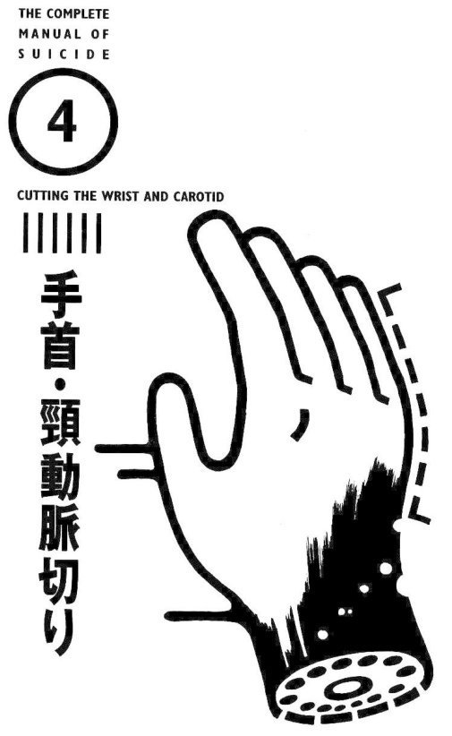
|
|
|
|---|---|
| Pain | ▼▼▽▽▽ |
| Trouble | ▼▽▽▽▽ |
| Ugliness | ▼▽▽▽▽ |
| Ripple | ▼▼▽▽▽ |
| Impact | ▼▽▽▽▽ |
| Lethality | ▼▽▽▽▽ |
Although I have dismissed wristcutting as good for nothing except a mere taste of suicide, rather than suicide for real, it is possible to die from it. This is one of the most peaceful ways to die even if it works, and be prepared for failure, which is likely.
|
|
|
|---|---|
| Pain | ▼▼▽▽▽ |
| Trouble | ▼▽▽▽▽ |
| Ugliness | ▼▼▼▽▽ |
| Ripple | ▼▼▼▼▽ |
| Impact | ▼▼▼▼▽ |
| Lethality | ▼▼▽▽▽ |
Want to know what it’s like to have your own blood fountaining all the way to the ceiling? But it’s too scary, and the chance of failure is still high, so it’s not a good method.
|
|
|
|---|---|
| Pain | ▼▼▼▼▼ |
| Trouble | ▼▼▽▽▽ |
| Ugliness | ▼▼▼▼▽ |
| Ripple | ▼▼▼▼▽ |
| Impact | ▼▼▼▼▼ |
| Lethality | ▼▼▽▽▽ |
Seppuku has absolutely no benefits, except that it’s rare and shocking, but why do people keep doing this? It is inexplicable.
In the middle of the night, alone in your room put a knife to your wrist and mark some lines as if just testing it out. It doesn’t matter whether you die or not.
If you have really thought about death, you have probably had this kind of experience at least once. If you put a knife across your neck, you can also experience the thrill of death. Cutting your wrists is the simplest way to experience the air of suicide on the spot. At the same time, you can observe with your own body and eyes and understand the entire process of pain and death. Known as “wristcutting syndrome” in the 1960s, this method of suicide was extremely popular in the United States, then spread to Europe, and finally Japan. Recently, after singer Akina Nakamori35 slit her wrists, “Akina Syndrome”, a disease in which young women have slit their wrists one after another in discos around Roppongi, has become one of the most fashionable suicide methods nowadays.
However, I would not recommend this method to someone who really wants to commit suicide. Because there is an opinion that the mortality rate of wrist cutting is only 5%. Although the method is popular, the attempt rate is high. Having said that, it is not correct to insist that “you will never die if you cut your wrists.” If the foregoing figures are to be believed, one in 20 people will die from this method. A former prosecutor also said: “Not many people die from excessive bleeding just by cutting their wrists.” This chapter is written for those who hope to become the 5%.
Of course, it doesn’t matter if you don’t intend to die in the first place but just want to experience suicidal emotions and cut your wrists. As long as you don’t cause trouble to others, there is no reason for others to criticize you for that. Furthermore, just like slitting the wrists, there are other ways to maim the body with a bladed object and cause massive bleeding to death, such as cutting the carotid artery, stabbing the chest, or committing seppuku. These self-mutilation behaviors also result in death due to bleeding, so they are introduced together in this chapter.
It is also important to confirm the location of the cut in advance. If you want to slit your wrist, you should turn the palm of the less dexterous hand up, and observe your wrist carefully. Feel for a pulsing point on the inside of the hand joint. That is the radial artery. Cut there. There are two oblique veins between the hand artery and the skin, which cross the radial artery exactly at the creasing point on the wrist. In order to see their relative positions more clearly, you might as well press the armpit firmly to make the veins protrude. If you just cut the vein without doing anything else, the blood flow will stop naturally at about 200 to 300 c.c., and you will not die. However, even with this, a considerable amount of blood was shed, and this sight would often make one no longer want to die.
Aiming at the artery under the skin that is not covered by the vein, and cutting it horizontally, will only cut veins, not arteries. The arteries are six to seven millimeters below the skin (see Figure 1), which is deeper than it looks. The artery must be pierced and several cuts must be made. Even if you aim just right like this, when you actually cut, you will likely cut the median nerve next to it, which is very painful. It may be possible to avoid the nerve by cutting lengthwise to the artery, but it will be difficult, because the artery and the nerve are too close. If you truly want to die, then you should prepare to endure the pain and cut the nerve and tendon together. Even if you survive the attempt, nerves and tendons could be reattached at the hospital. The ulnar artery has the same thickness, and is on the opposite side of the pulsing point, so it is better to cut it at the same time. In short, if you don’t have the determination to cut off your wrist, you won’t die.
Also, consider checking the position of the watch strap in case a suicide attempt leaves scars.
When cutting the carotid artery, the easiest thing to cut is the external carotid artery under the ear on the side of the hand that is usually more flexible. You may wish to check the location by comparing pictures 2 and 3. The carotid artery is located at the height of the neck and is divided into the internal carotid artery and the external carotid artery. The blood vessels near the shoulders are thicker and deeper. The depth below the ear is more than three centimeters, and there are a lot of thick muscles around it, making it difficult to cut. In this case, don’t make a horizontal cut, but stab it through ruthlessly and then pull it out. Sometimes the cut was not done smoothly and several cuts were required (Case study 11), but there were also cases where a person carrying a rice bowl fell, and the broken pieces of the bowl cut the carotid artery, killing the person instantly. It is also very difficult to cut the carotid artery, but the above-mentioned cases are not unprecedented.
Hideki Tojo36 asked the doctor about the position of his heart, often touched his chest to confirm the position, and even had a target drawn to shoot at with a pistol, but it still missed the mark. (Some people say that, because he was a left-hander, which is rare among dictators, he fired with his right hand.) There are many examples of stabbing someone repeatedly without hitting the heart.
For seppuku, the blade must be at least 15 cm long. If you can’t apply enough force and determination to push the blade poking out from the back, you are not the kind of person who can commit seppuku.
It is natural to feel considerable pain when you cut a nerve. As for the veins, it’s just the pain of an ordinary cut.
However, the problem after cutting is that if the artery is cut smoothly, one-third of the blood in the body will flow out, and the person will die. In the human body, men have about 80 ml of blood per kg of body mass, and women have about 60 ml of blood flowing. Therefore, if you are a woman weighing 50 kg, you have 3000 ml of blood in your body, and if one-third of it (1000 ml) flows out, you will die. This is only equivalent to 2.5 times the 400 ml taken when donating blood. Children and the elderly may die from even smaller amounts of bleeding. It is indeed difficult to die by slitting the wrist, but it is still very simple as long as it is cut reliably and the wound bleeds constantly.
It is widely known that marathon runner Kokichi Tsuburaya37 committed suicide by severing his carotid artery. He was lying on the bed and used a double-sided safety blade to cut his right carotid artery.
Similar to the hand, cutting the jugular vein, which is located shallower than the artery, will also cause massive bleeding. Air will be sucked in along with the flow of the artery, and the air entering the blood vessel will block the lungs and cause death. Likewise, if air enters the trachea, suffocation may occur 60. However, even if the carotid artery is cut, there are not many cases where the bleeding stops and the patient does not die, just like the hand vein.
However, if the deep stabbing reaches the back, then the main artery in front of the back bone will be cut, which will cause massive bleeding and immediate death. Regardless of gender, old or young, quite a few people died using this method. When doing it, the knife should not be inserted and kept there, but should be pulled out immediately. Otherwise, the knife will block the bleeding.
When the heart is pierced, if the puncture is accurate, death will occur on the spot, but the tissue structure of the heart is quite tough. A housewife who committed suicide with a thick-edged kitchen knife had three holes in her heart. This means that she did not die all at once. A carpenter attempted suicide by driving three long nails into his heart. The nails blocked the wound and prevented internal hemorrhage. He died of bleeding during the operation after being sent to the hospital.
No matter which method is used, it is generally difficult to commit suicide by bleeding.
60 This sentence may be wrong. The author should refer to air embolism caused by large amounts of air entering the blood vessels. Generally speaking, if more than 100 ml of air is injected into the vein or the air injection rate exceeds 100 ml/s, death will occur. More than 2 ml of air in the cerebral blood vessels can cause death, and more than 0.5ml of air in the coronary arteries can cause death.
When the carotid artery is cut, some books describe it as “a sea of blood all around”. In fact, it is just a situation where several liters of blood flow to the floor, sometimes splashing on the ceiling or walls, or at least a puddle of blood, but the floor is not completely covered with blood. No, Tsuburaya’s room didn’t turn into a sea of blood.
In the case of seppuku, if the abdomen is cut transversely with a knife, a bucket of intestines will flow out, which is extremely ugly.
If you definitely want to cut your arm veins and die slowly and happily, it is best to drink some wine and take a bath to smoothen the blood circulation. Place your hands below the heart in the bathtub and be careful not to let the blood coagulate and wait for death to come. It is possible to drown if you are slightly unconscious, but when you regain consciousness, this is not euthanasia, but you will feel the pain of suffocation. Therefore, be careful not to drown. Also, when cutting the neck, it is best to lie on your side to keep the heart positioned upward.38
When blood flows out slowly, other internal organs that are not directly related to maintaining life will replenish some blood during this period. This is a situation where the patient cannot die without losing nearly 70% of the blood. This means that it is impossible to die by cutting the veins in your arms.39 If someone dies due to vein cutting, it is usually because the air sucked into the vein blocks the blood vessels of the brain or lungs, and the death is caused by air embolism. However, this is extremely rare.
When you first think of wristcutting and the consequences of a failed attempt, you’d be worried about the scars. When only the vein was cut, even if it is very deep, it would heal to just a white mark, which looked similar to a wrinkle on the wrist. But if you cut the artery, you will also cut the tendons on the next layer and the median nerve in the center of the wrist on the same layer. Although the tendons and nerves are severed, they could be reconnected through surgery (Case study 12). However, if one makes a longitudinal cut, the stitches and scars after surgery will be conspicuous. Plastic surgery can help, but medical expenses can range from tens to hundreds of thousands of yen.
The cost of suturing the wrist vein is about 30,000 yen, which covers 30% of the medical insurance. As a price for a suicide gesture, it is relatively cheap.40
In 1985, a sixteen-year-old female high school student slashed her wrists with a knife. The wound damaged an artery and produced a liter of blood, but the attempt ended in failure. She said this about the situation at that time: “It was painful after all, and a lot of blood flowed, but she was still awake, so she cut several more times. It hurt! When the thick blood vessels were cut, blood spurted out. When it came out, there was a hissing sound. I thought I would die like this, but it still didn’t work, so I cut it again. It seemed like I had cut a nerve and I felt numb. I was taken to the hospital. When I was undergoing treatment, I thought it would be better to give me an injection of anesthesia, because I am already averse to pain.”
From the second grade of middle school, she still talked and laughed in front of everyone, but when she was alone with her friends, there was no topic of conversation, and she always felt distressed that she could not speak. She wanted to go to a neurological department for a check-up, but she never could speak up to make the request.
The situation under she decided to commit suicide was described thus: “After dinner, I had do to homework, and I was thinking”I can’t not do it. I can’t not do it.” I suddenly thought that if I die, wouldn’t there be no more of homework? Under such circumstances, my mood gradually shifted to “I can’t not die. I can’t not die.” But she also said: “It took seconds for me to decide to take action.” and then continued: “I have thought about it a long time ago, that with death all pain would end. Although I thought I should live on, I knew that if I die, I don’t have to do those things I don’t want to do, and I don’t have to think about those painful things.” When I knew I could not die: “I wonder if someone had discovered me earlier, ah!”
As a result, she stayed in the psychiatric ward for four months and was finally discharged after undergoing physical and mental recuperation.
It seemed that she had cut the arteries and central nerves in her hand. It was very painful to cut to this extent. Her idea that “pain will be nothing if you die” is very insightful.
At about 4:30 pm on July 11, 1989, when the popular singer Masahiko Kondō returned to her apartment, he found that his lover, Akina Nakamori (24 years old at the time), also a popular singer, had cut into her left elbow joint with a razor, and was lying in a pool of blood. Blood of about five large cups’ volume were shed in the bathroom where she collapsed. She was unconscious. It seemed that she had cut her wrists shortly before she was discovered. She was immediately sent to the hospital of the Jikei University School of Medicine. The wound was eight centimeters long and two centimeters deep. The vein and median nerve were cut, and the suturing operation took six hours. General anesthesia was performed during the operation, the blood pressure dropped to about 60 mmHg, and 600 ml of blood was transfused. After the operation, the arm was bandaged with a plaster for a period of time in order to prevent the veins and nerves from being broken again. She later recuperated at a hot spring in Nakaizu and is now fully recovered. The sequelae of being unable to bend the fingers and losing feeling in the thumb, index finger, and middle finger that she was worried about at first did not appear, and the scars were not visible.
The motive for the suicide attempt is believed to be emotional difficulties with Kondō.
This is an example of a suicide attempt by cutting the blood vessels on the inside of the elbow, which could easily be dismissed as a boring case of faked suicide. But the length of eight centimeters is the length from one end of the inside of the elbow to the other end, and the depth is two centimeters, which is a considerable degree of serious injury. The wound must be wide open, and if an artery is cut, it will definitely be life-threatening. This means it’s probably a genuine attempt.
The median nerve, which controls the movement and sensation of the hand, is about one centimeter below the skin (see Figure 4). There is also a thick artery nearby, also one centimeter below the skin. It is the perfect place for suicide. It’s a miracle that she didn’t cut into this artery. Some doctors said: “It probably was not being cut longitudinally?” However, it is generally believed that the opening is only two centimeters deep, and it is not actually cut to two centimeters. Two centimeters, that’s deep enough to reach the bone.
The body of Mr. Mitsutaka Shimada (then 56 years old) was found on a February morning in 1979, under the building of the trading company Nisshō Iwai, of which he was an executive. The so-called Douglas–Grumman bribery scandal was a case that, along with the Lockheed bribery scandals, involved the political and financial circles of Japan and became a hot topic at the time.
Shimada’s body had knife marks on his right neck and left wrist, and several awl marks on his chest. The cause of death was hemorrhage and brain trauma. The brain trauma was caused when he jumped from the president’s office on the seventh floor of the building. He was wearing a shirt, knee-length underpants, a suit jacket, and socks only on his right foot when he died.
At around 10:30 the night before, he said to the members who had stayed behind to work overtime, “You can go now.” Then he tidied up the room, took off his clothes, cut his neck and wrists with a knife, and stabbed his chest with an awl at several places. But none of them were fatal. After hours of pain, he finally climbed up to the 70-centimeter-high window sill with all his strength and jumped out of the seventh-floor window. The sock on his left foot was left by the window. He probably slipped off it when he was climbing over the window sill due to blood. There were also blood stains in the restroom five meters away from the president’s office. This was because he went to the restroom due to incontinence due to shock caused by heavy bleeding. Shimada’s struggle with death was extremely miserable. He fell into a coma several times due to bleeding, and every time he regained consciousness, he slashed at his body. This was repeated many times, and it seemed that it took a long time.
The carpet in the room was naturally stained red with blood. Freshly opened bottles of Suntory Whiskey and tea bowls were scattered around. The table was neatly arranged as if to reflect his personality during his lifetime, and nine suicide notes were left behind. Pants, coats, scarves, shirts, etc. were neatly placed in the middle of the sofa, which showed that he had made careful preparations for suicide.
He was regarded as an important witness to the incident at that time and was the right-hand man of the ex-vice president, Kaifu Hachiro, who was the central character in the scandle, and later arrested in July 1979. Therefore, there is no doubt that he committed suicide due to this incident. Two days before the suicide, Kaifu had held a press conference.
His suicide note left to the members read, “The life of the company is eternal, and we should dedicate ourselves to safeguard its eternity.”
This is a vivid example of the difficulty of committing suicide through self-harm. In fact, self-harm suicide, like suicide by poisoning, has a particularly high attempt rate. This man first cut his wrists, then his neck, and then stabbed his chest with an awl. In fact, if he had chosen to jump off the building in the first place, there would have been no need for him to suffer so much unnecessary suffering.
One thing that should not be ignored is that when he was about to pass out while hacking his body with a knife, he went to the bathroom. Among other means of suicide, defecation often occurs when the person is in shock but is still conscious. Since you can make thorough preparations for tidying up your room and laying out your suicide note, you should go to the bathroom first. Although it is self-inflicted, one should not stab and chop blindly, as this will not kill him. However, it is really unusual of him to repeatedly go to the bathroom during the suicide process, just to make sure others do not see the signs of incontinence.
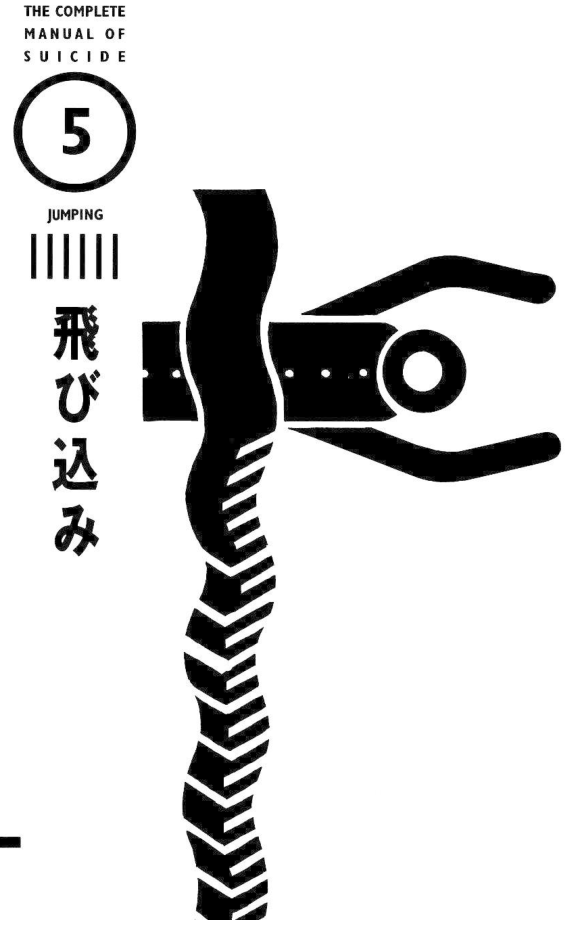
| Pain | ▼▼▼▽▽ |
| Trouble | ▼▽▽▽▽ |
| Ugliness | ▼▼▼▼▼ |
| Ripple | ▼▼▼▼▼ |
| Impact | ▼▼▼▼▽ |
| Lethality | ▼▼▼▼▼ |
The corpses will be bruised and bloody; the suspension of electric trains will cause great obstruction. However, this method can indeed lead to death when one is determined to die, so it is becoming more and more popular.
Dragging an extremely tired body out of the company or school, just thinking about tomorrow makes you feel extremely heavy. At this time, you stood on the platform and heard the announcement that the train was arriving. “I don’t want to think about the future anymore, I really want to be a ghost-under-the-wheel41 here and end everything…” There must be many people who have such thoughts in their minds. Although people knew that their miserable corpses would be exposed in front of people, people who died after crashing into trains kept appearing. Perhaps this method was perfect for the impulsive desire to commit suicide.
When it comes to suicide by vehicle, the easiest one is railway suicide, followed by hitting a truck on the road. However, according to statistics from the Metropolitan Police Department in 1991, 179 people committed suicide on tracks inside stations, and 78 people on railway tracks not inside stations. There were only four suicides by cars on the road. In other words, except for jumping into the sea or lake, more than 99% of the accidents did not hit ordinary vehicles but hit trains and trains. Among them, most of them lie on the railway track outside instead of inside the station.
There are more people lying on railway tracks than ordinary car crashes. This may be because this method has a high death rate. It is a sure-fire method like hanging or jumping off a building. If you want to crash and die, then hit the train without hesitation!
According to statistics from the former National Railways Metropolitan Area Headquarters, the months with the most people lying on railway tracks are July and August, between 6 and 7 o’clock in the evening, which is slightly different from statistics on other suicide methods. Men account for 77% of the gender. Another interesting thing is that more people commit suicide on cloudy days.
When jumping off the platform at a station, choose a “non-stop” option for limited express or direct express trains. The fatality rate of a decelerating train will also be reduced. If it is stopping at a station, you should choose the farthest train entry point on the platform.
Jumping suddenly and unexpectedly will have an impact on those around you. Although it is not bad, if the timing is too late, it will hit the front of the car and be bounced off, possibly surviving. If the force of the jump is too strong, you may overshoot and flop onto the other side of the track.
There is no need to fumble it with anxiety. When the train entering the station is more than 100 meters in front of you, even if it brakes immediately, it is too late. The train would have been already braking as it is entering the station, so the emergency brake wouldn’t help. Probably they will not stop you if you calmly jump onto the track and lie there. A 42-year-old company employee came down from the platform to the track and lay prone there waiting for the arrival of the tram. Finally, the train ran over him, crushing his head and right leg, and he died on the spot.
A Yamanote Line train entered Tokyo Station at a speed of 57 km/h. It braked suddenly because a man jumped off the track 30 meters in front of it. However, due to inertia, it still drove forward for more than 100 meters, and the man was crushed. It was broken into pieces, and the brain matter burst out from the back of his head. He died on the spot. At this time, you should remember that the train siren will be so loud that it will almost deafen your ears.
When lying on the track some distance away from the station, try to choose a spot that is behind a sudden bend, so that it is hidden from the driver. It’s also a good idea to take a train beforehand and observe areas at the front of the train that the driver doesn’t pay much attention to. Once you find a suitable place, you can lie down on the track and wait for the train. However, you will hear a rumbling roar when the train approaches. It is said that in this situation, you would panic and cannot stay put, not if you are a normal mental state, so it is best to take some alcohol, sleeping pills, sedatives, etc. However, there was also a third-year high school female student who was run over by the train when she jumped from the uplink platform of Shizuoka Station to the track and stood still facing the “Hikari” train42 traveling at a speed of 200 km/h. This is truly an example of courage that makes people want to bow down in respect.
It is also more difficult for trains to stop on ordinary routes. A
train traveling at a speed of 90 km/h braked suddenly when it found a
figure 200 meters ahead. However, the train stopped where it ran over
the person and then traveled another 200 meters. According to the data,
the distance until the train stops after emergency braking is
s^2/20 + s/2, where s is the speed at the time
of breaking.43
In terms of time, you should definitely choose night time. Neither the people around nor the driver would notice you easily.
If you have difficulty entering the rail track area, you can either quickly run in from the level crossing, or jump from the pedestrian bridge. There are many cases of jumping from the level crossing. There are actually many ways to enter the track area. (See Case study 16)
If you lie down on the track from the beginning, any part of your head, abdomen, chest, hands and feet lying on the track will be crushed. As long as the chest and head are crushed, you will die on the spot. If the clothes are caught by a vehicle, they will be dragged up for more than ten meters, and then the body will roll multiple times and various parts will be run over multiple times. The crushed corpses will be scattered for hundreds of meters. This will most likely happen when jumping from a platform or breaking in from a level crossing.
The kinetic energy of the train is so great that sometimes shoes or bags will hit people on the platform, which indicates that the person is dead. A man flew into a train traveling at 85 km/h. As a result, his hands, legs, and body were crushed to pieces and scattered within a hundred meters. His head was missing.
Being crushed by a Shinkansen train was even worse, as if the body had been stirred by a blender. Near Sagamino plateau, a man suddenly squatted on the track 300 meters in front of the “Hikari” train traveling at 200 kilometers per hour, with his back to the train. A cloud of dust. Blood splattering everywhere. Scattered within 400 – 500 meters were his mostly intact liver, parts of the scalp and hair, about 30 cm of the spine connected to the pelvis, a bit of skin from the neck and jaw, the right wrist, three teeth, etc. The other parts became pieces of meat and bones scattered farther away. After braking, the train traveled forward for three or four kilometers before stopping.
The aforementioned girl, who was standing on the track, was hit by the “Hikari” train. Her upper body hit the platform wall 30 meters away and then bounced back to the platform. Then her clothes and sunglasses also flew towards the same place. A bloody mist appeared. The sales department on the descending platform said that they only heard a dull and loud bang, and their eyes suddenly turned red. So, what is the force that causes body fragments or items to be ejected with such violence?
If the body collides with the front of an ordinary train, it will be ejected five to six meters if the train is moving. At this time, there are many cases of death due to instantaneous cardiac arrest. In this case, if you still fall on the track after being ejected, your body will be crushed. But if you fall outside the track, unfortunately, you can still survive.
This is the most brutal-looking of all suicide methods, and you should be mentally prepared for it. However, unless the crash is at a station or a level crossing, the body will not be seen by ordinary passengers and onlookers. Sometimes the bodies that were knocked out showed no damage on the surface. In this case, the damage to the internal organs is severe.
The station staff usually disposes the body and cleans up the surroundings in about ten minutes, but after thirty minutes they might still have not found the crushed hands or neck. A man who committed suicide had his face attached to a truck and was discovered after traveling 900 km from Fukushima Prefecture to Hokkaido. There is also an example where the arm of a woman who was hit in Yamaguchi Prefecture was discovered after traveling 900 km to Yokohama.
Although the bodies were removed and the trains resumed running, bits and pieces were scattered everywhere, and the sleepers and paving roads were still stained with blood, leaving tragic traces. If someone is crushed to death by lying on the track outside the station area, it is less likely that the body will be left crushed into two or three pieces. In short, this is definitely not a suitable method for people who want to die as a connected piece of meat.
You may get unlucky, and your hands and feet are crushed but not fatally, and you may have to rely on prosthetics for the rest of your life (Case study 15). To avoid this, let your neck or chest lie on the track. Sometimes the body would get caught in the middle of the track and miraculously you would only scratch the skin a little (Case study 14). Therefore, making the body and the rails cross at right angles is the basic method of suicide on rails.
Railway suicides can result in huge compensation bills. According to statistics from the old National Railways in 1985, an emergency braking of a train will cause 6,000 to 8,000 yen in power loss and about 10,000 yen in wheel wear costs. If a train stops once, for Tokyo’s Yamanote Line, which has a large number of passengers, hundreds of thousands of yen will be lost every 15 to 30 minutes. During peak hours, it will cause losses of 1 to 2 million yen. The damage cost of the Shinkansen is even greater, tens of millions of yen for one hour of delay. In addition, there are fees for housing the deceased. There is also an example of a car crashing into a limited express train and being asked for 30 million yen in compensation, and an example of a car crashing into a Tokaido line and being asked for 140 million yen in compensation. People who know the inside story said that the railway companies typically do not claim compensation for the sake of public opinion. But Japan Railways is not a nice guy. Although they might not file a legal case, they might still attempt to get some financial compensation. However, there are many cases where the contact address of the deceased’s family members is unclear, and so they cannot obtain compensation.
From this point of view, committing suicide by lying on the train is not a cost-effective method. Still, as mentioned at the beginning, when you suddenly wants to die, this is the method that appears ready-made in front of you. If you want to die without waiting, it is of course the best solution for such impatient people. Render unto Caesar the things that are Caesar’s, and unto the future the troubles that are the future’s.
At around 5 p.m. on December 29, 1991, a 24-year-old woman, OL, attempted suicide by jumping onto a moving train on the Musashino Line from an overpass 500 meters in front of Nishi-Funabashi Station. She was a single woman, working at a computer company in Chiba City, and she was on her way home from get off work at the time. The overpass is 7 meters high. If she had fallen in just the right posture, she would have died even if there was no train passing. She jumped onto the track when the train was 10 meters away from her. Then the train passed by, and the driver also felt, “She’s crushed!” The train braked immediately and stopped. She was under the 6th carriage, counting backwards from the last one. Her body happened to be sandwiched between two rails and she was not injured. The doctor diagnosed her with contusions on the head and waist that required treatment for a week. She was saved because she had a small body, her back was not hooked by the vehicle, and the train slowed down before it entered the station. Otherwise, the body will be roped into the wheels and she would be crushed to death.
Although she did not say the motive for committing suicide, her friends said that it was related to her recent relationship troubles with a man.
Jumping off a building and crashing into a car, this is a rare example of using two highly lethal means at the same time, but still surviving. Usually, even a person who jumped from a height of 7 meters would suffer serious injuries. In addition, the train passed on top, but in the end, she only suffered minor contusions. This is indeed a miracle. It is another miracle that she did not plan to sandwich the body in the middle of the rails beforehand, but did so accidentally. Wasn’t there a female suicide, popularly called a “Human Bullet”44, who also jumped from an overpass towards a train? She smashed the front panel of the cab,, fell inside the cab, and died there.
There is a question worth thinking about, that is the day and time when she decided to commit suicide. December 29, 1991 is Sunday. The work was supposed to end the day before or two days ago, so why did she stay in the company until after five o’clock in the evening? What was she doing?
Regardless, she was determined to commit suicide. However, because of this unexpected situation, it is difficult to say that suicide will definitely be successful if this is done.
In February 1955, Ms. T attempted suicide by crashing her car, but failed. She was a 16-year-old grade-11 high school student at the time. At about ten o’clock in the evening, she rushed to the express train that had just departed from Shinjuku Station on the Odakyu Line, and “jumped off as if she was attracted by the railway” from the front of the platform. The train braked suddenly and stopped. T’s right ankle, the part below the knee of his left foot, 15 cm below the shoulder of his left hand, and the ring finger and little finger of his right hand were all broken. All that is left are the thumb, index finger and middle finger of the left hand. At that time, T screamed desperately: “It’s hot, it’s hot!” and soon lost consciousness. She was taken to the hospital by ambulance and was in a coma for a week. When she regained consciousness and learned of her condition, it was the tenth day after the accident. T once thought in despair: “I have no choice but to die again.” Later, she believed in the words of a Christian pastor and the Bible and decided to live on. She was discharged from the hospital in August and both legs were fitted with prosthetics. She married the pastor the next year, had two children, and is now engaged in speaking engagements promoting the preciousness of life.
It was her fault to collide with the train that had just started from the front of the platform, but it was probably just an accident that her neck, body and other parts that could have been fatally injured were not crushed. However, this example also shows that the faster the train, the better. However, even a train that has just started has the power to break hands and feet. This is a rare example of failed railway suicide.
In March 1991, the body of a 26-year-old woman was discovered near the Yoshioka-Kaitei Station in the Seikan Tunnel under the Tsugaru Strait that separates Honshu and Hokkaido. Both hands and legs were completely cut off above the forehead. However, Yoshioka-Kaitei Station is a disaster backup station among the two unmanned stations in the Seikan Tunnel, which is located on the side of the tunnel. The trains do not stop there, so it is not a place that ordinary people can walk into at will. How could she die in such a place?
Investigation results showed that this woman had been missing since the day before yesterday. She decided to return home to Tokyo on the 18th, and the incident occurred on her way home from Sapporo. She had suffered a nervous breakdown not long ago, and she had made up her mind to die. She took the express train that departed at 22:00 on the same day. When she passed Yoshioka-Kaitei Station at about 3:50 the next day, she climbed up while the train was slowing down. After entering the driver’s room, he opened the window and jumped out. Then she lay down on the railroad track on the other side and was crushed to death by a truck passing by around four o’clock.
On the same day (18th), she called home and told her father, “I’m going home soon.”
Lying on the tracks and waiting to die is very difficult, especially in an urban area. But the “tunnel suicide” she invented can be used in urban areas. Going around to find the blindspots in the city is also fun in preparing for railway suicide. It seems that the subway also has many blindspot places.
The main condition for walking within the driving route is that the surroundings must be dark. Don’t let others see you when entering a level crossing in an urban area. This is more likely at night and difficult for drivers to spot. In fact, the female corpse was only discovered an hour and a half later, around 05:40, which means the driver was completely unaware of it.
It is also important to cut off completely above the forehead. You can imagine the huge cutting power of train wheels. It was assumed that she was lying on the tracks, based on the condition of the body. If you leap in front of a car, you will most likely be crushed to bits. If you lie straight on your back, you will be cut cleanly into segments. This is a great inspiration for those who attempt to commit suicide by lying on the train tracks somewhere other than at the station.
In the plot of Nishimura Kyotaro’s mystery novel Seikan Murder Express Train Route (青函特急殺人ルート), there is a female corpse found at Yoshioka-Kaitei Station. Maybe she has read this novel.
Having said that, it is unimaginable to be able to lie on the rails and wait for more than ten minutes in the biting cold darkness on the seabed 150 meters below the ground. It is unimaginable for ordinary people to have an extremely terrifying experience that exceeds ordinary fears. The psychology before suicide is really hard to understand.
Like other suicide spots that became famous, nowadays there may not be many people who would still go to Mount Mihara to commit suicide. However, the volcano has the advantage of swallowing up the corpses forever. The crater forbids human approach, and there is no large-scale search for corpses like in Aokigahara. From this point of view, it still has its uses, so it is introduced here.
How did Mount Mihara on the island of Oshima, one of the Izu Islands, become a suicide spot? Not many people know about it now, and the cause can be traced back to a mysterious Case study 60 years ago. On February 24, 1933, two 21-year-old female students from a women’s vocational school climbed to Mount Mihara. One of them said “regards to everyone” and jumped into the crater, while the other was rescued while hesitating. The two were planning to commit suicide together. This alone was enough to shock the people around them. After investigation, it was found that the female student had climbed Mount Mihara with another friend a month ago on January 9th, which also shocked the friend. She committed suicide and returned. The “death guide” incident caused a sensation in society. For unknown reasons, suiciders, mainly young men and women, flocked to Mount Mihara. Within three months, 32 suicides and 67 attempted suicides occurred, shocking all of Japan.
The real situation is that the girl who became the “death guide” was entrusted by someone to accompany someone to commit suicide a month ago. Then, a month later, someone accidentally confided in her the idea of suicide, so she told them of Mount Mihara. Little did she know that person coerced her to be a guide, so she had no choice but to take her friends to the crater.
As a result, in this year alone, 804 men and 140 women suicided at Mount Mihara, a total of 944. There were even some who jumped in together after meeting for the first time at the top of the mountain. There were some who said to tourists, “Goodbye everyone.” before jumping in. The man jumped down. As a result, Mount Mihara suddenly became a suicide spot.
From the resting area around the crater, or the souvenir shop at the top of the mountain, walk towards the inner ring of the caldera of Mount Mihara. Around the crater, only the top of the inner ring is off-limits. You cannot peek into the crater. If you want to jump, you can only climb over the fence quickly (see Figure 1). When jumping into a volcano crater, there are many cases where you would end up smashing and getting stuck on a rock shelter halfway, or fall to the bottom of a volcano but not into the magma (Case study 17). However, you can also become comatose due to inhaling toxic volcanic gases, plus the injuries sustained when it rolled and fell, death would occur within a few hours.
Although it is not related to Mount Mihara, a young man followed Osamu Dazai in 1948 and left a suicide note “Take me with you.” and threw himself into Mount Aso. He fell onto a rock 150 meters high, and was finally pulled up. In fact, according to survey data, 240 meters down from Aso Pass, the temperature of the rock is 100 degrees and the temperature of the air is 65.6 degrees.
When jumping down, be careful not to let people on the observation deck on the top of the mountain notice you.
There are boats to Oshima from Tokyo, Yokohama, Atami, and Ito, and direct flights from Haneda and Chōfu. If you go to the top of Mount Mihara, you can take a bus or a taxi.
There’s accommodation at the Oshima Hot Spring Hotel in the eighth section of Mount Mihara. There are also large and small hotels in Motomachi and Okada at the port, as well as farmer’s inns. It is not a bad idea to stay for a few days before committing suicide.
At about 01:00 pm on December 3, 1956, a young man (29 years old) and a woman (26 years old) jumped from Mount Mihara into a volcano about 60 meters deep. Mount Mihara had a large-scale erruption during January of that year. When the two jumped in, one could still see the new crater caused by the magma eruption.
The rescuers who received the news braved the eruption of unbearable heat and sulfurous gas to rescue him. The woman’s leg was stuck in one of the three places where the lava flames were burning, and she could not move. There was no possibility of rescue. The man was slightly away from the flames, covered in blood and moaning. Since he was still conscious, the rescuers carried the man, whose legs were injured, on their backs, and moved him to a safer place that was more than ten meters above the rocks. By now, it was already late at night, so they turned back to the crater rim, and it was already 03:15.
But when they went to rescue him again early the next morning, the man had already climbed up to the crater shore on his own power and collapsed there. Unable to use his legs at all, he tore his scarf and bandaged his head and hands. He dug two holes in the volcano wall with his hands. He put his knees on the holes and climbed up. He dug two more holes and climbed up. Repeatedly. He completely climbed up the remaining crater wall with an inclination of about 70 degrees, finishing at around 4 o’clock in the morning. It was a 15-hour fight for life. His face was darkened due to blood coagulation, and his left eye was bruised and swollen, but he only suffered minor injuries. The scarf beside him had turned yellow and tattered.
The dead woman was pulled out at about 11 o’clock in the morning. The left thigh and the left shin were burnt to nothing, the stomach was swollen with gas, but the face and hands were unchanged.
The motive for committing suicide was said to be to clean up the triangle relationship that had existed for several years.
The force of life is amazing. He said afterwards that, when he was left on the rock by the rescue team, “I wanted to jump again, but then the child’s face appeared in front of my eyes, and the belief to live came up.” Such a person should have never attempted suicide in the first place.
It was a rare case to jump off a cliff with a slope of 70 and a depth of 60 meters, but only slightly injured. However, it is extremely rare to jump into a volcano crater and jump directly into the magma. Most of them would hit a rock halfway and tumble to the bottom of the crater, then die from the heat and gas. Enough is said about the horror of volcanic caldera. He described the scene when climbing the volcanic wall: “Due to the fierce heat and the sulfur smoke that was sprayed up, my face was hot and I couldn’t breathe.”
The woman successfully touched the magma and achieved her goal, but her body was horrific.
This story illustrates that when committing suicide in a volcanic crater, the location of the fall and the will to die are both very important.
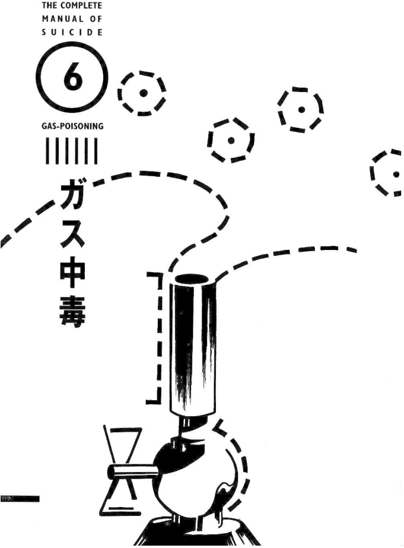
| Pain | ▼▼▽▽▽ |
| Trouble | ▼▼▼▼▼ |
| Ugliness | ▼▽▽▽▽ |
| Ripple | ▼▽▽▽▽ |
| Impact | ▼▽▽▽▽ |
| Lethality | ▼▼▼▽▽ |
Connect a pipe from the car’s exhaust outlet to the car window and block the gap. It is quite time-consuming and laborious, but it can lead to an easy death and the death is not too ugly.
To avoid making mistakes, I want to make it clear that it is impossible to die so happily if you rely on city gas. Turning on the gas switch in a room, then collapsing and drifting into unconsciousness… is a thing of the past. Today’s city gas, because the gas company has changed the gas of the past to natural gas that does not contain carbon monoxide that causes poisoning, poisoning deaths will not occur except in some areas. Liquefied gas also does not contain carbon monoxide. Even if you died, it would just be due to suffocation due to lack of oxygen. The pain felt by death by poisoning and death by lack of oxygen are completely different. Generally speaking, death by poisoning is a relatively comfortable way to die. Gone are the happy 1970s when you could easily poison yourself in your room. However, car exhaust containing carbon monoxide is still deadly. In fact, most of today’s “gas suicides” have been replaced by this exhaust gas.
If you want to use gas or propane gas, you have to be prepared to endure pain that is worse than death. You can suck the gas pipe with your mouth, fill the small room with gas, and eventually die from lack of oxygen. If you are lucky, like the 17-year-old girl, you will suffocate to death the moment the tube is opened. Having said that, some homes are equipped with safety devices that automatically stop discharging after a few hours after a large amount of gas is emitted, and there is also the risk of explosion. Therefore, it is best not to consider gas suicide at home.
If you want to die from lack of oxygen, there is no need to fill the room with gas, just cover your head with a plastic bag. Although it seems a bit primitive, more than a hundred people commit suicide every year using this method. In addition to plastic bags, the effect will be better if other methods such as drugs are used to commit suicide at the same time (Case study 19).
Similarly, although people did not die from poisoning, there were also people who filled the room with gas and set it on fire. This method is simple and suitable for people who commit suicide impulsively. However, although bombing has the effect of killing someone on the spot, in fact there are many cases of people being burned all over their bodies and suffering pain for several days before dying again. This causes great harm to the surroundings, and there is no guarantee whether it will be completed smoothly. Sometimes it will only cause a fire. That’s all, so it’s not worth recommending.
To commit suicide in a car, you must first prepare a three to four meter long rubber tube and tape. The rubber hose should be purchased at the grocery store according to the thickness of the exhaust port. If the thickness is wrong, you can wrap it with a few more layers of tape so that it will neither leak nor fall off. Then connect the rubber tube to the exhaust port and secure it firmly with tape. Then insert the rubber tube through the window and seal the window seam tightly with tape. In this way, the interior of the car becomes sealed. You sit in it, close the door, start the engine, put down the seat, listen to the music played by the speakers in the car, and slowly drift towards permanent sleep.
Be sure to fill up the tank with gas. If your neighbors aren’t paying attention, you can park your car in your own garage, but it’s better to park it in a forest where people can’t see it. It’s also an excellent place to park your car in an out-of-season vacation spot because no one would be snooping around. Or cover it with a car cover so that no one will notice the indicator light of the stereo even if you are listening to music.
When committing suicide in a room, first confirm whether the gas used contains carbon monoxide, and also check whether there is a safety device. The only thing left is to seal the window cracks tightly, whether you die of carbon monoxide poisoning or lack of oxygen, put more tape on the window cracks and door cracks, and when you are ready, turn on the switch and go to sleep.
If you use propane to commit suicide, because propane is heavier than air, you must lie down on the floor. On the contrary, gas is lighter than air, so it is better to use it as high as possible. If you have the courage to put a rubber tube in your mouth, that would be great. Surprisingly, many people use this cutting-off technique. Kawabata Yasunari45, also committed suicide in this way. There are also examples of people who died by stuffing their heads into a gas stove.
The method of covering the head with a plastic bag is foolproof as long as it does not leak. It is also good to tie a rope around the neck.
When committing suicide in a car, carbon monoxide is lighter than air, so the gas sometimes leaks out through the window cracks. If you are discovered during this period, or you may run out of gasoline, I advise you to seal the window cracks tightly. Although death from poisoning is less painful, headaches and nausea will persist if you do not lose consciousness for a long time, so it is better to take sleeping pills at the same time.
The man introduced the gas into the car, blocked the window cracks, blocked the front window with a blanket so that no one could see inside, and then took 60 sleeping pills. He was still awake and alerted the police when he was discovered. Although he shouted “It’s within my rights to die!”, he was still forcibly pulled out of the car. Not all forms of suicide is a slow descent into unconsciousness.
When filling a room with gas, special attention must be paid to explosions. Even the flash of a fluorescent lamp pointer can cause an explosion. If a big explosion occurs, a huge amount of compensation will have to be paid, and there are many cases where people are surrounded by gas but do not die (Case study 18). You should pay attention to the possibility of explosions, just like those people who first put up a note “Turn off the gas switch, open the doors and windows to release the gas, do not use electrical switches and matches due to the risk of explosion.” to make others pay attention, before committing suicide by gas.
When committing suicide with carbon monoxide poisoning in an apartment, also be aware of those living upstairs. In 1976, a 20-year-old woman committed suicide by burning gas in her apartment. She did not die, but a 21-year-old woman who was sleeping upstairs died of carbon monoxide poisoning. This is because carbon monoxide is lighter than air. However, the family members of the deceased pursued the management responsibility of the suicide attempter’s parents, apartment landlord, police and firefighting unit, and sued the court for 20.37 million yen in compensation. Indoor gas suicide should be recognized as the easiest way to cause trouble to other people.
If rescued, suicide by carbon monoxide poisoning, like hanging, will damage the brain’s nerve tissue due to lack of oxygen, which may leave serious sequelae for life. However, the often said phrase “leaving serious lifelong sequelae” is not limited to gas suicides. Hanging, jumping off a building, crashing a car, using drugs, etc., all suicide methods are the same in this. If you want to commit suicide, you must think of the consequences of failure.
Prepare some charcoal and fire, seal yourself in a small space, light the flame, watch the charcoal flame burn a little and then weaken, gradually lose consciousness and then die. Although it is a bit troublesome, the death is beautiful and easy. This suicide method is mentioned in the novel Le Juif Errant (1844), written by the French novelist Eugène Sue, so it is possible that people have committed suicide by this method ever since charcoal was used by humans. The principle of suicide by burning charcoal is the same as that of car gas poisoning mentioned above.
Charcoal-burning suicide is widely spread in Hong Kong, and has spread to mainland China, Taiwan, Japan and other places with the Internet. While the composition of gas and other substances has changed and is unsuitable for suicide, and other suicide methods are difficult to implement, charcoal-burning suicide can be regarded as a simple substitute.
Most people who commit suicide by burning charcoal choose to commit suicide in a single room at home or in a hotel, and the bathroom is favored because of its small size. Generally speaking, there is relatively less oxygen in a small space, and the carbon monoxide concentration will reach lethal concentrations faster when burning charcoal. Generally speaking, bathrooms, carriages and other places with an area less than 6m2 are very suitable, but wooden structures should be avoided as much as possible. On the one hand, wooden structures have more gaps than concrete that are difficult to seal, and wooden structures also increase the risk of fire.
Fire and charcoal should be the easiest to obtain among various suicide tools. Generally speaking, machine-made charcoal and barbecue charcoal are the best choices. They can be purchased in major shopping malls such as Walmart. If you can’t find it, just go to the shops and ask for barbecue equipment. For starting the fire, you can choose from disposable lighters, matches, etc., but you may also need some paper, gasoline or other things to light the charcoal.
Tape is used to seal the environment, but you can also use other things for sealing. Close the doors and windows, and seal all door and window gaps with tape. In the bathroom, be sure to block the exhaust fan opening, and even the gap of the sewer drain, and all cracks in the ceiling.
If possible, taking some alcohol or sleeping pills to put you to sleep can help combat the pain of inhaling carbon monoxide.
Next, prepare the charcoal you bought, use your finally courage to light it, and sit quietly and wait for death to come.
Since you are lighting a fire to burn charcoal, there is bound to be a risk of fire. If you are afraid of harming others, clear the surrounding flammable materials before lighting a fire. Laying a flame-retardant blanket on the ground or using a barbecue grill to burn charcoal are also feasible methods.
Because carbon monoxide is less dense than air, carbon monoxide in the air will tend to float upward. Only by staying seated can you ensure that you inhale enough carbon monoxide.
As the concentration of carbon monoxide in the air increases, breathing rhythm slows, dizziness and heartbeat increase, and soon the person loses consciousness and dies. This is because hemoglobin, which transports oxygen in the blood, combines with carbon monoxide at a strength two hundred or even three hundred times that of oxygen, forming CO-bound hemoglobin, which drastically reduces the oxygen supply to cells in the body. When the concentration of carbon monoxide in the air reaches 35 ppm, it will cause harm to the body.
The concentration of carbon monoxide contained in car exhaust is about 0.4 to 0.5%. When the proportion of CO-bound hemoglobin in the blood reaches 30%, you will first feel dizziness, headache, collapse, fatigue, and reduced judgment. When it reaches 40%, you will feel nauseous, unable to do what you want to do, and feel tired. When it reaches 50%, the skin turns red due to carbon monoxide and hemoglobin, and the body temperature drops. When reaching 60%, shortness of breath, absence of consciousness, incontinence, and convulsions may occur. When reaching 70%, breathing stops and death occurs quickly (see Figure 2). A person who commits suicide by poisoning in a car will fall unconscious in about half an hour to an hour.
Among all the corpses of suicides, people say that the corpses of gas suicides are “the most beautiful.” Your body will be found stained pink because blood containing hemoglobin carbon monoxide gives the skin a pink color. Clothes may become untied during cramps, but that’s okay. However, incontinence often occurs in gas suicides. In the home of a man who died from carbon monoxide poisoning in the bathroom, there was faeces in the kitchen and on the bed. Since there was no feces in the deceased’s rectum, we knew it was his. At that time, carbon monoxide was accidentally produced by heating the bath water when there was no bath water. He could not hold it in the kitchen or the bed, and then he went to the bathroom and died. Generally, incontinence occurs even when someone is conscious. Anyone who wants to see a clean body must go to the toilet beforehand.
In April 1978, a 47-year-old unemployed man who lived in a townhouse in Fukuoka Prefecture attempted to commit suicide by using gas. At around 10 a.m., he fell into hallucinatory symptoms of stimulant poisoning. He was distressed because his mistress had left and thought of committing suicide. He pulled a rubber hose from a propane barrel outside the house to the bathroom, filling the room with gas. But he didn’t die after a long time. Two hours later, when he wanted to smoke and lit a lighter, the gas exploded. The explosion caused a total of 12.4 million yen in damage to the 28 households living in the town house, and injured nine residents. He himself was hospitalized for a month to treat burns.
He was charged with the crime of “gas leakage”, and in February of the following year, the Iizuka Branch of the Fukuoka District Court sentenced him to 8 months in prison for the crime of “injuring multiple people and causing serious consequences.”
This is an example of someone who chooses to commit suicide by using a gas explosion, but since the attempt failed and caused damage to the surrounding area, he was be charged with the crime of “gas leakage”.
Article 118, Paragraph 1 of the Japanese Criminal Code stipulates: “Anyone who causes danger to human life, body or property by leaking or flowing out or blocking gas, electricity or steam shall be sentenced to imprisonment of not more than three years and a fine of not more than 100,000 yen fine.”
A similar example is that in 1976, a 28-year-old company manager in an apartment in Osaka also attempted suicide by using gas indoors, resulting in a big explosion. One apartment was burned down and about 70 others were injured. He prosecuted for the crime of “gas leakage” and “fire from gross negligence”. Even if he is a suicide attempter, he cannot escape legal responsibility.
From the above examples, we can also know that the propane explosion that filled the house for two hours may not have killed anyone, yet it damaged to 28 households, and yet he only suffered injuries that required treatment for a month. The contrast between the lack of personal death and the great property damage is curious.
When the room was full of gas and he was about to die, he lit the lighter because he wanted to smoke. It seemed that he was a fool, but in fact there were many such ridiculous things in this world.
In July 1983, a strange man (46 years old at the time) wearing swimming trunks and immersed in the cold water of the bathtub, with a black plastic garbage bag on his head and a rope around his neck tied to the window sill. The body was discovered. Empty bags containing 40 tablets of the analgesic “SEDES” were found in the apartment where he died. It seems that he took the medicine and then committed suicide in this way. At the same time, I also found the instruction manual Suicide - the most comfortable ways to die published in Japan in the same year in the room46, and clipped a tape to the reference page. On page 184, four combinations of suicide methods that can lead to euthanasia are introduced: “1. Suffocation with analgesics and plastic bags; 2. Poisoning caused by large amounts of drugs that can reach poisoning levels and car exhaust gases; 3. Analgesics and hypothermia (long-term immersion in cold water); 4. Analgesics and drowning.” He committed suicide by choosing a combination of one and three.
He was a salesman at Korakuen Stadium, the predecessor of Tokyo Indoor Stadium. He disappeared a year ago. Later, he left his wife and children and lived as an alcoholic man in a small room. The reason for his disappearance is said to be that he ran away after being chased by his creditors after being in debt.
Suicide by suffocation with a plastic bag is painful, but very simple like this. The analgesic “SEDES”47 cannot reach a lethal dose, but the effect of the drug and the hypothermia caused by cold water are useful in reducing the respiratory function.
The role of suicide manuals cannot be ignored. The original book was published in France in 1982. Soon six people were affected and committed suicide. Therefore, it caused a great response and became a best-selling manual. The part this person refers to comes from the manual issued by the “British Euthanasia Association” on membership restrictions, so the description is correct. Needless to say, this book also draws on some material from that book.
What’s interesting is that he specifically put a tape on so that others could understand that he was “going to die after watching this.” There are also people in France who committed suicide by taking poison after opening the pages of the reference book. The intention of trying to attract the attention of the world through this method is very clear.
In November 1974, an 18-year-old man was found in Kawasaki City. He had suffocated to death in bed with a plastic bag covering his nose and mouth, and then with a rubber band. There are two pieces of 400-word manuscript paper on the desk, which contain the results of testing various suicide methods, with the title “Under Experiment”. It can be seen from this that the young man put a plastic bag over his mouth and suffocated to death during a suicide experiment.
His notes are as follows: “(1) 15 minutes after the experiment started, breathing accelerated and hands and feet were numb. 25 minutes later, the whole body was paralyzed, breathing tripled, and heartbeat 120 times. You can survive for 30 minutes if you stay still in bed. (2) Brain disorder occurs in about one hour, and death occurs in about two hours. Before that, the plastic bag should be removed and the heart should be massaged.”
It seems that someone who commits suicide with a plastic bag goes through the sequence of “suffocation -> numbness of hands and feet -> general paralysis -> rapid heartbeat -> loss of consciousness” and so on until death. So, why didn’t he take off the plastic bag? The possible reasons are: (1) When he was about to suffocate, he hurriedly wanted to take it off, but in his hurry, he unexpectedly fell unconscious quickly. (2) As he slowly loses consciousness, his body becomes paralyzed, and he could not take it off.
If item (2) is correct, then though we have always written that suicide by suffocation is painful, but in fact it might be a quite comfortable method. However, this feeling about dying cannot be tested and can only be known by doctors’ speculation. Therefore, these “death experiments” are also extremely valuable information in medicine.
| Pain | ▼▼▼▽▽ |
| Trouble | ▼▼▼▼▽ |
| Ugliness | ▼▽▽▽▽ |
| Ripple | ▼▽▽▽▽ |
| Impact | ▼▽▽▽▽ |
| Lethality | ▼▽▽▽▽ |
Gentler than generally imagined. The disadvantages are: a few seconds of electric shock, and the trouble of stripping the skin off the wires.
Statistics from Japan’s Ministry of Health and Welfare in 1991 show that among the 19,875 suicides that year, 56 used electrocution, which was the least popular method of suicide. Moreover, the strange thing is that 53 of them were men, accounting for 95% of the total. It can be said that it is a suicide method used almost exclusively by men. It is not because the overall number is low. Even among the statistics of more than 100 people, more than 90% are men. Some people say that it may be because women are particularly afraid of electricity.
Death by electrocution is caused by instantaneous respiratory cessation, cardiac arrest, shock, etc. The pain is really only momentary. One doctor said that suicide by electrocution is one of the comfortable ways to die.
The method is very simple. Peel off one end of the wire to expose the copper wire, plug it in and touch it to your chest or back. For those who are impulsive and want to die, this is the best method. The disadvantage is that there are many attempts, but there are no special sequelae, so it is a good method that you may want to give it another thought.
Sneaking into the substation to touch the high-voltage current part is the easiest way, but it is scary after all. Or connect a wire in your house, stick the two terminals on your body, put on a timer and go to sleep. One copper wire is attached to the chest, and the other is attached to the back. If you don’t want to attach it to the chest, you can attach it to both wrists. A 16-year-old female high school student committed suicide by wrapping a wire around her right thumb and sticking the other wire to her vest. But to do this, the wire should preferably be wrapped around the left thumb, which is closer to the heart. There is also a nuclear scientist who puts one end of the electrode in his mouth and inserts the other end into his anus to commit suicide using a timer. However, how he fell asleep without letting the copper wire fall out of his mouth is still a mystery. Better not imitate this.
Just tape down the copper wire. Wet the part in contact with the body, the resistance will be less, and the effect will be better. Under normal circumstances, the resistance is also a factor that reduces the accuracy. You might as well use wet absorbent cotton or gauze to hold it down from above. You can use salt water when wetting absorbent cotton. If you can get some ointment used for electrocardiograms, the resistance will be less. There are also examples of using 10-yen coins as conductors. Of course, wrapping both copper wires around the chest is the most reliable method. Regardless, the important thing is to keep the heart in the path of the electric current. Use a transformer to increase the voltage, and the lethality will be even higher.
Not many people can still sleep soundly in this situation, so drink some alcohol. Set the timer for the deepest sleeping time, about two hours after going to bed. There are many examples of setting the time at three o’clock in the morning, so this should be the reason. In short, it is most important to reduce the resistance as much as possible and increase the voltage.
Throwing a running electric heater or electric razor into the bathtub while bathing will also conduct electricity, but the reliability is extremely low. If you have to do it, then improve the conductivity by adding some salt to the hot water.
The biggest question here is what is the person’s consciousness like at the moment when the current passes through? Using a timer, if it goes smoothly according to the predetermined plan, a hundred volts of current will pass through the body a few hours after you fall asleep. It causes the heart to contract immediately, and after a few seconds, the patient loses consciousness, stops blood circulation in the heart, and dies. According to a doctor’s observation: Under normal conditions, there will be instant bone-chilling pain. Muscle relaxants are difficult to obtain, so you will inevitably experience muscle spasms. For example, drinking a lot of alcohol or taking sleeping pills can make you confused and confused during sleep, then die peacefully. Although one may lost consciousness at this time, one’s whole body would twitch. There is another way of saying: Losing consciousness only takes a few seconds or an instant, but it takes about three minutes until the heart stops beating.
A man who regained consciousness after being electrocuted said this about the “moment”: “Suddenly I felt controlled by a force and fell unconscious.”
So, will it trip the wire when the current passes the body? The power company believes that “this situation is not impossible.” A coroner said: “So far there doesn’t seem to have been a case where a wire-trip has occurred.” So, there seems to be no need to worry about this.
Since there are death row prisoners who did not die immediately after sitting on the 2,000-volt electric chair, is the 100-volt voltage in the home enough? Some people may feel uneasy. However, it’s not always the case that the higher the voltage, the more lethal.
The resistance of human skin is 1000 to 2000 ohm in a dry state (women have lower impedance than men). The maximum current intensity that can pass through the body in this state is only 100 milliamps. This intensity is the smallest current that can cause ventricular fibrillation, which can stop the heart. Of course, if the skin is wet, the resistance can be reduced by one-tenth. In fact, in low-voltage situations, weak currents can easily cause ventricular fibrillation for the heart, which is actually dangerous. In addition, the most dangerous frequency to the human body is 50 to 60 Hz, which is consistent with the frequency of household current. AC power from the socket is more likely to cause ventricular fibrillation than DC power. This means that if electricity is applied to the heart within three seconds of ventricular fibrillation, a household voltage of 100 volts can completely electrocute a person.
Electrocution in a bathtub, the cause of death was cardiac arrest or shock. Applying electricity to the brain will paralyze the respiratory center and cause breathing to stop, but this is rare.
The parts touched by the electrodes will leave burn marks, but the body will be almost undamaged. The resistance of the skin is low, and sometimes there are no traces of burns. As if in a state of sleep, this is one of the methods that can leave a (relatively speaking) beautiful corpse.
The target is the heart. If you really want to die, other parts won’t work. Be sure to try to get the current through the heart. If you want to use a timer to die in your sleep, don’t forget to secure the copper wire firmly to prevent it from falling off in the blanket. Even if it is wrapped around your body, it will not achieve the purpose if it falls off during sleep.
Even when the person is dead, there would still be an electric current in the body. There is a risk of someone coming over to touch the body and getting an electric shock, so be careful, but there is nothing a suicide can do about this. If you don’t want to cause trouble to others, then put a note saying “Don’t touch, it’s dangerous!”
At six o’clock in the afternoon on an April day in 1981, the body of a man about 50 years old, 160 cm tall, and with an athlete’s hairstyle was found at the Nakayama Racecourse in Funabashi, two hours after the end of the last race of the day. He had connected the wire to the ventilation fan in the toilet and taped the other end to his chest. He was electrocuted and died. His body was already in rigor mortis when he was found. The deceased was wearing a new three-piece suit, a freshly starched blue straight shirt, a blue tie with white spots, a straw-yellow windbreaker, and short black leather boots. He was quite neat. He only had 8,350 yen in cash, short HOPE cigarettes, a 100-yen lighter, and a horse racing newspaper with a suicide note, but the identity of the deceased was never revealed.
He wrote a suicide note written in red pen on the newspaper: “I’m stupid. I failed in life because of horses. I’m sorry! A stupid person. I’m really sorry, I’m too tired!”
This is a good example of how easy it is to commit suicide by electrocution. He probably exposed the copper wire and put it on his chest, then inserted the plug into the socket and his heart was energized, causing cardiac arrest. The famous saying in the suicide note, “Life fails for the sake of horses,” was used as a headline in the social section of the newspaper the next day to report the incident.
Between June and July 1992, a total of five men and women committed suicide every week in Kumatori, Osaka. The first to die was the unemployed boy A (17 years old). It was discovered on June 4th (Thursday). Then on the 10th (Wednesday) Mr. B (18 years old) from the construction industry, on the 17th (Wednesday) the hotel clerk Mr. C (18 years old), and on the 25th (Thursday) Mr. D (22 years old), a civil servant from the neighboring city, hanged himself. suicide. On July 2 (Thursday), E, a female student at Machuchi Sports University, stabbed herself three times in the chest and committed suicide.
Somehow, all of them died on Wednesday or Thursday. The places of suicide are also extremely close, concentrated within a radius of 500 meters. In addition, the first three people were all members of a group of delinquents who formed a Bōsōzoku (Japanese biker gang) a year ago. The motive for all members’ suicides is completely unknown. This series of suicides with unknown motives shocked the whole of Japan. Its level of mystery is comparable to the “Death Guide” incident on Mount Mihara in the history of suicide in Japan.
In the local area, most people believe it was serial homicide. If it is so, it means that there is a murderer who kills one person every week and kills five people in total. When this kind of weird suicide occurs, it will inevitably lead to the theory of homicide. However, it’s best not to believe too much.
The population is said to be less than 40,000, but Kumatori is not a rural town. There is a large bus station building in front of the station, and the commercial street is frequently visited by pedestrians. However, if you take a taxi from the station at the west end of the town and drive east along National Route 170 for ten minutes, you will see the existing rural land on the right. Around here, five people committed suicide. Get out and walk around here. There are woods and farm huts everywhere. The place of suicide is your choice.
Check the place of death of the serial suicide beforehand. It may be a good idea to remember the old friend and think of dying serially. The onion hut and small warehouse where Mr. A and Mr. B committed suicide have been demolished. The chestnut tree where Mr. D hanged himself has also been cut down. Only the farm work hut where Mr. C hanged himself is still there. Summer is also a bit spooky, and a hut with a few beams on the roof is the best place to commit suicide. The location of the suicide scene is shown in Figure 2.
If you want to commit suicide in this town, there is no other option but to hang yourself. When hanging, it is better to use a rope to suit the surrounding atmosphere. It is also interesting to tie yourself behind your back and hang yourself, then lower the rope from a high place to imitate the mystery of serial suicides.49 Perhaps the theory of homicide would rise again in the local area, and maybe you have become a prominent figure in the public media. It is best to not leave a suicide note, to enhance the mystery.
From Osaka, take the JR Loop Line to East Tennoji station, then transfer to the Hanwa Line, which will take you to Kumatoricho Station in 30 minutes.
There are no accommodation facilities in Kumatori. If you arrive at night, or plan to rest for a night before committing suicide, you can go to HOTEL NEWyutaka in Izumisano City, which is only five minutes away from the station. This is a recently built high-end hotel with a nice interior decoration. Single rooms are 6,800 yen and double rooms are 14,000 yen, which are reasonable prices.
If you arrive in Kumatori rashly, you will be confused about the geographical environment. It is best to arrive the day before, check the environment in advance, stay in this hotel, carefully plan the method and decide the location, and then commit suicide the next day.
| Pain | ▼▼▼▼▽ |
| Trouble | ▼▼▽▽▽ |
| Ugliness | ▼▼▼▼▽ |
| Ripple | ▼▼▼▽▽ |
| Impact | ▼▽▽▽▽ |
| Lethality | ▼▼▼▼▽ |
It can be done anywhere as long as there is water. But the moment of suffocation was painful, and the death was miserable. Taken together, it is not a very good way to commit suicide.
Do some people mistakenly believe that people who are good at swimming will not commit suicide by throwing themselves into the water? No matter how good your swimming skills are, you will still drown inexplicably due to “certain effects” that will be explained below. So far, many master swimmers have drowned.
Suicide by drowning is mainly caused by suffocation. Because you have to experience difficulty breathing and suffocation for a few seconds, it cannot be considered a comfortable suicide. Despite this, this ancient and interesting method of suicide has been used both at home and abroad in ancient and modern times. This can also be known from the use of ancient Greek female poets. Now in Japan, the elderly and women are particularly fond of this method. Overall, the utilization rate has declined, but statistics by adoption method every year show that it is still in the top five. The success rate is also as high as 80%, no wonder it is very attractive.
Basically, drowning or drowning is not limited to seas, lakes, rivers, and ponds. It can be done anywhere as long as there is “water”. There is no need to immerse the whole body in the water. There are many people who drowned in ditches after being drunk. There are even “mountain drowners” who died drunkenly on a mountain trail when a heavy rain filled their lungs with water. There are also examples of people committing suicide by putting their heads in a washbasin or washing machine. In Tamagawa Aqueduct, famous for being the spot where the writer Osamu Dazai and his mistress Tomie Yamazaki suicided together by drowning in 1948, a member of the Self-Defense Force drowned in a place with a depth of only 40 centimeters.
The practice of binding the body is a bit primitive, but it is a very effective method. If you tie your feet and hands behind your back and jump into the water, you will drown regardless of whether you are a good swimmer or not. (Of course, even in this case, a smarter person can still float on his back.) However, it is difficult for a person to tie his hands and feet alone. Here is a method that anyone can do. First tie your feet, then tie your left hand (dominant hand or opposite hand) to your left thigh and jump in. If you row the boat into the deep sea or the center of a lake and jump in, it will sink quickly. At this time, putting rocks or other things in your pocket can speed up drowning. If you feel tired after drinking alcohol, you will easily lose your sense of balance. This is very reliable. Taking a large amount of sleeping pills is even more reliable.
If you want to die simply and conveniently, then drive the car into the water. As long as you don’t try to climb out of the car, you will not be saved.
The easier way is to take a large passenger ship and jump into the water halfway, then you will be dragged down by the whirlpool stirred up by the ship. It is said that half of the corpses recovered in the Seto Inland Sea were due to this.
As a place to jump or launch, the sea and lake are more ideal. When choosing, you should choose a coast with few people and fast lakes. Of course, choose the time at night when it is not easy to be discovered.
Dying in the bathroom is also very easy. Fill the bathtub with water, tie your feet, then lie down with your hands tied behind your back and put your head into the water. A certain housewife successfully committed suicide using this method.
A more special method is to fill a fixed gasoline barrel with water. If the water enters the head, you will be unable to escape and drown.
In addition, as a particularly suitable place to drown, it is Naruto’s whirlpool in the Seto Inland Sea. You may be pushed out when you swim toward the whirlpool, but once you are caught in the whirlpool, you will never be able to get out. The fatality rate is 100%.
The best season is winter. When the water temperature is low, people may die from shock or cause heart paralysis, and fatigue will appear quickly, so they can die peacefully. That is to say, there are cases where death is caused not by drowning but by “hypothermia”, that is, freezing. If you want to freeze to death, you must drink some wine or sleeping pills.
Now let’s describe how a swimmer can die by drowning.
It is best to set out at night. If you keep swimming forward, you will follow the current and swim to the deep sea. It doesn’t take long for you to get tired, but you can’t stop. The waves in the open sea were very big, so you’d drink more water, and the water in the trachea would cause severe choking. In the process of repeatedly drinking, spitting, and choking water, water also enters the ear tube connecting the mouth and ears. This is the key. Some people say: “The ears have tympanic membranes, and water should flow into the three semicircular canals.” But the water still flows in from the mouth.
Figure 1 shows the stages of drowning. First, due to the sudden stimulation of the skin, the person will take a deep breath (Phase 1), and then the breathing will stop for 30 seconds to 1 minute (Phase 2). Soon after, due to the increase in carbon dioxide in the blood, there will be intense spasmodic inhalation and expiration for 1 to 3 minutes (stage 3), followed by loss of consciousness for about 1 minute (stage 4), and sinking and death (stage 5). (Excerpted from Small Forensic Medicine Book, published by Kinpodo Publishing)
The water flowing into the ear canal causes piston movement and causes bleeding in the parts covering the three semicircular canals, causing dysfunction of the three semicircular canals through acute poor circulation. If this function is damaged, the sense of balance will be lost, and it will be difficult to distinguish up and down, left, and right. The more you try to inhale, the more water will enter your trachea, causing your throat to spasm. Eventually, you will stop breathing, lose consciousness, and sink to the bottom of the water.
This is generally how it happens when a swimmer drowns. The process of reaching unconsciousness is mostly caused not by suffocation from drinking a lot of water, but by inhaling water into the trachea while choking. In this case, even if you are a good swimmer, you can be confident in committing suicide by drowning. And some people say that when they are about to lose consciousness, past memories will emerge as clearly as lightning, just like the wonderful experiences introduced in the chapters on hanging and leaping.
After losing consciousness, you first exhale water, and then inhale water into lungs. Breathing stops and you die. It takes about one to three minutes from the onset of coughing to loss of consciousness. I was told that death occurs after four to five minutes for fresh water, eight to twelve minutes for sea water, and twenty minutes to half an hour for cardiac arrest.50 Having said that, it is difficult to save someone who has been in the water for more than two minutes.
The corpse may surface a few days later. Its body and face would be so swollen that even its parents could not recognize it (professionals described it as “giant-like”52). The skin would be peeling off and the scrotum swollen like balloons, with moss growing on the body. There would be some shark bites and ship propellers cuts. The flesh would look like they had been nibbled by fish, crabs, etc.
Of the corpses that had once sunken to the bottom of the water, 20 to 30% would soon surface. Bodies, once retrieved from the water back to the land, will spit out a large number of small bubbles from their mouths and noses. If the body does not float up quickly, it will take two or three days in summer and two or three months in winter because of the putrefactive gas produced in the body (see Figure 2). The buoyancy of putrefactive gas is so great that there was once a corpse tied with a weight of nearly ten kilograms that floated to the surface anyway. However, when the sinking depth reaches more than 30 to 40 meters, due to the low temperature of the water, the putrefactive gas cannot accumulate, and the water pressure compresses the gas, so most of the corpses will not float up.
Furthermore, Cape Ashizuri, the southernmost tip of Shikoku, is a popular suicide spot where the body will never float. Those who refuse to have their corpses discovered may wish to choose a place with deep water, such as Cape Ashizuri.
When you plunge into the sea or lakes, be sure not to be seen. Especially when jumping into the sea, it will cause them to dispatch expensive coastal rescue troops.
People who can swim may also commit suicide in this way, but it is undeniable that this method is more for those who cannot swim and the elderly. In fact, men in their 20s and 30s rarely commit suicide by drowning. Even if you make up your mind and jump into the water, you still have to swim a few times, and there are many cases of being rescued during the splash. People who can swim better choose other methods.
In 1944, Lupe Vélez, a has-been Hollywood star, drowned her head in the toilet.
She was born María Vélez, in Mexico, in 1908. She longed to be a famous actress. When she was ten years old, she left Mexico City and came to Hollywood, where she played the heroine in the movie The Gaucho (1927). Later, she climbed to the pinnacle of Hollywood fame, dated many famous actors, and lived a luxurious life. Due to her willful and jealous character, there were divorces and scandals. Because of these scandals, her reputation declined, and soon she fell to the level of R-rated comedy movies. But unable to forget her past glory, she took on debts that were difficult to repay and lived a luxurious life. In the end, she became pregnant with the child of Harald Ramond, a young Austrian actor, and was asked to abort it. She was extremely frustrated and, as described in her suicide note, “I prefer to take my life away and our baby’s, before I bring him with shame or killing him. How could you Harald, fake such great love for me and our baby when all the time you didn’t want us. I see no other way out for me, so goodbye and good luck to you.”
She decided to commit suicide and invited many friends to attend the luxurious banquet with dozens of large candles, which she held with borrowed money. She took a handful of sleeping pills and slept in bed that night. However, she vomited in the middle of the night and was unable to breathe. In extreme pain, she crawled to the bathroom, stuck her face into the toilet and drowned.
Having become a corpse, she no longer looks like the screen beauty she once was, but her face is peaceful. She once said her best friend, Estelle Taylor, “People think I like to fight. I have to fight for everything. I’m so tired of it all. Ever since I was a baby I’ve been fighting.”
A small amount of water in the toilet can kill someone. This is an example that proves that people can drown anywhere. At the same time, this example also allows us to see a typical failure example of suicide with drugs. Even so, it seems very extreme for a depressed actress to end her life in the toilet.
A seventeen-year-old American girl went swimming in the lake with her brother one day. There were many young people swimming in the lake. Someone shouted: “Swim to the other side!”, so everyone started to swim to the other side. The girl had made the crossing several times before, but this time she nearly drowned.
The girl was rescued, and later she talked about the experience: “I was half-sinking and half-floating. Suddenly I felt like I was separated from my body, sitting alone in a void. I was there, motionless, but my body was floating in the water three or four feet in front of me. I saw my body from the right side and from behind. Even though my body was some distance away, I still felt that I had a complete body. My body… I felt very relaxed, as if I had turned into a feather.”
It’s not a suicide, but it talks about a near-death experience that happens when one is about to drown. This situation is a relaxing experience when one’s consciousness separates from the body and watches one’s own soul escape and the body become like a feather. Moreover, it is worth noting that no matter how many times an expert swimmer has crossed the lake, he sometimes drowns “for unknown reasons”53.
| Pain | ▼▼▼▼▼ |
| Trouble | ▼▼▼▽▽ |
| Ugliness | ▼▼▼▼▽ |
| Ripple | ▼▼▽▽▽ |
| Impact | ▼▼▼▼▼ |
| Lethality | ▼▼▼▼▼ |
Has the strongest impact on others, can definitely kill you, and it can also burn your name into the history books. However, the pain is also the most intense and the death is miserable. There are many cases where people with 100% skin burns did not die immediately and were sent to the hospital, where they struggled for a long time before dying. The consequences of not dying are more tragic than any other means of suicide. For those who want to die an ordinary death, I will never advise them to adopt this method. However, if you want to accuse this society of something with your death, there is no way more dramatic than self-immolation. Thích Quảng Đức, the Vietnamese monk who protested the government in the Vietnam War, the students who recently committed suicide for the anti-government movement in South Korea,54 and the cadre of the Kamagasaki Joint Struggle Committee in Japan who fought to improve the treatment of the grassroots working class,55 they all committed suicide by self-immolation and caught the attention of society. Yes, the image of being surrounded by flames and shouting his opinions is very influential.
There is nothing better than using self-immolation to express strong will and determination to die. The seven female believers who committed mass suicide following the late leader of the “Friends of Truth”56 in 1986 also committed suicide by setting themselves on fire.
Some people may think that not too many people commit suicide by self-immolation, but the number is increasing every year. Currently, there are about 700 people a year, which is much more than committing suicide by electrocution. According to current medical diagnosis standards, one-third of all suicides are considered to be mentally ill in the “narrow sense”, and the majority of those who attempt self-immolation are considered to be mentally ill.
Needless to say, this method requires gasoline or kerosene, but how many liters?
Burning 20% of the skin on the whole body would already be a lot for the body to take, but in order to die for certain, the only way is to pour gasoline all over the body. Although there are examples of using two or three liters of kerosene to completely burn off the skin, for the sake of safety, it is better to prepare at least five liters.
Gasoline and kerosene can be poured on little by little, and the clothes would soak in to be fully flammable. If kerosene gets into your eyes, it will be very painful and you will be unable to open them. However, if you would be bothered by this consideration, you are definitely not the kind of person who can commit suicide by self-immolation.
If you are afraid of starting a fire, you can put down a flame-retardant carpet so that even if you lie down and burn indoors, it will not cause a fire. There was also a 48-year-old housewife who doused her in gasoline and went inside an incinerator, but this was totally unnecessary, and only became good gossip material for Women’s Weekly magazine.
After dousing yourself with gasoline, you can use a lighter or a match to light the fire of destiny. Anyone planning to make a statement should have it firmly in mind beforehand, lest they panic and forget it all.
There are also many people who pour gasoline indoors and burn the entire house down. But this method is strictly worse than the others. If you are going to suffer the extreme agony of burning to death, you should let people see that it is you who are burning. Having others see you burn is the entire point of self-immolation.
The flames is much stronger than one imagines. Once gasoline or kerosene is ignited, it will make a sound and suddenly burst into flames two to three meters high. The body shrouded in flames will experience severe pain and burning sensation, and will roll on the ground because it is unbearable. There will be a stink of burning human flesh all around. But generally the perception is still clear. The trachea was burned due to inhalation of hot air, but the sound could still come out. After the clothes were completely burned, the fire was extinguished, but some people could still stand there on their own and continue to shout (Case study 24).
After the fire is out, if more than one-third of the skin is necrotic, nearly half of the people will die. If more than two-thirds of the skin is necrotic, almost all people will die without exception. The time of death varies. If the skin of the whole body is burned as black as charcoal, the person will die on the spot. After the fire is extinguished, they will be taken to the hospital in an ambulance. The body cannot move, so they will greet the arrival of death in pain. . Some finally breathed their last after half a day or one day, or even five or ten days. An 82-year-old American woman who set herself on fire while shouting “against the Vietnam War” lived consciously for ten days. Her problem was probably caused by alcohol-based detergent that didn’t burn well.
Causes of death caused by self-immolation include shock, hypoxia, and thermal coagulation of vital organs.
The corpse would be in a miserable condition, second only to suicide by lying on the railway.
Pouring more than five liters of gasoline and lighting it on fire. When no one puts out the fire, part or all of the skin surface will be carbonized and all the hair will be burned out. The skin peeled off, revealing red flesh. Originally, the human body is basically made of water, so even if the skin is carbonized, the meat is difficult to burn. The characteristic of this posture is that it becomes a boxing posture due to muscle contraction. Blisters appear on the skin that has not yet become necrotic, and the color changes from yellow to brown, and finally to black. The corneas are white and turbid, and the tongue is often stuck out.
The most terrifying thing is to leave a life behind, but continue to live with burn marks on the face or body.
A woman poured kerosene all over her body and lit a match but failed to commit suicide. After three years of living in a hospital bed, her body was covered with keloids. Even though she underwent five plastic surgeries, the keloids were not eliminated. She had no lips and could not open her mouth wide. Moreover, compared with other methods, where people who have attempted suicide would attempt again, self-immolation suicide attempters typically do not attempt suicide again. The may be because they have recovered from the near-death state by using extreme methods and have gained emotional balance. Still, the skin transplantation will cost a huge amount of money. In order not to get to this point, pour at least five liters of gasoline. If someone comes to put out the fire, shout: “Don’t come close!” Even so, if you are still worried about the attempt, you can use it together with other methods.
A man killed a woman who cheated on him (24 years old), ran to the top of the tenth floor of his alma mater university, doused himself with gasoline and jumped off the building. However, there is absolutely no need to try this hard. Self-immolation is already a very lethal method.
All in all, self-immolation is painful. But remember, death won’t happen immediately. Everyone has their own preferred method of death. If one wants to die quietly, I would suggest another method. However, if you think you have lived as a nobody but want to die as somebody, then that’s up to you.
In November 1970, Jeon Tae-il (전태일), a young tailor (then 22 years old) who was working under poor working conditions, set himself on fire in Seoul Peace Market (서울평화시장; Seoul Pyeonghwa Sijang), demanding better working conditions.
Before that, he had been engaged in a movement to improve labor conditions, but suffered setbacks. Finally, on November 3, he forcibly launched a demonstration – which he applied for, but could not get permission for – in the Seoul Peace Market. When the workers were participating in the demonstration, the guards, and the police When there was a fierce conflict between the troops, he appeared in the market later than his companions and asked his companions to “light a match and throw it at me.” When the match was thrown on him, his whole body immediately became a pillar of fire, then a ball of fire. He breathed the flames and squeezed into the crowd, shouting: “Abide by the Basic Labor Law! We are not machines! Give me back my Sunday! Oppose the cruel driving of workers!”, and finally fell down with a scream. But he stood up with difficulty and shouted: “Don’t let me die in vain!”. His eyes and nose were burned and blurred. He fell unconscious and his companions put out the fire three minutes later. After being sent to the medical center, he muttered: “I’m a little hungry!” Nine hours later, at around 10 o’clock in the evening, he died.
His suicide by self-immolation was later named the “Manifesto of Humanity”, which is still circulated today.
Although the fire was extinguished three minutes after losing consciousness, and he died from severe burns nine hours later, it was possible to scream continuously, and as long as he had the strength to fall down once, he could still stand up and shout. Of course, it varies from person to person. When he turned into a ball of fire, though he stumbled around due to the heat, he was otherwise very conscious.
This can be said to be the most effective example of self-immolation and suicide. His suicide did have a great effect, and it fulfilled his wish for him who died.
A twelve-year-old middle school girl committed suicide by setting herself on fire in the yard of her uncle’s house. Her parents divorced shortly after she was born and she lost her mother. She was raised by her grandmother. Due to her father’s work, she transferred to elementary school and middle school twice. She grew up in a very complicated family environment. The reason her parents divorced was because her mother had a sexual relationship with her uncle.
However, the reasons that prompted her to commit suicide were more complicated. She also had sexual relations with her grandfather and father. She had always been troubled by this, and she was still in her first year of middle school at the time, and she began to miss school for a long time two months before the summer vacation. Finally, one day just after noon, she went to the backyard of her uncle’s house, which was the cause of her parents’ divorce, poured gasoline all over her body, and committed suicide by setting herself on fire.
She often played volleyball in school and gave the impression of an ordinary student.
A shocking example of a twelve-year-old girl setting herself on fire, but the first thing to note is the place of death. Her hatred for her uncle may be quite large, so going to her uncle’s backyard to turn into a fireball is also very effective in arousing her desire for revenge. It is even more surprising that a twelve-year-old girl has sexual relations with her grandfather and father. It is so terrible! She herself probably felt that committing suicide to vent her fear, resentment, and despair required a conspicuous method, not methods such as jumping off a building or crashing into a car. In this case, self-immolation is most appropriate. However, she was absent from school for two months before the summer vacation. That means she only went to school in April and May. So what happened when she transferred schools twice during this period? From the source material, I still can’t figure it out, could there be a more complicated hidden secret!?
| Pain | ▼▼▽▽▽ |
| Trouble | ▼▼▼▼▼ |
| Ugliness | ▼▼▼▽▽ |
| Ripple | ▼▽▽▽▽ |
| Impact | ▼▽▽▽▽ |
| Lethality | ▼▼▼▽▽ |
If you can find a good location, it’s easy. However, be aware that it is possible that after a large-scale search, you will be rescued, but your hands and feet will be frozen and must be amputated.
Freezing to death is probably as comfortable as hanging yourself. Hearing something like this, you may question its authenticity, but this is what the survivors said, so you have to believe it.
Even so, the number of people who use freezing as a means of suicide is definitely in the minority, and statistically they are also classified in the “other” category. Perhaps it is because it is too troublesome to go to the snowy mountains. But freezing to death is not a phenomenon that only occurs in snowy mountains and cold areas. As long as the conditions are right, people can freeze to death in rooms. Of course, the temperature does not have to be below freezing. Reports show that in fact, more than a dozen people freeze to death in Tokyo every year, and there are also cases in warmer places. Newspapers often report on homeless people freezing to death. For homeless people in Tokyo and Osaka, surviving the cold winter is a very practical wish.
All of this is just a lot of useless theory. After all, no one wants to freeze to death in a room, and I have never heard of someone committing suicide by freezing to death in a room. In the United States, some people commit suicide by freezing to death in a refrigerator. This can only be regarded as an exception. If you want to freeze to death, although it is troublesome, it is better to go to the snowy mountains. This method has many advantages. How can it make up for the trouble!? It will be introduced in detail below, such as no damage to the body and less pain.
A person’s tolerance to cold is an important factor, so this method of suicide is not suitable for people who are too tolerant of the cold.
If you want to go to the snowy mountains, first buy a guide book for a cold mountain retreat to understand the situation. Even without mountain climbing experience or physical strength, anyone can go to places that are cold enough to freeze to death. When you go skiing, go to places that are rarely visited. You might even be able to find a suitable place next to the ski practice area. Of course, those who enjoy mountaineering can decide the route and location very thoughtfully.
Things you need to bring: sedatives, painkillers and other drugs that can stabilize your mood and help you fall asleep, as well as alcohol available at pharmacies. Although drinking alcohol can raise your body temperature, drinking to overcome pain is also allowed. Anyway, it is difficult to resist the cold outside in the snow. If you take off your clothes, you can die in one night, but it is a bit difficult, so you should find a place where others can’t find it for at least two or three days. If you can fall asleep, that would be even better.
If you really want to die in your room, you have to choose a day in the middle of winter. You also have to look at the weather forecast and choose the coldest night. In addition, you must make some preparations to cool down your body: pour water on your whole body while being naked, then face the electric fan and air conditioner, and open the windows and refrigerator. It also requires fasting, lack of sleep and fatigue, otherwise it will be difficult to achieve. If you drink some wine beforehand, it will dilate the blood vessels on the surface of the body, quickly lower the body temperature, and has the effect of hastening death. Of course, some patience is also required, which is also the patience to wait for sleep to come.
Ways to freeze to death on the streets: Wear wet clothes to secluded parks, open spaces and woods at night. In order to avoid people’s suspicion, you can also bring a water bottle and pour it on when you decide on the spot. Try to choose a cement floor that dissipates heat quickly, but the most important thing is to keep it out of sight.
When the temperature is 5 °C, with no wind, half-naked, and with an empty stomach, people can freeze to death in a day. There are also examples of drunken people, who, returning home, fell asleep on the side of the road and froze to death at nights as cold as 5 °C.
In water, when the temperature is 15 °C, the risk of freezing to death is already significant. If the water temperature is 5 °C, you will die after being immersed for several hours. Moreover, such water temperatures can sometimes cause cardiac arrest in an instant. A 43-year-old housewife, who sent letters announcing her suicide to the editorial offices of newspapers and magazines, froze to death in the middle of winter, while sitting in a roadside park pond in Muroran City.
Whether you crawl into a snowdrift or strip naked in your room, the process of dying is the same.
At first, the whole body will shiver. When the rectal temperature reaches 35 °C, fatigue, lethargy and drowsiness will occur. The famous slang phrase “You’ll die if you sleep on it!” even children say refers to this situation. When the body temperature drops to 34 or 33 °C, the ability to think gradually weakens, the consciousness is blurred, and it will be enveloped by a “sweet trance”. When the temperature reaches 30 to 23 °C, they lose consciousness until death. When it drops below 25 °C, death is certain, so it’s a much more refreshing death than one might have imagined.
Regarding this sweet trance, someone who survived such a suicide attempt said: “With shortness of breath, there is a kind of… delirium…” In addition, a scholar’s report obtained from an interview contained the following description: “Thousands of dazzling rays of light shone before her eyes, and the roar of thousands of cannons rang in her ears. She felt a sharp pain in her feet, as if she were running on a needle mountain, and soon drowsiness came. The calm weariness of a person kept emerging, and it seemed that she was liberated from the worries and disasters of the world. The air was fresh, like a spring breeze, and beautiful music sounded in her ears again. She leaned against the soft fur pillow as if taking a nap, all kinds of colorful lights were shining again, and she soon became unconscious. She only regained consciousness after being rescued.”
Some survivor also said: “I had a dream of dancing wildly at a grand banquet.”
Based on the above reports, it can be said that, like committing suicide by jumping off a building, freezing to death is a completely painless method of suicide except for the initial coldness.
Bodies that freeze to death in snowy mountains are the same as those that commit suicide by gas. They are sometimes described as “the most beautiful way to die”, but this varies depending on the time of discovery. If the body is frozen and preserved due to snow, the skin will appear translucent white, due to the total contraction of capillaries near the body surface. However, when the spring snow melts, the corpse will rot. The livor mortis are red, because oxygen combines with hemoglobin in the blood to turn into pink oxidized hemoglobin.
In places such as snow-capped mountains, sometimes the tips of the hands and toes may have edema due to frostbite. Occasionally, a person may become insane and take off their clothes and be discovered as a naked corpse. There are also many corpses torn apart by wild animals (Case study 26). So in this way, it cannot be said to be very beautiful.
No matter where you decide to die, the most important thing is to not be found halfway. In snowy mountains, if your hands and feet are partially frozen and rescued, they may need to be amputated. However, necrosis will not occur unless the temperature drops below freezing.
In addition, in the case of suicide in the snowy mountains, huge search costs will be incurred when family members and friends find out and request a search. Therefore, you must do some tricks in advance. For example, don’t leave a suicide note hinting your whereabouts. Make a recorded voice mail text (“leave your message after the beep”) as if you are leaving home on a standard trip.
If you really want to commit suicide, it is better to go to the snowy mountains. To freeze to death in a room or on the roadside is quite difficult, requiring all the right conditions to be in place, and it must be difficult for you to be discovered.
In June 1981, the skeletal body of a woman was discovered at the 5th station of Mount Kurodake in Daisetsuzan Mountains, Ishikari Mountains, central Hokkaido. The location was in a primeval forest about 300 meters above the mountain. This female writer was Keiko Sugie (杉江慧子) (47 years old at the time) who had participated in the production of Seven Detectives 57.
Bones were scattered everywhere at the scene, and only the skull, right thigh and calf bones were found. In winter, foxes, wild rats and other wild animals appear frequently in this area, and there are traces of being bitten by animals. They must have been enjoyed by these animals in winter! Near the body was a bottle of sleeping pills with remaining pills inside. It is estimated that the amount of sleeping pills taken did not reach a fatal amount. There was also a large bottle of whiskey in the bag, with about 80% left. The date of the ticket found among her belongings was October 24, 1980, the year before last. It is believed that she traveled from Tokyo, where she lived, to the sparsely populated snowy mountains in winter, walked from the station into the primeval forest, took sleeping pills, fell asleep, and froze to death.
Keiko Sugie started writing plays about five years ago. She was very worried about not being able to get ahead, and at the same time she was panicking about her growing age. Although there were several lines of scrawled writing on the remaining manuscript, the ink was soaked in water and could not be read. As a result, the motive for her suicide was never clear.
This is a typical snow-capped mountain suicide after taking sleeping pills and falling asleep in the snow. However, the remains were horrific and not the most beautiful. If you commit suicide in the snowy mountains, the body will turn into bones after ten months, and you must also be careful about attacks by wild animals.
In addition, when committing suicide by freezing to death in the snowy mountains, it is necessary to do some field research in advance. Sugie wrote some of the script of “Saturday Night at the Mysteries” (TV Asahi)58 that has become a posthumous work, which is set in Hokkaido, so she has a lot of knowledge about the local area, so she had done her research.
If choosing a place to commit suicide is too troublesome, I would advise you to take the same route as she did. To be cautious, let me introduce the method to get to Kurodake. First go to Asahikawa, and then take a two-hour ride from Asahikawa to Sounkyo Hot Spring. Then take the cable car, turn to the snow track at the cable car transfer point, and enter the virgin forest (see Figure 2).
If you want to imitate the way she died, you can buy some sleeping pills and sedatives that are available on the market as described in Chapter 1. It would also be a good idea to bring a large bottle of wine. Even if the body parts would end up scattered, at least you will be dead before that happens.
There are many ways to commit suicide besides those introduced above. For example, suicide by gun, which is hard to obtain in Japan, is not described in detail here.
Movies and TV often show scenes of pointing a gun between the eyebrows or temples and pulling the trigger, which seems to be a typical method of committing suicide with a gun. However, this method of pulling the trigger is not recommended. Since the skull is much harder than one may imagine, if the angle is wrong, the bullet may bounce away. Even if it penetrates, the bullet will shatter, and the fragments will damage the brain in the skull, and then turn around and escape from the eyes or the other side, a failed attempt. If you want to use a gun, hold it in your mouth and shoot through the medulla oblongata of the back of the brain. This is the correct way.
In this chapter, let’s learn about these other methods of suicide based on case studies.
| Pain | ▼▼▼▼▽ |
| Trouble | ▼▽▽▽▽ |
| Ugliness | ▼▼▼▽▽ |
| Ripple | ▼▽▽▽▽ |
| Impact | ▼▼▽▽▽ |
| Lethality | ▼▽▽▽▽ |
In August 1985, the decomposed bodies of two women were found in a room in Toei apartment complex (都営団地), Adachi Ward (足立区), Tokyo. This is a pair of sisters aged 25 and 23. The cause of death was starvation. The estimated time of death is from the end of 1984 to around February 1985. Next to the body, there is an old envelope with the words “I’ll show you that I die.” written by my sister.
The older sister struggled to pay the medical expenses of her mother and younger sister as well as the debts left by her father. Her positive and serious work attitude was well received by her workplace, but her monthly salary of 110,000 yen was insufficient for repaying the debt, so she had to borrow money. Soon the amount of the loan reached 3 million yen, and debt collection calls were made to the workplace. Even so, she still works diligently. The younger sister moved to this place with her parents and younger sister in 1965. Her mother was sick and her father was away from home for many years, so she had a monthly living allowance of 110,000 yen. My younger sister, who was already a bit schizophrenic, was often bullied after she entered middle school and often did not go to school. My older sister took care of her mother’s illness while encouraging her younger sister. She also entered a vocational high school for commerce59. However, when he was a senior in high school, his father came back with a large debt and died of cancer the following year. At this time, my sister suffered from hyperthyroidism again, and my sister’s living allowance was canceled due to her employment.
Her mother finally died of illness in 1983. However, her relatives did not allow her to take back the ashes. From about this time, the older sister also became tired of life. She placed garbage bags randomly on the balcony, received constant phone calls for debt collection, and began to miss work in June 1984. She was finally fired in September. Moreover, in September, the electricity and gas were cut off due to failure to pay on time, and in January of the following year, the tap water was also cut off. Debt collectors came to the house for days, so the two of them had to pretend to go out instead of taking out the trash. In October, they went to the neighbors to ask for food. Some days later, the neighbors came to them, worried, but they replied: “Don’t worry about us anymore!”. In fact, the idea of committing suicide might had then been firmly established at this time. There is a local welfare office near the apartment complex, but they had never gone there to talk.
Probably the elder sister died after the younger sister. In the spring, due to the infestation of flies and the overwhelming stench, they were discovered. At that time, the younger sister was wearing a T-shirt and trousers and cuddled up against her elder sister. For some reason, the elder sister was naked, with upper body covered with a cardigan, and lower body uncovered.
The room was filled with garbage, bedding and clothes. There were also some magazines such as Pia60, Seventeen61, and novels by Akagawa Jirou62. On the wall are large posters of Yumiko Ōshima63 and the fantasy comic The Star of Cottonland64.
This is a staggering misfortune. Starving to death is a method that one would only choose after suffering all the hardships that life can give. Because they were so exhausted that they no longer had the strength to even commit suicide.
Although there are great differences between people, as long as you don’t drink water, you will die in one to two weeks, and if you only drink water, you will starve to death in thirty to forty days. Energy storage is also a big factor. The sisters were a little obese and probably took longer to die than the average person.
All four members of this family have their own misfortunes, but the elder sister’s misfortune is the most tragic. Her mother’s illness, her father’s debts, her younger sister’s bullying and illness, all the misfortunes fell on her shoulders. No matter how hard she tried, she got no reward. Rather, the harder she tried, the worse the situation became.
Her life seemed to be at a crossroads of whether to commit suicide or not. Of course, it was possible for her to live, but she refused help and chose death. Faced with this kind of life, are there still people who would say such stupid things as “good things will happen only if you live”, “you can do anything if you can die”, “suicide is only for the weak”? To her “I’ll show you that I die.”, such people would have nothing to say in reply.
Some people say starvation is the best way to commit suicide. “Compared with other suicide methods, starving to death requires a lot of patience and perseverance. Even if you suddenly don’t want to die, there will be no sequelae and you can recover quickly.” We don’t know if this is the case, though we can guess that the person who said this must have had some experience with this.
| Pain | ▼▼▼▼▽ |
| Trouble | ▼▼▼▼▼ |
| Ugliness | ▼▼▽▽▽ |
| Ripple | ▼▽▽▽▽ |
| Impact | ▼▼▼▽▽ |
| Lethality | ▼▼▼▽▽ |
In November 1988, a man’s skeletal body was discovered in the Tottori Sand Dunes65. At around one o’clock that afternoon, a local old man who was walking in an almost deserted place far away from the tourist routes found a skull slightly exposed in the sand. After calling the police, he unearthed a small shovel in his left hand, squatting as if holding it against his chest. Bodies in the sandpit.
This man was a missing person in 1974, that is, fourteen years ago, due to a lovelorn relationship and illness. He was thirty-two years old at the time. One night he came to the sand dune, dug a hole about one meter deep on the slope of the dune with a shovel, squatted in, piled sand on himself with his hands, and then buried his head in the sand and suffocated to death.
A suicide note his parents received after his disappearance read: “Don’t bother searching. It would be for nothing.”
This is a thorough example of someone determined to erase himself from society.
Tottori Sand Dunes is a secret place in Japan that is as famous as the Aokigahara, but committing suicide by burying yourself alive in the quicksand of suffocation is extremely painful. Undiscovered for fourteen years, his goal can be said to have been achieved, but it is not a recommended method. Because there are still many ways to commit suicide without the body being discoverable.
| Pain | ▼▼▼▼▽ |
| Trouble | ▼▼▽▽▽ |
| Ugliness | ▼▼▼▼▽ |
| Ripple | ▼▼▽▽▽ |
| Impact | ▼▼▼▼▽ |
| Lethality | ▼▼▼▼▽ |
At about seven o’clock in the evening in February 1989, a 67-year-old housewife rushed towards the Aso Bear Ranch in the Zodiac Garden in Aso Town, Kumamoto Prefecture66, about an hour and a half away from her home, and jumped into the bear cub pen.
The keeper who heard the loud “pop” sound rushed over and saw only the bear shed 2.5 meters away from the fence. Sixty-eight bears were huddled together, like a small black mountain. After using a fire extinguisher to disperse the bear, a human body emerged from the white powder. The body had been torn apart by the cubs, the internal organs were completely missing, a large hole was opened from the stomach to the intestines, and there were several bite marks on the hands, feet and other parts of the body. Her clothes were torn into pieces, as if she were naked.
She was a devout Buddhist, and she has previously spoke of things like, “she will fall into the world of demons”, “people die but their souls live forever”, etc. When she left home that afternoon, she said, “They told me to go into that world.” She also left a suicide note for her husband. Her neighbors also thought she was a weird person.
Some people said that this woman had said before, “I want to be eaten by a tiger.”67 She also had thought about the tiger cage next to the bear shed, but because she could not get past the iron fence, she jumped into the bear shed.
Committing suicide by being eaten by animals is an unexpected method. However, the motivation is a bit religious, and the way of death is too unrealistic, so it cannot be used as a reference for suicide methods. Moreover, this method is very painful, the corpse is horrible, and the reliability of death is not high, so I don’t want to advise people to use it.
| Pain | ▼▽▽▽▽ |
| Trouble | ▼▼▼▼▼ |
| Ugliness | ▼▽▽▽▽ |
| Ripple | ▼▽▽▽▽ |
| Impact | ▼▼▼▽▽ |
| Lethality | ▼▼▼▼▼ |
American pathologist Dr. Jack Kevorkian is famous for developing a unique suicide device “Thanatron”. This device is a 30-centimeter-high design that contains physiological saline solution, Pentothal, and potassium chloride in three bottles that are hung upside down. Pentothal is an anesthetic used during surgery, and potassium chloride is a powerful drug used in poisoning and execution. Its structure is that after the suicide volunteer presses the button, the timer starts, and the saline water automatically changes to Pentothal. One minute later, the potassium chloride begins to flow into the body.
The person who committed suicide using this device in June 1990 was American housewife Janet Adkins (54 years old at the time). When she was diagnosed with Alzheimer’s disease in 1989 and planned to commit suicide, she heard about Dr. Kevorkian’s suicide device and got in touch. Dr. Kevorkian prepared a white German Volkswagen van and searched for a campground suitable for suicide. In June 1990, she and the doctor got into a car and drove to the park. She hid behind the car. The doctor first inserted the needle into the vein and injected the salt solution. When the doctor adjusted the flow, Janet pressed the button. The injection solution changed to Pentothal, and she fell asleep twenty seconds later, and then Pentothal was switched to potassium chloride. After forty seconds, her face turned red, and after another thirty seconds, it turned blue, and soon red spots appear. The electrocardiogram had completely become a straight line after five minutes and thirty seconds. In fact, her heart had stopped beating before that.
Janet was an English teacher and a serious woman with a passion for classical music, traits substantially affected by her Alzheimer’s disease.
This is the “assisted suicide incident” that has sparked a debate on the right of dying with dignity across the United States.
At present, if you want to die completely reliably and safely, you have no other choice but to rely on Dr. Kevorkian’s help. He also used this device to cause two women to commit suicide in October 1991, and there was an endless stream of people who came to him for consultation. He was able to use the device because the state of Michigan, where he lives, does not criminalize assisted suicide. In Japan, the criminal law clearly stipulates the crime of assisted suicide. That’s why Janet went all the way from Oregon to Michigan.
There is no pain other than the poke of the needle, and you can die in your sleep, whether others see it or not. If you don’t want to die in your room and are willing to go to the United States, you may wish to get in touch with the doctor. However, it is unclear whether he would be willing to use this device on people who are not suffering from terminal illnesses.
Japan also has a Japan Death with Dignity Association (日本尊厳死協会), but it only recognizes the right to die for terminally ill cancer patients who cannot be cured with current medical technology and is unwilling to take wasteful life-prolonging measures. It is opposed to euthanasia for the general public.
The contact address for the Japan Death with Dignity Association is as follows: 2nd Floor, Watanabe Building, 2-29-1 Hongo, Kyoto-dori, Tokyo, Postal Code: 113, Tel: 03-3818-6563.
In October 1971, a 56-year-old man was found to have committed suicide by gas poisoning in a room of an apartment.
According to the investigation, the man signed up for insurance from three companies “Yasuda Life”, “Daiichi Life” and “Daihyaku Mutual Life” from May to July, two years before his suicide. Family members can receive 72.6 million yen.
Before his death, he told people, “I want to leave the insurance money for my children when I die.”
This man had suffered from tuberculosis for four years. Later, he became passionate about keirin cycling betting68, and his family was financially ruined. He caused great misfortune to his family and he felt ashamed and distressed. He was living away from his family when he committed suicide.
While working for a real estate company, he also took on side jobs as a bowling alley night guard and a life insurance salesman. He even borrowed money from relatives and friends to pay insurance premiums totaling 5.5 million yen.
According to colleagues at the real estate company, he was usually an honest kind of person, and seemed to not be a person who would do this kind of thing.
If it is a suicide using gas poisoning, the person who wants to commit suicide should also know something about life insurance; that’s why I introduced this example. Life insurance benefits, even if the cause of death is suicide, will not be paid until one year after purchase. Moreover, the earlier the insurance money is collected, the more advantageous it is, so it is better to die immediately after one year after signing the contract. However, there is probably no one other than this man who would plan a suicide using such considerations.
The historical information is of great reference value for understanding the where and the how, so I summarize it.
First, classification by method. How did the suicides so far use to die?
The first place is hanging, followed by jumping. The other rankings are as follows:
| Year | 1950 | 1960 | 1970 | 1980 | 1991 |
|---|---|---|---|---|---|
| Hanging | 6641 | 6560 | 7542 | 10968 | 11313 |
| Drug | 4540 | 8135 | 2211 | 1335 | 1360 |
| Jumping | 152 | 281 | 562 | 1365 | 2119 |
| Gas | 39 | 834 | 1693 | 2342 | 1251 |
| Drowning | 2619 | 2029 | 1762 | 1543 | 1342 |
| Vehicle | - | 1816 | 1142 | 1166 | 865 |
| Other | 2320 | 488 | 816 | 1823 | 1625 |
| Total | 16311 | 20143 | 15728 | 20542 | 19875 |
According to statistics from the Ministry of Health and Welfare in 1991, there were 11,313 “hangings, strangulation, and suffocation” (hanging, strangling, suffocation by plastic bags, etc.), ranking first by a huge gap. The second was “falling from height” (2119 people), the third was (poisoning by) “solid or liquid” (1360 people), the fourth was “drowning” (1342 people), and the fifth was “gas or steam” (1251 people). Further down, there are 865 people who jumped into a volcano, 783 people who suffered “heat injuries (self-immolation)”, 616 people who suffered “blade weapons and sharp objects” (i.e. cutting their wrists, etc.), and the 56 people who were electrocuted were the exceptional few.
Hanging had lost the top spot to poisoning from 1955 to 1960, but in 1980 it rose to the 10,000 mark, and its top spot was as solid as a rock. Jumping from a building also broke the 2,000 mark in 1986 when the popular singer Okada Yukiko jumped. The following year, it rose to second place and has since then remained stable, never been less than 2,000 people.
The wave of suicides caused by taking sleeping pills peaked in 1960. It once rose to the top of the list, but then declined, but for some reason it rebounded to more than 2,000 people between 1985 and 1987. However, Currently, there is a slight downward trend due to increasingly strict drug control. In 1960, there were more than 2,000 cases, but now the number has dropped to about 1,400. When gas poisoning became popular due to the expansion of natural gas infrastructure into households around 1975, there were records of 3,000 people using it. After urban gas supply has been converted to natural gas that does not contain carbon monoxide, only about 1,000 people per year die from gas suicide, using vehicle emissions. The ranking order generally remains unchanged. Please refer to Figure 2 for the changes in suicide methods between men and women.
The most striking difference between men and women is that women often commit suicide by throwing themselves into water or plastic bags. The majority of suicides are men all over the world. No matter which suicide method, the male:female ratio is basically 3:2 to 2:1. However, why for suicide by drowning, there are more women than man since ancient Japan? Regardless of whether the total number of suicides by drowning is greater or less, men commit suicide only 2/3 of women.
There are only about 100 to 200 suicides by suffocating with plastic bags every year, but most of them are done by women. The reason is completely unclear. As mentioned in the text, men commit suicide by electrocution in surprisingly many ways. There are only over a hundred electrocution suicides every year, of which only a dozen are female suicides each year, while men never account for less than 90% of the total. This is also an unsolved mystery among experts. Of course, some people say that the woman lacked knowledge about electricity, but the reason is not clear.
No matter which age group, hanging is definitely the majority, but the majority are women in their teens and twenties. Since 1986, jumping from a building has exceeded hanging. Especially among teenagers, in 1990 there were 74 people who jumped from buildings and 31 people who hanged themselves. In 1986, the number was 162 to 78, a ratio of over 2:1. In 1985, only 52 teenage girls committed suicide by jumping from buildings. It goes without saying that this was due to the influence of Yukiko Okada, who committed suicide by jumping off a building. Her influence on the history of suicide in Japan is immeasurable.
In the past, as an example of exceeding the number of hangings, in 1960, when sleeping pills were at their peak, there were 1,311 people in their teens and twenties who hanged themselves, while the number of suicides caused by sleeping pills reached 3,889.
However, barring this exception, hanging always ranks first among all age groups at any time. It is said that suicide by handgun ranks first in the United States, of course because it is easy to obtain handguns. However, hanging is commonly used in other countries, including the United States, which shows that hanging is the most popular method of suicide.
Let’s first look at the months. All over the world, suicides tend to happen more in spring and autumn and less in summer and winter. At the same time, some reports say that there is more spring than autumn and less winter than summer, with the most in April, followed by May, and the least in December and January. However, no matter which month, the difference is not huge. According to Japanese statistics in recent years, May has the highest number of suicides.
According to the data of 1991, the situation of monthly suicides is shown in Figure 3. This year, there were most suicides in May and very few in February.
I compiled the data of more than 2,000 suicides handled by ambulance departments over the past six years in Tokyo. The order of suicides (completed and attempted) is Tuesday (15.3%), Monday (14.9%), Friday (14.5%), Sunday (13%), Saturday (13.8%).
A survey in a certain ward in Tokyo found that Thursdays had the most people, and Wednesdays and Sundays had the least. Counting only those who have actually died, Wednesday has the least number of completed suicides.
More than a hundred years ago, statistics compiled by the French sociologist Émile Durkheim showed that there were more people on Tuesdays and Thursdays and fewer people from Friday to Sunday. The fact that there are fewer Sundays is the same, and there is not much difference on other days.
According to the statistics on of 8,000 bodies processed by the Tokyo Metropolitan Medical Examiner’s Office in 3 years starting at 1955, most cases are between 21 and 24 o’clock at night, and the least amount is in the early morning. Suicides caused by sleeping pills, which were very popular at the time, accounted for 36% of suicides between 21 and 24 o’clock, and 56% occurred between 21 and 3 o’clock.
In Kamakura, a survey of failed suicides show that most suicides happen at night, with fewer in the early morning and during the day. In a survey conducted in the Wards area of Tokyo Metropolis, they divided a day into 4 sections of 6 hours each, and found that the most frequent successful suicides happened between 12 and 18 o’clock (32.1%) and between 0 and 6 o’clock (27.4%), while the few were between 18 and 24 (19.0%) and 6 to 12 o’clock (21.4%). However, among those who failed, the time between 18 and 24 o’clock accounted for 31.0%, followed by 29.4% between 12 and 18 o’clock.
These findings are inconsistent and cannot be generalized, but it is at least plausible that suicide occurs more at night than in the morning.
However, the order of the survey conducted in Niigata Prefecture was 0 to 6 o’clock (29.4%), 12 to 18 o’clock (23.5%), 18 to 24 o’clock (21.6%), and 6 to 12 o’clock (17.6%). There are fewer between 5 and 12 hours, but they are roughly the same. It is difficult to analyze the results other than this. In areas where elderly people commit suicide more often in rural areas, the time of suicide can be said to be different from that in cities.
So, are the number of suicides increasing? According to Figure 4, after the war, there were two peaks from 1955 to 1958 and from 1983 to 1986. In one year, there were The number of more than 20,000 deaths has been decreasing since then, with a slight increase in 1992. However, the increase in 1983 was thought to be due to loan sharks,69 and in 1986 it was due to the influence of Okada Yukiko. Overall, it generally fluctuates based on 20,000 people. This is 1.5 to 2.0 times that of traffic accidents and 2.5 times that of homicides.
In terms of causes of death, suicide ranks seventh in the past ten years, following cancer, heart disease, cerebral hemorrhage, pneumonia, bronchitis, accidents, and aging. In the post-war period, many people died from tuberculosis and gastroenteritis, so the order is still behind them. However, looking at age groups, records in recent years show that suicide ranks first or second behind accidents or cancer among those in their 20s and 30s. Among those aged 15 to 19 and 40 to 44, they also ranked third. Among the elderly, who have a high suicide rate, the ranking of suicides declines with age. This is the reason why the Statistics and Information Department of the Ministry of Health and Welfare said, “It may not be correct to say that most suicides are elderly based on numbers alone.”
Cancer, which ranks first, kills more than 10,000 people in their 40s. But as people in their 50s, 60s, and 70s, the number of deaths increases to 20,000, 40,000, and 60,000. At the same time, the ranking order of suicide is fifth, sixth, and seventh.
Specifically, looking at the figures in 1991, there were 962 suicides among people aged 20 to 24. The mortality rate per 100,000 people in this age group was 10.4%, ranking second. The number of people aged 70 to 74 was 1,188, with a mortality rate of 30.5%, ranking ninth. Indeed, the suicide index is high in proportion to the population. However, if someone asks who has died the most by suicide, this ranking is an important answer. It can be said that the younger generation from ten to thirty years old has the largest number of deaths by suicide.
Even according to Japan’s statistical method, the difference between that of the Ministry of Health and Welfare and that of the National Police Agency is more than 1,000 among 20,000 people. To usefully compare the statistics collected by different countries would be even more difficult, but it is interesting to look at anyway.
According to the suicide mortality rate (number of suicide deaths per 100,000 people) according to the latest data from the WHO (World Health Organization), Hungary, known as a country with a large number of suicides, ranks first, accounting for 39.9 (1990 survey). Men alone account for a staggering 59.9. The following are Sri Lanka’s 33.2 (1986), Finland’s 28.5 (1989), Denmark’s 24.1 (1990), Austria’s 23.6 (1990), 21.8 of the former Soviet Union (1990) and 21.9 of Switzerland (1990). On the contrary, Greece has very little, only 3.8 (in 1989), which can be said to be terrifyingly small. The others are Israel’s 6.8 (1988), Argentina’s 7.4 (1987), the United Kingdom’s 8.1 (1990), Portugal’s 8.8 (1990), Puerto Rico 8.9 (1989), the Netherlands 10.2 (1989), Hong Kong 10.5 (1989), etc. To sum up, the numbers are foggy, and there is no need to analyze them closely.
Among major countries, Japan was 16.4 (1990), the United States was 12.4 (1988), France was 20.9 (1989), and China was 17.1 (1989). It is a characteristic of China that there are more female suicides in China (unlike in other countries). In Canada, it was 13.3 (in 1989). Japan, which jumped to first place during the second peak of sleeping pill suicides and was known as the “suicide country”, is currently in the middle of the ranking.
It is also interesting that the means of suicide vary from country to country.
According to the current statistics, the United States uses shooting, Italy, which has the water capital Venice, uses water, and Germany uses hanging. According to recent data, 47.1% of suicides in the United States are caused by guns and explosives, which is indeed a lot. The next highest is taking poison. Gas is 20.8%. Hanging is 20.5%. Other methods are quite rare. For Italy, Switzerland, Canada, and Australia, it’s said that most suicides are by gun.
According to data from West Germany in 1969, hanging accounted for an absolute majority of 39% of all cases. The following is taking poison. Sleeping pills are 23%, gas is 13%, and drowning is 9%. Of course, there are also regional differences. Berlin has the most gas and Hamburg has the most sleeping pills. The similarity with Japan is that only 5% of people jump from buildings. Also in Sweden and Denmark, hanging is the most common.
Data from England and Wales in the United Kingdom in 1965 showed that among men, 34% were gas, followed by drugs 25%, hanging 13%. For women, drugs account for 49% and gas accounts for 33%. Somehow these two are surprisingly numerous, while other methods are all in single digits.
Drugs for France. According to data from 1966 and 1970, the first place is drugs, the second place is sharp knives, and the third place is gas. Women use drugs more often.
Drugs for India too. According to statistics in 1966, although only 912 suicides were recorded, the proportion was 46% with drugs, 22% with drowning, and 14% with hanging.
In Nigeria, Africa, according to data published in 1962 and others, in descending order: hanging (up to 50%), guns, poisons, and sharp knives.
The above situation seems to reflect various national conditions.
As in Japan, there are of course tourist attractions for suicides outside of Japan.
The most famous one is the Golden Gate Bridge in San Francisco, USA. Many people who commit suicide there say that they did not come here for the purpose of committing suicide, but witnessing the stunning scenery, they were struck with suicidal thoughts just by the atmosphere. A 70-year-old man left a suicide note saying “How is it that this scenery was created, that makes it so easy to suicide in?” and jumped off. Similarly, Niagara Falls in the United States is also known as a suicide tourist attraction. The Thames River in the United Kingdom and the Ganges River in India have all been called suicide attractions. In Japan, a counterpart could be the Kegon Falls (華厳滝) (See Chapter 3).
In the preface, I wrote an exaggerated opening manifesto about “modern society and suicide”. I admit it is a bit exaggerated.
The original reason for writing this book was just because I was tired of the idea that “you shouldn’t ever commit suicide”, which I couldn’t think of any basis for, yet it was so naively accepted by the public.
It can be seen everywhere that primary school teachers use “The Importance of Life” as a topic to ask students to write essays; people who commit suicide are casually said to have weak willpower, etc. A society where people can easily say “you must live on with strength” is not only so claustrophobic that it makes people unable to breathe, but also makes life miserable. Therefore, let this book circulate, creating the choice of “you can also seek death as a last resort”, and hope to open a vent in the closed and terminal iron house of society, to let fresh air in and make life easier. This is my true goal.
I’m not proposing some boring idea as “Let’s all commit suicide!”. If you want to live, you must live with ease, and if you want to die, you must die with ease. That’s how life should be, to live and die as you wish. (Chapter 3, Case study 9)
I would like to express my deep gratitude to Misa Ochiai (落合美砂) for editing, Seiichi Suzuki (鈴木成一) for art design, and Kazunori Sadahiro (サダヒロ カズノリ) for illustration.
Title: The Complete Suicide Manual (完全自殺マニュアル; Kanzen Jisatsu Manyuaru)
Author: Tsurumi Wataru (鶴見 済)
Publisher: Ohta Publishing (太田出版)
ISBN-13: 9784872331264
Publication date: 1993-07-07
Illustration: Kazunori Sadahiro (サダヒロ カズノリ)
Book Design: Seiichi Suzuki Design Office (鈴木成一 デザイン室)
Title: The Complete Suicide Manual (完全自殺手冊; Wanquan Zisha Shouce)
Publisher: Ever Jasmine Publications, Inc. (茉莉出版事業公司)
Publication date: 1994-12-01
Translator: Ding Shen (丁申)
ISBN-10: 957-9146-03-9
The original metadata page is as below:
THE COMPLETE MANUAL OF SUICIDE
完全自殺手冊
台北國際中文版
1994年12月 1日 初版
作 者: 鶴見 濟
譯 者: 丁 申
美術編輯: 黃恭婉
出 版: Ever Jasmine Publications, Inc.
茉莉出版事業公司
局版台業字6244號
台北市敦化南路 2段65號 8樓 A室
phone : (886 2)754-8933
fax : (886 2)784-9496
印 製: 唐山彩色照相製版有限公司
發 行: 黎欣圖書有限公司
台北縣三重市大智街 139號
phone : (886 2)988-6129
(C) 1994 Wataru Tsurumi
Chinese translation rights arranged with
Wataru Tsurumi through Japan Uni Agency, Inc.
and Ways & Bridges Copyright Agency, Inc.
(C) 1994 Ever Jasmine Publications, Inc.
ISBN 957-9146-03-9
本書如有缺頁破損等情況, 請寄回發行公司更換
定價: 新台幣 250元Translator: Rena, or YuriMiller
Publisher: GitHub
Publication date: 2018-08-05
Translator: Kotaaru Shoukougun, or CotardSyndrome
Publisher: GitHub
Publication date: 2024-04-01
The translation is based on the Taiwanese edition, but occasionally I had to refer to the Japanese edition to fix mistakes. There are plenty of mistakes in the Taiwanese edition, but I think I have caught most of them.
There are two kinds of footnotes. The first kind are formatted like
this <sup>...</sup>, and those are produced by
Rena. The second kind are formatted like this [^...], and
those are produced by me. A lot of the footnotes by Rena are pretty
useless and I deleted them.
Most of the long footnotes are excerpted from Wikipedia. I’m not bothering with precise citations. If you really want to track them down, you can Google them.
The document is mostly compliant to the extended Markdown syntax. Why mostly compliant? Well, it’s because Markdown is not a fully standardized format, and different parsers may interpret the same document differently.
There are three kinds of citations in the book.
The citations for the dosage of substances appearing in Chapter 1 are keyed with English letters from
A to M.
Inline citations (footnotes) are keyed with numbers from 1 to 70. These numbered inline citations are not reproduced in the English translation (because I’m lazy).
There are also general citations, which are materials the author referred to in general during the general writing, but not at any particular place.
When the book was published in 1993, it was an immediate hit across Japan, eventually selling over one million copies. In 1997, it was finally designated as “harmful to the youth”, and thus could not be sold to people under 18. However, it remains legal to sell to adults and is still available in Japan.
Riding on the waves of the popularity, Tsurumi anthologized another book that was published in 1994. 『ぼくたちの「完全自殺マニュアル」』 (Our ‘Complete Suicide Manual’). It contains two parts, the first part describes how the Japanese society viewed The Complete Suicide Manual. The second half contains reader letters sent to the author about the book. As far as I can see, the book is like last year’s hamburgers – tasty at the time, but it’s not going to last. In any case, the book is not available on the Internet.
Both books were quickly translated and published in Taiwan in 1994, and then banned in 1995. The book was also banned in Hong Kong. As for China, though there is no explicit ban, it would have never made across the publisher’s office anyway.
On 1993-10-20, the Yomiuri Shimbun reported that the bodies of two suiciders were found in Aokigahara, with the book in their arms. The police found a third person who appeared to be planning to suicide was nearby, also holding this book. The police took them away from the scene. The whole country was in an uproar, pushing the book’s sales to the top of the rankings.
There has never been a printed Chinese edition, though the Taiwanese edition has been circulating online for a while. In 2018, YuriMiller (GitHub username) or Rena (self-identified name in the document) uploaded a Chinese edition to GitHub. As described by Rena,
I have completed part of the translation, proofreading, and annotation myself, and I will say goodbye to this world soon. This book is my final gift.
There has never been a printed English edition either, though continuing the tradition, I made the translation myself.
From reading the Japanese Wikipedia on the author, we can recognize him to be a leftist. This makes it easy to understand why many case studies have a leftist feeling.
Born 1964. Japanese freelance writer. He graduated from the Department of Sociology of the University of Tokyo.
The 2012 Declaration of Post-Capitalism focused on the economic system as a reason why people cannot live comfortably. He criticizes economic growth, overconsumption, and globalization, and tries to regain interest in life by taking care of food, clothing, and shelter himself. Furthermore, he emphasizes the connection with the natural world and its systems as an alternative model to economic systems.
In 2017, he published Living with 0 Yen. He introduced a number of concrete methods of giving, sharing, and mutual aid that can be done without using money, based on his own practice. The goal is to reduce dependence on money and create a society in which people who don’t have money or are not good at earning money can live in a more comfortable society. Although the manual is exactly as its subtitle suggests How to create a small but prosperous economy, it also includes many explanations about gifts and the history of the monetary economy.
In 2022’s Half of Human Relationships, he argues that human relationships are ultimately the primary source of difficulty in living. He confronts his past friendships, family relationships, and romantic relationships, and insists on creating more variable relationships. To that end, he also advocated the creation of a third place to live, and wrote about the place he was creating himself. He points out that Japan’s too close human relationships are also a problem, and believes that behind this problem lies the negative effects of the glorification of human relationships introduced after the Meiji period.
We operate a place for people with no connections, a place for the maladjusted. Together with his friends, he also hosts an event called 0 yen shop, where unwanted items are released on the street for free. They are also participating in a communal farm cultivated by surrounding residents on abandoned state-owned land.
The publisher urgently recalled the “Complete X” series of books. Chen Mingda, the person in charge of the “Complete X” series, returned to Taiwan from the mainland in advance to deal with the aftermath.
New books scheduled to be published recently have also been cancelled.
[Zhang Qiqun reporting in Taipei] The publisher of The Complete Revenge Manual, which was found by the Taipei District Prosecutor’s Office to be suspected of inciting others to commit crimes, and the distributor, Li Ming Books, have launched recall measures on the 8th. Another book that has also caused controversy, The Complete Suicide Manual has also been recalled. Chen Mingda, the head of Jasmine Publishing House, took a flight back to Taiwan last night to handle related matters.
It is understood that this recall is a resolution reached by Jasmine Publishing House and Li Ming Book Company the day before yesterday. Chen Mingda, the head of Jasmine Publishing House, obtained The Complete Revenge Manual abroad and was found guilty by domestic prosecutors of abetting crimes. The company was notified by phone to urgently recall all The Complete Revenge Manual and the agent publisher, Li Ming Book Company of Sanchong City, Taipei County, was appointed to handle the recall.
Yesterday morning, Li Ming Book Company dispatched foreign agents to carry recall notices to booksellers in the north, while booksellers in the central and southern parts of the country sent notices by fax, hoping to have all The Complete Revenge Manual available in the province recalled as soon as possible.
It is understood that under general practice, booksellers will return the books within one month of receiving the recall notice. If the books are not returned within the time limit, the publisher will no longer accept the return. Therefore, the key to recall still depends on the cooperation of the booksellers.
Lin Junyan, manager of Li Ming Book Company, said that The Complete Revenge Manual, which was launched in March this year, only had one edition printed. The market response was initially mediocre, but it became popular after the media exposure. Booksellers from all over the country have asked for supplements. At present, most of the books on the market are likely to have reached consumers, so the number of recalls may be limited, but the company will still do its best.
Chen Mingda, the person in charge of the company, who was originally in mainland China for business negotiations, also ended his trip to mainland China early last night and took a flight back to Taiwan to deal with follow-up matters. He said that when he published this series of books, he focused on Japan, Hong Kong and other places. Facing the same problem, Taiwan is following behind Japan and Hong Kong and is bound to encounter the same situation. Therefore, it publishes books out of concern for society and has successively published Suicide in Mind, The Complete Suicide Manual, The Complete Death from Illness Manual, The Complete Disappearance Manual and The Complete Revenge Manual have no bad intentions of inciting others to commit crimes or commit suicide.
Chen Mingda said that due to the criticism caused by this series of books from the public, he has decided to recall in addition to the approximately 3,000 copies of the The Complete Revenge Manual on the market, and the approximately 10,000 copies of the The Complete Suicide Manual after returning to China. And recycled it. As for the other two The Complete Death from Illness Manual and The Complete Disappearance Manual, they are also considering a recall. All losses will be absorbed by the company itself. In addition, he also canceled The Complete Poisoning Manual that the company was scheduled to publish in the near future. The publication of books will be more carefully researched and evaluated.
Prosecutors of The Complete Revenge Manual list publisher as defendant.
Similar “black books and periodicals” will be compared with it.
[Gao Nianyi reporting from Taipei] Taipei District Prosecutor’s Office Chief Prosecutor Lu Renfa believes that the content of the recently published The Complete Revenge Manual is suspected of inciting others to commit crimes. Yesterday, he instructed the publisher Jasmine Publishing House to be named as a defendant, and the chief prosecutor Chen Shiti investigated. Prosecutor General Lu Renfa particularly emphasized that similar “black books and periodicals” not only have a negative impact on society, but also may violate the law. Once discovered by the procuratorate, they will handle it accordingly and proactively investigate.
Lu Renfa emphasized that the prosecutor’s initiative to investigate “black books and periodicals” was based on the provisions of the Criminal Procedure Law that “the prosecutor should immediately start an investigation if he knows there is a criminal suspicion.” There are relevant regulations that provide protection or restrictions, and they are not unlimited. He hopes that the outside world will not mistakenly think that he is carrying out “White Terror”70.
Chief Prosecutor Chen Shiti completed a research report yesterday and concluded that the content of The Complete Revenge Manual proposes various revenge techniques for unspecified people who are dissatisfied with government officials, news media, offices, campuses, neighbors, companies and relatives. Although some of the suggestions are pure pranks, there are also patterns of bloody violence. The research report believes that publishers are at risk of committing disorderly conduct and inciting others to commit crimes.
After Chen Shiti sent a report to Prosecutor General Lu Renfa, Lu Renfa believed that a detailed investigation was necessary and immediately instructed Chief Prosecutor Chen Shiti to sign an “otherwise” case (他字案)71 and name Jasmine Publishing House, the publisher of “The Complete Revenge Manual”, as a defendant. If the investigation reveals that the publisher is suspected of inciting others to commit crimes, an “investigation” case (侦字案)72 will be signed to hold the publisher accountable.
[Taipei News] Chen Mingda, the head of Jasmine Publishing House, said last night that in addition to The Complete Revenge Manual that he has decided to recall, he has also decided to withdraw The Complete Suicide Manual from the market.
The author meant that the book should have a long preface, as it is conventional for books to have a long preface.↩︎
Kotobuki Shiriagari (しりあがり 寿, Shiriagari Kotobuki, born Mochizuki Toshiki, January 1, 1958) is a Japanese manga artist and actor. 『夜明ケ』白泉社 (1990/04) ISBN 978-4592131359. For further information, see Japan’s Alternative Comics: Then and Now — Google Arts & Culture↩︎
“Chernobyl” (チェルノブイリ), a song by THE BLUE HEARTS, released in July 1, 1988.↩︎
Yukio Mishima was a Japanese author, poet, playwright, actor, model, Shintoist, nationalist. Mishima is considered one of the most important writers of the 20th century. He was considered for the Nobel Prize in Literature five times in the 1960s. Mishima’s work is characterized by “its luxurious vocabulary and decadent metaphors, its fusion of traditional Japanese and modern Western literary styles, and its obsessive assertions of the unity of beauty, eroticism and death”, according to author Andrew Rankin.
Confessions of a Mask (1949) is the second novel by Yukio Mishima. The novel’s protagonist is homosexual, and in the context of Imperial Japan he struggles to keep it to himself.↩︎
Typically called “あみだくじ自殺事件”. It seems that the only source for the event is in Hokkoku Shimbun, September 5, 1978 (Showa 53), evening edition. It is described in detail in 別所実の犯罪症候群 (1981, ISBN 978-4385351957) pages 161–171.↩︎
Mass society theory posits that people who are socially isolated are especially vulnerable to the appeals of extremist movements. It reached its peak in late 1950s. Its main goal was to explain totalitarian regimes in the 20th century, especially the rise of fascism and communism.
↩︎William Kornhauser – trained in Chicago School sociology – wrote The Politics of Mass Society (1959). It remains one of the most explicit statements of the alleged links between mass society and social movements. Written in the shadow of aforementioned totalitarian tendencies, mass society theory sought to explain the rise of extremism abroad and the dangers to democracy at home. Recalling Durkheim’s analysis of egoism and anomie, mass society emerges when small local groups and networks decline, leaving powerful elites and massive bureaucracies on one side and isolated individuals on the other. As Kornhauser wrote: “Mass society is objectively the atomized society, and subjectively the alienated population. Therefore, mass society is a system in which there is high availability of a population for mobilization by elites … People who are atomized readily become mobilized” (Kornhauser 1959: 33). Put slightly differently, mass society is one where “both elites and non-elites lack social insulation; that is, when elites are accessible to direct intervention by non-elites, and when non-elites are available for direct mobilization by elites” (Kornhauser 1959: 43).
Angel dust, also known as phencyclidine (PCP), is a drug that can cause strong hallucinations and altered states of mind.↩︎
迷惑, how annoying it would be for other people to clean up if you die by this method.↩︎
インパクト, which literally means “impact”. However, I couldn’t figure out what it is supposed to mean. Does it mean “the visual impact of the corpse appearance on others”? But then, why do we have a separate category for “Ugliness” and “Impact”? For most methods, these two rows are pretty much the same, except drowning which has “Ugliness” 4/5, but “Impact” 1/5. It is hard to understand.↩︎
Halcyon, a Japanese trademark for sleeping pills with triazolam as the active ingredient. They are generally light blue tablets, each containing 0.25 mg of triazolam.↩︎
Lawson, Inc. (株式会社ローソン, Kabushiki gaisha Rōson) is a convenience store franchise chain in Japan. The store originated in the United States, but exists today as a Japanese company based in Shinagawa, Tokyo.↩︎
ブロバリン, the Japanese generic name for a drug with active ingredient bromovalerylurea. It came into Japanese market in 1915.↩︎
アドルム, a drug with active ingredient cyclobarbital calcium. In Japan, cyclobarbital was available only as cyclobarbital calcium in powder or tablet form (Adorm, Shionogi & Co., Osaka, Japan) until it was banned in 1973.↩︎
During the Second World War, hiropon was given by the military to fighter pilots and the signal corps in order to help them stay awake and alert. After 1945, the large military stockpiles of methamphetamine found their way onto the black market. With society in chaos, drug abuse spread rapidly and a hiropon epidemic emerged. The introduction of a comprehensive anti-drug package in the mid-1950s, including stricter laws, resulted in that abuse having been almost totally eradicated by 1957.
Edström, Bert. “The forgotten success story: Japan and the methamphetamine problem.” Japan Forum. Vol. 27. No. 4. Routledge, 2015.↩︎
There is actually no known LD50 for LSD in humans. The LD50 for rats and mice is 4.8 μg/mL of blood concentration. In any case, lethality from LSD is extremely rare, and usually happens because of accidents during the drug-induced excited delirium, not from the drug itself.
See Nichols, David E., and Charles S. Grob. “Is LSD toxic?.” Forensic science international 284 (2018): 141-145.↩︎
Urusei Yatsura (うる星やつら) is a Japanese manga series written and illustrated by Rumiko Takahashi. It was serialized in Shogakukan’s Weekly Shōnen Sunday from September 1978 to February 1987. It tells the story of Ataru Moroboshi, and the alien Lum, who believes she is Ataru’s wife after he accidentally proposes to her.↩︎
The picture looks really weird to me. According to the picture, hanging would make the spinal cord go all “Z”-shaped, and that just seems patently untrue. If it does happen, it would cause permanent paralysis, but some people rescued make a full recovery. I think the picture is just wrong.↩︎
Unlike peripheral nervous system injury, injury to the central nervous system is not followed by extensive regeneration. It is limited by the inhibitory influences of the glial and extracellular environment. The environment within the CNS, especially following trauma, counteracts the repair of myelin and neurons.↩︎
↩︎In Japan, people who are adult wards (成年被後見人, seinen hikōken nin, formerly known as ‘legally incompetent individuals’ (禁治産者, kinchisansha)) were deprived of the right to vote until 2013. They are citizens who make use of the adult guardianship system because they have dementia, an intellectual disability, or a mental disability that makes it difficult for them to manage their assets or their daily lives by themselves.
Okura, Sae. “The last suffrage movement in Japan: Voting rights for persons under guardianship.” Contemporary Japan 30.2 (2018): 189-203.
The Sanzu-no-Kawa (三途の川, lit. “River of Three Crossings”, or the “Sanzu River”) is a mythological river in Japanese Buddhist tradition similar to the Chinese concept of Huang Quan (Yellow Springs), Indian concept of the Vaitarani and Greek concept of the Styx.
Similarly to the Sanzu-no-Kawa, there is also the Sai no Kawara (賽の河原, lit. “Riverbed of Death”), a river bank where the souls of children who died too early are stuck at, unable to reincarnate. Demons would force each to build a stone pagoda, saying that once one child finishes building it, they can escape. However the demons would kick at the towers, so the children cannot escape. Once in a long while, the Bodhisattva Jizō would come and lead these children away.↩︎
Apologies for the ridiculously long title, but communists have a tendency to create very long titles, especially with their tendency to split groups into subgroups.
In short, the United Red Army was a merger of two groups, the Marxist–Leninist–Maoist Red Army Faction led by Tsuneo Mori, and the Revolutionary Left Faction led by Hiroko Nagata.
The Red Army Faction was an organization led by Japanese college students after having split from its parent group, the Communist League of Japan. This split came as a result of a tense disagreement regarding the militant policies the Red Army Faction had adopted. The group consisted mainly of students from regional Japan that attended elite universities with the intention to “do something bold and different that would move the process of revolution forward”.
The Revolutionary Left group split off from the Japanese Communist Party after World War II. It escalated violence with the intentions of obtaining weaponry, such as with their gun shop robbery of 1971.
Sometime around the start of 1972, the United Red Army split into two groups again. One group was led by Tsuneo Mori and called itself the “New Party”. I have no idea what is going on. Too many splittings.↩︎
唯銃主義 (yuijyuu shugi), can be literally translated as “only gun-ism”. It is a word invented by Tsuneo Mori, probably in imitation to 唯物主義 (materialism) and 唯心主義 (idealism).
It seems like the same idea as Mao Zedong’s “Political power grows out of the barrel of a gun.” It is reasonable to guess that Tsuneo learned it from Maoism, because he was a leader of the Marxist–Leninist–Maoist Red Army Faction.↩︎
The Asama-Sansō incident was a hostage crisis and police siege at a mountain lodge near Karuizawa in Nagano Prefecture, Japan, which lasted from February 19 to February 28, 1972. The police rescue operation on the final day of the standoff was the first marathon live television broadcast in Japan, lasting 10 hours and 40 minutes. The incident began when five armed members of the United Red Army, following a bloody purge that left fourteen members of the group plus one bystander dead, broke into a holiday lodge below Mount Asama, taking the wife of the lodge-keeper as a hostage. A standoff between Japanese police and the URA radicals took place, lasting ten days. The lodge was a natural fortress, solidly constructed of thick concrete on a steep hillside with only one entrance, which, along with their guns, enabled the hostage-takers to keep police at a distance. On February 28, the police stormed the lodge. Two police officers were killed in the assault, the hostage was rescued and the URA radicals were taken into custody. The incident contributed to a decline in popularity of leftist movements in Japan.↩︎
The map seems rather outdated. As such, I will not carefully check the place names. Probably you can look for a better map somewhere else.↩︎
Fugaku Wind Cave is a lava tube at the northern foot of Mount Fuji, Japan. It is the largest of the several lava tubes that are found in Aokigahara.↩︎
Tower of Waves, a 1960’s novel by Seichō Matsumoto, features a beautiful, love-torn heroine who commits suicide there. The novel has never been translated to English, though it has been translated to Chinese several times.
Briefly, the plot is as follows: 3 characters: woman A, man A, man B. Woman A is the neglected wife of man A, but the lover of man B. Man B is a prosecutor who discovered that man A did commercial crimes. Man A told others that man B was in an affair with woman A. Woman A, shamed that her affair was discovered, and that it destroyed the career of man B, walked into Aokigahara to die.
There have been several TV series based on the same novel. It must have been very popular. The Japanese Wikipedia records 8 of them, from 1961 to 2012.↩︎
A dojo located inside Aokigahara. It still exists as of 2021, as reported here.↩︎
See also the photo of Evelyn McHale. She was an American bookkeeper who jumped from the 86th floor of the Empire State Building on May 1, 1947. Photographed by Robert Wiles, McHale’s body is seen lying atop a crumpled limousine minutes after her death. The photograph is often referred to as “The Most Beautiful Suicide”.↩︎
See also the photo of Evelyn McHale. She was an American bookkeeper who jumped from the 86th floor of the Empire State Building on May 1, 1947. Photographed by Robert Wiles, McHale’s body is seen lying atop a crumpled limousine minutes after her death. The photograph is often referred to as “The Most Beautiful Suicide”.↩︎
Hanako Yamada (山田 花子) was the pen name of Yumi Takaichi (高市 由美), born June 10, 1967. Her manga was marked by a desperate, misanthropic nihilism, filled with hallucination and fear. Her penname was deliberately chosen to be completely generic, similar to “John Smith” would be in America. Consequently, searching the name directly would bring up mostly irrelevant pages.↩︎
Garo (ガロ) was a monthly manga anthology magazine in Japan, founded by Katsuichi Nagai and published by Seirindō from 1964 until 2002. It was fundamental for the emergence and development of alternative and avant-garde manga.↩︎
Italian sociologist. Most famous for his book Suicide: An essay on comparative moral statistics (1881), which claimed that suicide was primarily the result of the struggle for life and nature’s evolutionary process.↩︎
I can confirm the movie title is correct, but I cannot confirm the quote.↩︎
↩︎Tokyo – They jumped from the roofs of 14-story buildings to their deaths on the pavement below, so the apartment complex locked the doors to the roofs. Others committed suicide by jumping from open passageways and corridor windows, so those were closed off. But Japanese bent on death still come to the 40,000-resident Takashimadaira complex, a group of 64 apartment buildings five- to 14-stories high within Tokyo’s city limits. They come from miles away, sometimes riding a train for hours. This year there has been a suicide once every 10 days through September, earning the complex the unwanted nickname of ‘Mecca for Suicides.’
UPI ARCHIVES, OCT. 29, 1980, Apartment complex fights image as ‘Mecca for Suicides’, by John Needham
Akina Nakamori is a Japanese singer and actress. She is one of the most popular and best-selling artists in Japan. In July 1989, Nakamori attempted suicide by a deep wound on her wrist. She was immediately hospitalized.↩︎
Japanese politician, military leader and convicted war criminal who served as prime minister of Japan from 1941 to 1944 during World War II. During his years in power, his leadership was marked by extreme state-perpetrated violence in the name of Japanese ultranationalism, much of which he was personally involved in.
After Japan’s unconditional surrender in 1945, U.S. general Douglas MacArthur ordered the arrest of forty individuals suspected of war crimes, including Tojo. Five American GIs were sent to serve the arrest warrant. As American soldiers surrounded Tojo’s house on September 11, he shot himself in the chest with a pistol, but missed his heart. As a result of this experience, the Army had medical personnel present during the later arrests of other accused Japanese war criminals, such as Shigetarō Shimada.↩︎
On October 21, 1964, the final day of the Tokyo Olympics, Kokichi Tsuburaya won a bronze medal in the marathon, becoming the first Japanese track and field athlete to claim a medal in the postwar era.
Yet, instead of celebrating the feat, Tsuburaya lamented the fact that he couldn’t hold on to second place. Describing it as an “inexcusable blunder in front of the Japanese people,” he vowed to put things right in Mexico City four years later. Unfortunately, injuries took their toll and his prospects didn’t look good. His engagement to the love of his life also fell through. On January 9, 1968, nine months before the start of the Olympics, Tsuburaya suicided by wristcutting. His dead body was found holding on to his bronze medal.↩︎
The most famous person who died like this was the Roman philosopher Seneca the Younger. He was a tutor to Nero. His influence over Nero declined with time, and in 65 Seneca was forced to take his own life for alleged complicity in the Pisonian conspiracy to assassinate Nero, of which he was probably innocent. His stoic and calm suicide has become the subject of numerous paintings.↩︎
The grammar of the sentence is weird. My guess is that the author is trying to say that, as blood is lost, the blood supply to the veins would eventually be closed off before a lethal amount of blood is lost. However, since there are cases of death by cutting arm veins (such as Seneca the Younger, and in forensic textbooks), this section is simply wrong.↩︎
Since the price of 30,000 yen is for an action with a 5% chance of death, we can infer that this gives the price of a life to be about 1.5 million yen… which is much lower than the commonly accepted figure of 150 million yen for the price of a statistical life.↩︎
In Japanese and Chinese mythology, there are many kinds of possible wandering ghosts. Typically, for each possible way of dying in the inappropriate way – that is, any way of dying that is not a peaceful old-age death surrounded by friends and family – there is a class of wandering ghost for that. For example, hanged people become hanging ghosts with long tongues and bulging eyes. Starved people become hungry ghosts who try to eat anything they can get. People killed in battles become warrior ghosts who wear trash-heap armors and try to ambush people walking alone in the wilderness. Etc. The “ghost under the wheel” is a modern class, invented after cars and trains became common, although even back in ancient history, a few people did die under the wheels of carts.↩︎
Hikari (ひかり, “Light”) is the name of a high-speed train service running on the Tōkaidō and San’yō Shinkansen “bullet train” lines in Japan.↩︎
This formula is given without units in the original
Japanese. I cannot figure out what it is supposed to be, though the most
likely inference is that s is in km/h, and the result is in
meters. This would at least be consistent with the example given in the
paragraph: for the train traveling at 90 km/h, applying the formula
gives a breaking distance of 90^2/20 + 90 / 2 = 450 meters,
which matches the actual breaking distance of 400 meters given in the
paragraph.↩︎
In 1932, three Japanese soldiers died in battle during the Shanghai Incident. Sensational newspaper reports lauded them as suicide bombers who crippled the defence of an enemy stronghold with only a Bangalore torpedo and “pieces of torn flesh”. Hero worship and commercialization followed shortly thereafter. Their alleged exploits inspired books, movies, theatrical performances, political speeches, radio dramas, and popular music. They were called the Nikudan-san’yūshi (Three Heroic Human Bullets). Here, the word “nikudan” means “meat bullet”, to invoke the mental imagery of humans rushing forward like bullets, without fear and without desire to return. It is a Japanese term for suicidal charge.
Similarly, in China, there were Chinese equivalents of nikudan. For example, Dong Cunrui was a Chinese Communist soldier during the Chinese Civil War. Legend has it that during a battle, he reached a bunker, but he could not reach a place to effectively place the explosives. Shouting “For a new China!”, he pressed the explosive against a point on the bunker, then detonated it, breaching the bunker.↩︎
Japanese novelist and short story writer whose spare, lyrical, subtly shaded prose works won him the Nobel Prize in Literature in 1968, the first Japanese author to receive the award.
Kawabata apparently committed suicide in 1972 by gassing himself, but a number of close associates and friends, including his widow, consider his death to have been accidental. One thesis, as advanced by Donald Richie, was that he mistakenly unplugged the gas tap while preparing a bath. Many theories have been advanced as to his potential reasons for killing himself, among them poor health (the discovery that he had Parkinson’s disease), a possible illicit love affair, or the shock caused by the suicide of his friend Yukio Mishima in 1970.↩︎
『自殺―もっとも安楽に死ねる方法』 (ISBN 4-1934-2696-3), published by Tokuma Shoten Publishing Co., Ltd (徳間書店) in April, 1983. It was a translation by Kunio Igarashi, of Suicide, mode d’emploi, sous-titré Histoire, technique, actualité (ISBN 2-85209-000-7), a French book by Claude Guillon and Yves Le Bonniec, published in 1982.↩︎
SEDES (セデス) is a general-use analgesic and antipyretic drug sold by the Shionogi Pharmaceutical. The name is derived from the English word “sedative,” and the name was given the palindromic spelling “SEDES” because it was easy to read and memorable.↩︎
In contemporary Japanese slang, a rōnin (浪人) is a student who has graduated from middle school or high school but has failed to achieve admission to a desired school or even any school at the next level, and consequently is studying outside of the school system for admission in the next year.↩︎
The fifth death in the series was Mr. T, a member of the Bosozoku, and friend of Mr. K (the fourth death). He asked for leave from the company saying that he “had to attend a friend’s funeral” and was granted two days of leave. However, although he rushed back to Kumatori two days after K’s death, he was unable to make it to the funeral. Then, he died at a friend’s home. His hands were tied behind his back with plastic knots, and he died of hanging. Nearby residents did not hear any suspicious noises. There were no signs of a fight at the scene. Judging from the knotted rope, it could have been done by the deceased himself after hanging, so the police classified the case as suicide.↩︎
The numbers look really off. It seems to suggest that death occurs much earlier than cardiac arrest. I checked the Japanese original and it still looks odd. Better check other books.↩︎
Character from the show Twin Peaks (1990–1991). The show begins immediately after Laura’s corpse is found wrapped in plastic on a riverbank. Laura’s death impacts the life of every single inhabitant of Twin Peaks.↩︎
Giant-like appearance (巨人观): A stage in the decomposition of a corpse. At this stage, the corpse is highly decomposed due to the massive growth of bacteria and the production of a large amount of putrefactive gas, causing the corpse to swell into a giant-like shape, and the face is unrecognizable.
It seems to be inspired from the “contemplation of the nine stages of a decaying corpse”, a Buddhist meditational practice in which the practitioner imagines or observes the gradual decomposition of a dead body. Along with paṭikūlamanasikāra, this type of meditation is one of the two meditations on “the foul” or “unattractive” (aśubha). The nine stages later became a popular subject of Buddhist art and poetry. In Japan, images of the stages are called kusōzu (九相図, lit. ‘nine-phase pictures’) and became related to aesthetic ideas of impermanence.↩︎
The “death of unknown causes” here may be caused by the cold shock response.
Cold shock response is a series of neurogenic cardio-respiratory responses caused by sudden immersion in cold water. In cold water immersions, such as by falling through thin ice, cold shock response is perhaps the most common cause of death. Also, the abrupt contact with very cold water may cause involuntary inhalation, which, if underwater, can result in fatal drowning.↩︎
In 1991, there was a two-month-long democracy protest that began with the death of Kang Kyung-dae, who was killed by a police officer on April 26th. The struggle ended during a siege at Myeongdong Cathedral on June 29th. Several protestors committing self-immolation in protest against the Roh Tae-woo regime.↩︎
Funamoto Shuji (船本洲治), far-left revolutionary, labor activist, and member of the Kamagasaki Joint Struggle Committee (釜ヶ崎共闘会議). In 1975, he set himself on fire in front of Kadena U.S. Military Base in Okinawa. His final words: “I’ve attempted to assassinate the crown prince but, given the situation, this has become objectively impossible. Therefore, I’ll protest not with a struggle risking death but with my own death. Comrades in Sanya and Kamagasaki! Do not die on the streets silently! The future belongs to the proletarian multitude, the final victory belongs to the workers who struggle. Go forward with certainty!”
The Kamagasaki Joint Struggle Committee was a member of the All-Campus Joint Struggle Committees (Japanese: 全学共闘会議; Zengaku kyōtō kaigi), commonly known as the Zenkyōtō (Japanese: 全共闘). It was a collection of Japanese student organizations consisting of anti-government, anti-Japanese Communist Party leftist and non-sectarian radicals. The Zenkyōtō were formed to organize students during the 1968–69 Japanese university protests. Unlike other student movement organizations, graduate students and young teachers were allowed to participate.↩︎
The church is named “真理の友教会”. The church was founded in 1950 by Seiji Miyamoto, and in 1976 moved to a location near the Hamanomiya coast where the incident occurred. There, some believers lived in a group with Miyamoto. At the time of Miyamoto’s death, there were approximately 80 to 120 believers.
The corpses were found on 1986-10-31 on a beach in Wakayama prefecture. Nearby was a plastic container of kerosene, which police surmised the woman used to immolate themselves.
The church was headquartered about 500 meters away from where their bodies were found. They ranged in age from 25 to 67, included the wife of the cult leader, and by some accounts were each related by blood to her.
↩︎The seven women were Nobuyo Miyamoto, aged 42; Tomoyo Ka- waguchi, 67; Yumiko Yamamoto, 35; Yasuko Matsuo, 28; Kimiyo Ochiai, 37; Midori Tsuji, 35; and Noriko Miyamoto, 25. Nobuyo Miyamoto was the wife of Seiji Miyamoto, 62, who had been the leader of a local religious cult, Mzchz-no-torno Kyokaz (the Friend of the Truth Church).
Believers demonstrated re- spect for the leader by addressing him as “the Spirit of the Truth or”the Teacher”. His teaching consisted of fortune-telling, consulting about miscellaneous problems of daily living, and preaching “the true way of life”. The Friend of the Truth Church is a local cult that combines elements of Christianity and Buddhism. The members of the church believe in Jehovah, the Almighty; however, there is a statue of Kannon, the Buddhist goddess of mercy, in the church. Its simplistic and mundane belief is that, if one leads an honest life and cleanses the spirit, one can ask for relief in heaven after one’s death. The believers did not even read the Bible. They never solicited donations or expanded their doctrine aggressively. They accepted those who came voluntarily, but never tried to persuade neighbors to join them.
Thirteen suicide notes were found in Miyamoto’s house addressed to the women’s families. Several of the suicide notes had been written about 3 years previously; these read, “If our Teacher dies, I wish to accompany him to heaven. I wish from the bottom of my heart that those who live after our Teacher’s death will keep his teachings and let the world know them.” It is reported that there was no order or coercion from either the leader or some church members for the women to kill themselves after the leader’s death, and that the mass suicide took place of the women’s own free will. Other members of the church remained eerily calm and serene, and accepted the mass suicide as a natural consequence. One of them said, “The Teacher died. They must have followed him, because the real relief exists only in heaven.”
Takahashi, Yoshitomo. “Mass suicide by members of the Japanese Friend of the Truth Church.” Suicide and Life‐Threatening Behavior 19.3 (1989): 289-296.
Seven Detectives (七人の刑事; Shichinin no Keiji) was one of the most popular series of the 1960s — a cop show that wasn’t about action but real police work, and which tackled up-to-the-minute social topics.
She wrote two episodes for season 3 (1978–1979): S3E40, かあさんの冬 (Mother’s Winter); S3E16, 影を消した (Erase the Shadow).↩︎
土曜ワイド劇場 (Doyou Waido Gekijou), A two-hour drama program that was produced weekly by TV Asahi and Asahi Broadcasting, and was broadcast every Saturday night on the TV Asahi network from July 2, 1977 to April 8, 2017. The viewers were mainly housewives (above 35), and the tagline at the start was “For housewives who can’t go to the movie theater.” It is said that it was meant to keep movie fans in their living room. The mainstay of this program was travel suspense (旅情サスペンス Ryojou sasupensu), a genre that combine elements of mystery, suspense, and travel. These stories often involve a protagonist who travels to different locations, encountering mysteries and suspenseful situations along the way. This genre is known for its intriguing blend of mystery, suspense, and travel elements, making it popular among audiences who enjoy a mix of detective work and exploration in various settings.↩︎
In Japan there are in general 3 kinds of high schools: general, where the students learn general subjects in preparation for entering a university; vocational, where the students learn practical skills in preparation for entering the workforce; others, which is a mixture of the two. There are different kinds of vocational high schools, such as commercial, industrial, agricultural, and fishery.↩︎
“Pia” is a comprehensive entertainment information magazine published by Pia Coporotion from 1972 to 2011, mainly in the Tokyo metropolitan area. It was the first magazine in Japan to pioneer the genre of “information magazine”, reaching its peak in the 1980s with a circulation of 500,000 copies. It had a great influence on the formation of Tokyo ’s youth culture in the 1970s and 1980s.↩︎
Seventeen (Japanese: セブンティーン, Hepburn: Sebuntīn) is a monthly Japanese fashion magazine for female teenagers published by Shueisha. Launched in 1967 as a weekly magazine based on the American magazine Seventeen, the magazine changed the name to SEVENTEEN in 1987, and to Seventeen in 2008. Since the late 1990s, Seventeen has been the highest-selling teenage fashion magazine in Japan↩︎
Jirō Akagawa (赤川 次郎, Akagawa Jirō, born February 29, 1948) is a Japanese novelist. His most recognized works to date is his Calico Cat Holmes series, about a hapless detective Katayama Yoshitaro and his cat Holmes, which has a sixth sense when it comes to solve mysteries.↩︎
Yumiko Ōshima (大島弓子, Ōshima Yumiko, born August 31, 1947) is a Japanese manga artist and is associated with the Year 24 group that heavily influenced the development of shōjo manga in the 1970s. She was the author of The Star of Cottonland.↩︎
綿の国星 (Wata no Kunihoshi; “Cotton’s Country Star” or “Planet of Cotton Country”) is a Japanese manga series written and illustrated by Yumiko Ōshima. It was serialized by Hakusensha in LaLa magazine from 1978 to 1987 and collected in seven tankōbon volumes. The story is about an abandoned kitten called Chibi-neko (drawn as a small girl with cat ears and a tail) who is adopted by a young man named Tokio who grows up believing that she is human.↩︎
The Tottori Sand Dunes (鳥取砂丘, Tottori sakyū) are sand dunes located outside the city center of Tottori in Tottori Prefecture, Japan. At a length of 9 miles (14 km) and less than 1.5 miles (2.4 km) wide, it is the largest sand dune in Japan.↩︎
The original text says “阿蘇クマ牧場十二支苑”, which probably refers to 阿蘇カドリー・ドミニオン (Aso Cuddly Dominion), a petting zoo in the Zodiac Garden, under the Aso Volcano.↩︎
The Jātaka (meaning “Birth Story,” “related to a birth”) is a genre of literature native to the Indian subcontinent which mainly concern the previous births of Gautama Buddha in both human and animal form. It is one of the oldest classes of Buddhist literature.
According to a Jātaka story, Prince Sattva is a previous incarnation of Gautama Buddha. On his walk with his closest disciple, he comes to the edge of a cliff, at the bottom of which is a starving tigress about to eat her newborn cubs in desperation. The bodhisattva tells his disciple to go look for food and he will stay and try to figure out a way to save her and her young. After some thinking, he leaps off the cliff to his death, and the tigress eats his body.↩︎
Keirin is a Japanese form of bicycle racing sports, in which track cyclists sprint for victory following a speed-controlled start behind a motorized or non-motorized pacer. It was developed in Japan around 1948 for gambling purposes.↩︎
Sarakin (サラ金) is a Japanese term for a legal moneylender who makes unsecured loans at high interest. It is a contraction of the Japanese words for salaryman (サラリーマン, Sararīman) and loan (金融, kin’yu).
Strict and often bullying loan collection techniques practiced by sarakin, combined with the importance in Japanese culture of “saving face”, have driven many small-business men to despair and suicide. Many sarakin used to be affiliated with organized crime groups (yakuza) and a scandal blew up in the early 1980s because of their unsavory, if effective, collection methods, such as showing up at a funeral or wedding to demand money, or using a loudspeaker in front of homes, schools or workplaces to broadcast non-payment of debt. These actions led to the term sarakin-jigoku (サラ金地獄), or “loan shark hell”, being coined by the media and legislation which set the code of conduct for money collection.↩︎
The White Terror was the political repression of Taiwanese civilians and political dissenters under the Kuomintang-ruled government. The period of White Terror is generally considered to have begun when martial law was declared in Taiwan on 19 May 1949, which was enabled by the 1948 Temporary Provisions against the Communist Rebellion, and ended on 21 September 1992 with the repeal of Article 100 of the Criminal Code, allowing for the prosecution of “anti-state” activities. The Temporary Provisions were repealed a year earlier on 22 April 1991 and martial law was lifted on 15 July 1987.↩︎
他字案 (“otherwise” case) refer to the type of cases in Taiwan, involved in legal proceedings when the prosecutor determines that there is a suspicion of crime, but one or both of the facts of the crime and the perpetrator are unclear. In this case, a specific person may be summoned to the case depending on the circumstances of the case, but it is not clear whether the specific person is suspected of committing a crime.↩︎
偵字案 (“investigation” case) refer to the type of cases in Taiwan, involved in legal proceedings when the prosecutor determines that there is a suspicion of crime, and the facts of the crime and the perpetrator are sufficiently clear, such that a specific person can be suspected of committing the crime, and be summoned for investigation.↩︎